生成时间：2026-06-25T12:28:50+08:00
今日保留论文数：8
内容构成：今日新文 8 篇；补充推荐 0 篇；经典旧文精读 0 篇
数据源警告
- 本次有 5 个数据源访问异常；完整错误已保留在运行日志中，日报只显示摘要。
- arXiv API：5 个分类访问异常，候选池可能不完整；程序会基于已成功获取的数据继续兜底。
- 主要错误类型：限流 3 次；超时 2 次。
高能天体物理重点
1. UsingSKA-Low to Detect PeV Gamma-rays from Galactic Sources
- 来源：arXiv / astro-ph.HE
- 链接：https://arxiv.org/abs/2606.25932v1
- 作者：Anna Nelles, Philipp Laub, Haoning He, Felix Schlüter, Sjoerd Bouma, Justin Bray, Stijn Buitink, Arthur Corstanje
- 评分：novelty 9/10，importance 9/10，relevance 10/10，final 10.00/10
- 推荐理由：PeVatrons and PeV gamma-ray astronomy are top-priority topics; proposing SKA-Low radio detection of PeV gamma-ray air showers would be a novel instrumental route with strong relevance to Galactic cosmic-ray accelerators.
中文题目：用 SKA-Low 探测银河系源的 PeV 伽马射线
做了什么：这篇文章评估了一个目前还没有被常规使用的观测通道：用 SKA-Low 的低频射电天线阵列探测 PeV 伽马射线在大气中产生的空气簇射射电辐射。作者的核心问题是，现有射电空气簇射探测通常在几十 PeV 以上工作，而 SKA-Low 核心区天线密度极高，是否能把射电探测阈值推进到 PeV 量级，从而补上银河系 PeVatron 研究中一个关键能段。论文从空气簇射射电信号、触发阈值、有效面积和预期通量出发，讨论 SKA-Low 对银河系 PeV 伽马源的可探测性。主要结论是：如果触发、缓冲读出和背景抑制能按预期实现，SKA-Low 有机会首次用射电方法探测伽马诱发空气簇射，并为 PeVatron 候选体提供一种与 Cherenkov、地面粒子阵列和水 Cherenkov 阵列互补的观测手段。
为什么重要：PeVatron 的直接判据不是看到 TeV 光子，而是证明源能把粒子加速到至少 PeV 附近，并产生接近或超过 PeV 的伽马射线或中微子。当前 PeV 伽马观测主要依赖 LHAASO、HAWC、Tibet AS\(\gamma\) 等大面积粒子探测阵列；射电空气簇射技术在能量分辨、\(X_{\max}\) 灵敏度和全天候运行上有潜在优势，但阈值通常偏高。若 SKA-Low 能把射电簇射阈值降到 PeV 附近，它会打开一个新的伽马射线观测窗口，并检验空气簇射射电探测能否从宇宙线成分研究扩展到高能伽马天文学。
理论 / 观测 / 仪器方法价值：这篇工作的价值主要在方法和仪器物理：它把 SKA-Low 从低频射电天文学仪器重新理解为一个高密度空气簇射探测器，讨论了天线数目、核心面积、噪声、触发和有效曝光如何共同决定 PeV 伽马灵敏度。对理论端，它能帮助判断银河系 PeVatron 模型在 PeV 光子端是否可检验；对观测端，它提供了与粒子阵列不同的系统误差和事件重建方式；对仪器端，它提示 SKA-Low 的瞬态缓冲、触发逻辑和数据通路若作适当设计，可能产生一项原本不在主科学目标中的高能天体物理收益。
为什么应该关注：如果你关心银河系宇宙线起源，这篇文章值得看，因为它讨论的不是又一个 PeVatron 候选源，而是一个可能改变 PeV 伽马观测技术版图的探测方案。如果你做射电阵列、空气簇射或高能伽马观测，它直接关系到低频阵列能否承担粒子天体物理任务。如果你做理论源模型，它告诉你未来可观测量可能不仅是 TeV 谱截止和角延展，也可能包括 PeV 端的射电簇射事件率、能量分布和源方向关联。
展开详细解读：文章讲解、背景、理论、重点章节、图表与相关工作
文章详细讲解
科学问题：银河系 PeVatron 的关键证据是源附近存在延伸到 \(\mathrm{PeV}\) 量级的伽马射线或其他次级粒子信号，但在这一能段，传统成像大气 Cherenkov 望远镜视场小、占空比低，地面粒子阵列虽然有效面积大，却面临强 hadron 背景、能量重建和源混淆问题。空气簇射射电探测长期用于超高能宇宙线，已证明在几十 \(\mathrm{PeV}\) 以上可以可靠测量电磁簇射的射电足迹。本文要问的是：SKA-Low 这样一个天线密度远超传统宇宙线射电阵列的低频阵列，能否把射电空气簇射探测从 \(\sim 50\,\mathrm{PeV}\) 降到 \(\sim 1\) 到若干 \(\mathrm{PeV}\)，并用于银河系伽马源？
作者怎么做：论文围绕 SKA-Low 核心区的阵列规模和低频响应，估算伽马诱发空气簇射的射电信号强度、可触发条件、有效面积和预期事件率。基本思路是把入射伽马射线的通量 \(\Phi_\gamma(E)\)、阵列对不同能量和天顶角的有效面积 \(A_{\mathrm{eff}}(E,\theta)\)、可观测时间 \(T\) 以及选择效率 \(\epsilon(E,\theta)\) 组合起来，得到可检测事件数。由于这是前瞻性仪器评估，重点不在报告真实事件，而在判断阈值、背景和系统误差是否允许 SKA-Low 进入 PeV 伽马天文学。
关键结果：文章强调 SKA-Low 的优势不是单个天线特别灵敏，而是核心区天线数量和采样密度极高，因此低能簇射的微弱射电足迹仍可能在多个台站上被联合识别。若触发门限足够低、瞬态缓冲允许离线重建、并能有效区分伽马簇射与 hadron 簇射，那么 SKA-Low 的核心面积可以提供非忽略的 PeV 伽马有效曝光。论文的一个重要判断是：这不仅能服务于已知 PeVatron 候选源，也可能首次实现“用射电辐射直接探测伽马射线空气簇射”。
局限和下一步：最大不确定性来自触发和背景，而不是单纯来自几何面积。低频射电环境中的银河背景、人造射频干扰、短时瞬态噪声、雷暴电场以及 hadron 空气簇射都会影响实际阈值。伽马源通量在 \(\mathrm{PeV}\) 端通常很低，且许多源有角延展，事件率估计对谱外推非常敏感。下一步需要端到端模拟：从 CORSIKA/CoREAS 类空气簇射射电模拟，到 SKA-Low 天线响应、触发固件、数据缓冲、RFI 旗标、重建算法和真实观测调度的联合评估。
关键结果是怎么做出来的
本文最重要的证据链不是某个已探测源的事件列表，而是“SKA-Low 是否有足够低的射电簇射阈值和足够大的有效曝光”。数据或样本层面，作者使用的是 SKA-Low 的设计参数和已有射电空气簇射探测经验，而非真实 PeV 伽马事件样本。读者应特别关注他们如何设定核心区尺寸、可用天线数、频段、触发阈值、瞬态缓冲时间和最低可重建能量，因为这些选择直接控制 \(A_{\mathrm{eff}}(E)\) 的低能端形状。
事件数估计应理解为前瞻性计数实验。对某个银河系源，预期信号数通常由 \(N_s=T\int \Phi_\gamma(E)A_{\mathrm{eff}}(E)\,dE\) 给出；如果源是延展源，还要把方向响应和角窗口纳入。由于 PeV 源通量随能量快速下降，最低能量阈值从 \(50\,\mathrm{PeV}\) 降到 \(5\,\mathrm{PeV}\) 或 \(1\,\mathrm{PeV}\) 对事件率可能产生数量级影响。因此本文的关键结果应看作对“阈值可降多少”的敏感性分析，而不是对某个源通量的精确预言。
显著性和置信度方面，前瞻性工作一般会采用 Poisson 计数或近似 Li-Ma 显著性来比较源方向窗口内的候选事件数和背景期望。本文摘要没有给出具体显著性数值，因此阅读正文时应检查作者是否把 hadron 背景、误分类率、各向异性宇宙线背景、RFI 假触发率以及伽马/质子簇射形态差异纳入。若只报告理想信号事件率而未给出背景通过率，则结论应被理解为“潜在可行性”而非“已证明灵敏度”。
支撑结论的图表很可能包括能量阈值或有效面积曲线、不同源通量模型下的预期事件率、射电足迹或天线触发多重度示意，以及与现有 PeV 伽马设施灵敏度的比较。读者应看曲线在 \(1\) 到 \(10\,\mathrm{PeV}\) 区间是否陡峭，因为这决定结果是否受阈值系统误差支配。若有效面积只在高能端迅速接近几何面积，而在 PeV 端很小，那么 SKA-Low 对真正 PeV 源的收益会集中在少数极亮或长期可见的源。
主要系统误差包括射电噪声温度、天线方向图、绝对增益标定、触发效率、空气簇射模拟中电磁级联和 LPM 效应处理、地磁角依赖、近地电场扰动以及背景簇射拒绝效率。稳健性检验应包括改变噪声水平、改变触发多重度、改变源谱指数和截止能量、比较点源与延展源、以及用不同 hadronic interaction model 估计背景。若这些扰动下结论仍保持“SKA-Low 可进入 PeV 阈值附近”，文章的仪器科学论证才更有说服力。
展开背景、理论、公式、模型、章节和图表导读
背景知识
PeVatron 指能够把银河系宇宙线加速到 \(\gtrsim 10^{15}\,\mathrm{eV}\) 的天体或环境。长期以来，超新星遗迹被视为主要候选，但单个遗迹能否稳定达到 knee 能区仍有争论。近年来，LHAASO、HAWC、Tibet AS\(\gamma\) 等实验发现多个超过 \(100\,\mathrm{TeV}\) 甚至接近 \(\mathrm{PeV}\) 的伽马射线源，使 PeVatron 问题从“是否存在”转向“哪些源、何种机制、持续多久”。
PeV 伽马射线的观测难点在于通量低、背景强、源可能延展。成像大气 Cherenkov 望远镜在 \(\mathrm{TeV}\) 能段有优良角分辨和能量分辨，但视场和占空比限制了对稀有 PeV 事件的积累。地面广角阵列适合 \(10\) 到 \(1000\,\mathrm{TeV}\) 搜索，但需要借助缪子含量等信息区分伽马簇射和 hadron 簇射。空气簇射射电探测则主要测量电磁分量，对全天候运行和 \(X_{\max}\) 重建有潜在优势。
射电空气簇射的物理基础是 relativistic 电子-正电子级联在地磁场中偏转产生相干射电辐射，并叠加 Askaryan 电荷过剩辐射。LOFAR、AERA、Tunka-Rex、CODALEMA 等实验已经证明射电方法可用于宇宙线能量和质量组分测量，但通常应用于 \(\gtrsim 10^{16}\) 到 \(10^{17}\,\mathrm{eV}\) 以上。SKA-Low 的特殊之处是天线密度和数字化能力远高于这些宇宙线专用阵列，因此有可能把阈值推低。
为什么现在值得重新看？一方面，PeVatron 候选源目录快速扩展，理论模型需要 PeV 端的独立检验；另一方面，SKA-Low 即将成为南半球低频射电天文学的核心设施，其瞬态数据通路和缓冲设计会决定能否兼做空气簇射探测器。若在建设和运行早期就把这类需求纳入，后续科学产出可能远超传统射电成像目标。
该领域常见误区有三点。第一，看到 \(100\,\mathrm{TeV}\) 伽马射线不等于已经证明质子被加速到 \(1\,\mathrm{PeV}\)，因为 leptonic 模型、源内吸收和扩散都会影响解释。第二，射电阵列不是简单的“低成本粒子探测器”，它的阈值由噪声、天线方向图、触发和相干重建共同决定。第三，伽马诱发簇射和 hadron 诱发簇射的区分不是自动完成的，特别是在低能端，有限采样、RFI 和重建误差会削弱形态判别。
基础理论 / 方法脉络
空气簇射可以看作一个高能初级粒子进入大气后产生的级联放大过程。对伽马射线而言，主导过程是 \(\gamma\rightarrow e^+e^-\) 对产生和 \(e^\pm\) 的 bremsstrahlung；对 hadron 而言，还会产生大量 \(\pi^\pm\)、\(\pi^0\) 和缪子。射电探测主要响应电磁级联，因此伽马簇射射电信号本身并不弱于同能量电磁分量，但背景 hadron 事件的总流量远高于伽马源信号。
射电辐射的两个主要机制是地磁辐射和 Askaryan 辐射。地磁项近似与 \(\mathbf{v}\times\mathbf{B}\) 方向相关，其中 \(\mathbf{v}\) 是簇射轴方向，\(\mathbf{B}\) 是地磁场；Askaryan 项来自簇射前沿中的净负电荷过剩，辐射偏振呈径向。二者的相干叠加形成地面射电足迹，其幅度大致随电磁级联能量增长，形状受 \(X_{\max}\)、观测频率、几何距离和 Cherenkov 压缩影响。
本文使用的仪器图像是：SKA-Low 的大量低频天线在核心区对纳秒到微秒尺度的宽带瞬态电场进行采样。一个可用事件需要在多个天线中出现与簇射波前一致的脉冲，并且其到达时间、振幅和偏振能被拟合为某个入射方向和能量的空气簇射。阈值不是单天线 \(\mathrm{S/N}\) 的简单函数，而取决于触发多重度、相干波束形成、RFI 剔除和离线重建策略。
关键可观测量包括重建能量 \(E_{\mathrm{rec}}\)、到达方向 \((\alpha,\delta)\) 或本地天顶角 \(\theta\)、簇射最大深度 \(X_{\max}\)、地面射电能量 fluence 分布、偏振模式和事件质量参数。对伽马天文学，最直接的量是源方向窗口内随能量的事件过量；对背景抑制，\(X_{\max}\)、缪子缺失信息的替代指标、射电足迹形态和方向关联都会发挥作用。
常见退化和系统误差包括能量与天线增益标定退化、\(X_{\max}\) 与几何距离退化、低频噪声与低能阈值退化、点源角窗口与延展源模板退化，以及源谱截止能量与观测阈值之间的强耦合。对于 SKA-Low，银河射电背景本身随天区变化，因而同一能量簇射在不同本地恒星时的触发效率可能不同，这一点在灵敏度估计中不能忽略。
公式与推导
第一步，把源的微分伽马通量写成可积的观测输入。若源近似点源，常用形式为
其中 \(\Phi_0\) 是归一化，\(E_0\) 是参考能量，\(\Gamma\) 是谱指数，\(E_{\rm cut}\) 是截止能量。这个式子说明 PeV 事件率对 \(E_{\rm cut}\) 和最低阈值极其敏感。
第二步，把通量转化为可探测信号数。对观测时间 \(T\)、有效面积 \(A_{\rm eff}(E,\theta)\) 和选择效率 \(\epsilon(E,\theta)\)，预期信号数为
若是点源，角积分可由点扩散函数和角窗口替代；若是延展源，则必须保留 \(\Omega\) 依赖。
第三步，有效面积可写成几何面积与触发概率的组合：
其中 \(A_{\rm geom}\) 是阵列投影面积，\(P_{\rm trig}\) 是触发概率，\(P_{\rm rec}\) 是可重建概率，\(P_{\rm sel}\) 是通过伽马候选筛选的概率。SKA-Low 的核心问题就是在 PeV 端把这些概率保持到非零且可标定。
第四步，射电脉冲幅度的一阶标度可表示为
其中 \(\mathcal{E}_{\rm pk}\) 是峰值电场，\(E_{\rm em}\) 是电磁级联能量，\(\alpha_B\) 是簇射轴与地磁场的夹角，\(r\) 是到簇射轴的横向距离，\(X_{\max}\) 是簇射最大深度，\(\nu\) 是频率。这个比例式解释了为什么地磁角和足迹采样会影响阈值。
第五步，单天线或波束形成后的信噪比可近似写成
其中 \(S(\nu)\) 是信号谱强度，\(R(\nu)\) 是系统响应，\(T_{\rm sys}\) 是系统温度，\(k_B\) 是 Boltzmann 常数。低频下 \(T_{\rm sys}\) 常受银河背景支配，因此天区会进入触发效率。
第六步，背景事件数可写为
其中 \(\Phi_{\rm CR}\) 是宇宙线背景通量，\(A_{\rm eff}^{\rm CR}\) 是对 hadron 簇射的有效面积，\(\eta_{\rm mis}\) 是被误选为伽马候选的概率。即使 \(\eta_{\rm mis}\) 很小，\(\Phi_{\rm CR}\) 也远大于 \(\Phi_\gamma\)，因此背景控制是核心。
第七步，若采用开/关源区计数，Li-Ma 显著性的常用形式为
其中 \(N_{\rm on}\) 是源区计数，\(N_{\rm off}\) 是背景区计数，\(\alpha\) 是曝光比。这个量可用于判断某个 PeVatron 候选源是否产生统计显著过量。
第八步，若做模板似然，Poisson 对数似然可写为
其中 \(n_i\) 是第 \(i\) 个能量/方向 bin 的观测计数，\(s_i\) 是源模型，\(b_i\) 是背景模型，\(\boldsymbol{\theta}\) 和 \(\boldsymbol{\psi}\) 分别是源参数和背景参数。这是把事件率估计升级为源检验的统计框架。
第九步，灵敏度可由检验统计量定义：
其中 \(\boldsymbol{\theta}_0\) 表示无源或固定通量假设。大样本下 \({\rm TS}^{1/2}\) 常近似为高斯显著性，但在 PeV 低计数情形下应使用 Monte Carlo 或精确 Poisson 覆盖率检验。
模型拟合 / 应用方法
这类工作的拟合对象首先是仪器响应，而不是传统意义上的源谱。需要通过空气簇射模拟和天线响应模拟拟合或标定 \(P_{\rm trig}(E,\theta)\)、\(P_{\rm rec}(E, heta)\)、能量偏差、角分辨率和事件质量 cut 效率。若未来有实测数据，宇宙线背景事件会成为标定样本，用来检验射电足迹、波前到达时间和能量尺度是否与模拟一致。
源模型拟合可采用 Poisson binned likelihood 或 unbinned likelihood。拟合量包括源通量归一化 \(\Phi_0\)、谱指数 \(\Gamma\)、截止能量 \(E_{\rm cut}\)、源延展角尺度和可能的空间模板。由于 PeV 事件数可能很少，先验和物理边界会很重要，例如 \(\Phi_0\ge 0\)、\(E_{\rm cut}\) 不应在观测阈值以下被无约束外推。对低计数数据，报告上限可能比报告最佳拟合更稳健。
残差诊断应在能量、方向、时间和质量参数空间同时进行。若源方向过量只出现在某些本地恒星时，可能是银河背景或 RFI 造成的触发效率变化；若过量集中在低信噪比事件，可能是阈值建模错误；若背景模板在天顶角或地磁角上有系统残差，会直接伪造源相关信号。对延展源，还要检查角窗口大小改变时信号显著性是否符合点扩散函数或物理模板预期。
主要退化关系包括能量尺度与源谱截止的退化、角分辨率与源延展的退化、背景误分类率与源通量归一化的退化、以及低频噪声模型与最低能量阈值的退化。举例说，若绝对能量尺度偏高，原本 \(3\,\mathrm{PeV}\) 的事件可能被解释为更高能事件，从而人为支持更硬的 PeVatron 谱；若 \(\eta_{\rm mis}\) 被低估，源区微弱过量可能只是 hadron 背景尾部。
模型可能失败的地方也很清楚。伽马簇射在 PeV 端受 LPM 效应和地磁预簇射影响，\(X_{\max}\) 分布可能比简单电磁级联更复杂；雷暴和大气电场会改变射电发射强度；SKA-Low 的实际运行模式未必允许持续保存所有空气簇射缓冲数据。实际应用中，最现实的路径可能是先用高能宇宙线和月亮阴影/已知背景验证重建链，再对 LHAASO 或 HAWC 已知 PeVatron 候选源做定点或伴随搜索。
重点章节 / 结果段落怎么读
-
引言和科学动机部分应重点看作者如何定义 PeVatron 探测需求，以及为什么现有 \(\gamma\) 射线设施在 PeV 端仍留有空间。读者应区分“发现 PeVatron 候选体”和“用射电方法补充 PeV 光子观测”这两个目标。
-
SKA-Low 与射电空气簇射探测部分应重点看阵列核心面积、天线密度、工作频段、数据缓冲和触发设想。这里决定论文的可行性边界：如果触发只能在较高 \(\mathrm{S/N}\) 下运行，低阈值优势会显著减弱。
-
灵敏度或事件率估算部分是全文核心。读者应查找 \(A_{\rm eff}(E)\)、能量阈值、源通量模型和曝光时间假设。特别要看作者是否比较了不同 PeVatron 谱模型，以及结论是否由少数乐观模型主导。
-
背景与伽马/hadron 区分部分应仔细读。若文章讨论了 \(X_{\max}\)、射电脚印形态、方向重建和误分类率，那么这些内容决定其科学可信度。若背景讨论较简略，结论应被理解为仪器潜力而非最终灵敏度。
-
讨论和展望部分应看作者对 SKA-Low 实际运行约束的态度，包括触发实现、数据率、RFI、与常规射电观测的兼容性、以及未来模拟或 commissioning 需求。这部分通常最能显示该方案离真实观测还有多远。
建议重点查看的图表
-
有效面积或触发效率随能量的曲线：重点看 \(1\) 到 \(10\,\mathrm{PeV}\) 区间的上升速度、阈值定义和不同天顶角曲线之间的差异。
-
射电足迹或天线触发多重度图：重点看 PeV 级簇射在 SKA-Low 核心区能覆盖多少天线，以及信号是否只依赖少数靠近轴心的天线。
-
预期事件率表或曲线：重点看不同源谱假设、不同曝光时间和不同截止能量下的 \(N_s\)，尤其要辨认哪些结论由乐观谱外推驱动。
-
背景估计或误分类率诊断：重点看 hadron 背景通过 cut 后是否仍超过信号，以及背景不确定度是否进入显著性估计。
-
与现有设施的灵敏度比较图：重点看比较是否在相同显著性、相同曝光、相同源延展和相同能量定义下进行。
-
系统误差或稳健性图表：重点看噪声温度、触发阈值、天线增益、源谱指数和能量尺度变化对结果的影响。
关键图表逐图导读
图 1：如果论文给出 SKA-Low 核心区布局或天线密度示意，横纵轴通常是地面坐标或阵列半径。读者应看核心区的实际物理尺度与 PeV 簇射射电足迹是否匹配。读图陷阱是把天线总数直接等同于有效面积；真正相关的是能被同一簇射同时照亮并通过触发的天线子集。
图 2：若有射电足迹模拟图，坐标轴一般是相对簇射轴的地面位置，颜色表示电场峰值、fluence 或 \(\mathrm{S/N}\)。应看低能 PeV 事件的高 \(\mathrm{S/N}\) 区域是否足够大，以及地磁方向是否导致明显非对称。读图陷阱是只看最亮像素，而忽略阵列采样和噪声波动对重建稳定性的影响。
图 3：有效面积或触发概率曲线通常以能量为横轴，以 \(A_{\rm eff}\) 或 \(P_{\rm trig}\) 为纵轴，可能分天顶角、噪声水平或触发策略。关键是曲线的低能 roll-off：若在 \(\sim\mathrm{PeV}\) 附近已达到可观比例，SKA-Low 的科学潜力很强；若只有 \(\gtrsim 10\,\mathrm{PeV}\) 才有效，事件率会对源谱截止非常敏感。
图 4：预期源事件率或灵敏度图通常把能量阈值、积分通量或曝光时间联系起来。读者应检查模型线是否包含指数截止，以及是否与 LHAASO/HAWC 等已测源谱一致。读图陷阱是把外推到 PeV 的幂律当成观测事实；许多源在 \(100\,\mathrm{TeV}\) 以上可能已软化。
图 5：若有显著性或背景比较图，横轴可能是观测时间、能量阈值或角窗口，纵轴是 \(S\)、\({\rm TS}\) 或 \(N_s/N_b^{1/2}\)。应看系统误差带是否大于统计误差，以及不同背景假设下结论是否改变。低计数区不能简单把 \(N_s/\sqrt{N_b}\) 当作可靠显著性。
图 6：若有设施比较图，常见坐标为能量对微分灵敏度或积分灵敏度。应检查 SKA-Low 曲线是点源还是延展源、曝光时间是多少、是否包含占空比和实际可见性。不同实验的能量分辨、角分辨和背景拒绝方式不同，直接比较曲线高度可能误导。
论文原图 / 可嵌入图片
Fig02
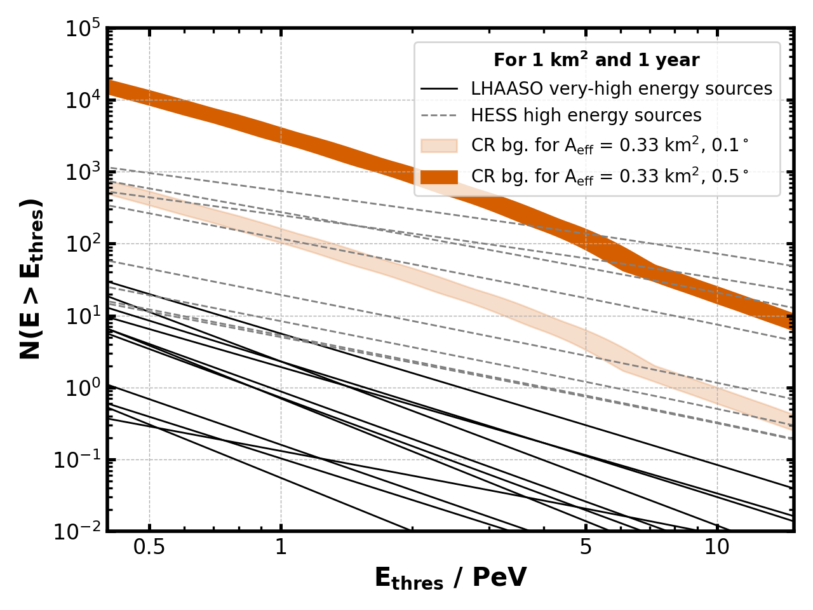
图注：Number of expected showers above a given energy $E$ as function of threshold detection energy for an area corresponding to the entire SKA-Low core, which is a simplified assumption. Shown are expectations for various $\gamma$-ray sources, as well as the cosmic-ray background. Figure from \(\cite{ICRC_2025_Felix}.\)
对应解读：对应“建议重点查看的图表”第3项预期事件率表或曲线，以及“关键图表逐图导读”图4的事件率/阈值解读。
入选理由：这张图直接给出不同伽马源和宇宙线背景在不同阈值探测能量以上的预期簇射数，是判断 SKA-Low 是否能在 PeV 能段获得足够事件数的核心证据。它还能同时暴露源谱外推、能量阈值和 cosmic-ray background 对结论的影响，比单纯展示阵列或单事件波形更能支撑日报中的科学结论。
来源与置信度：\(arxiv_source\)；high；\(arxiv_source\) / \(aaskaii_template.tex\):figure[2]
Fig07
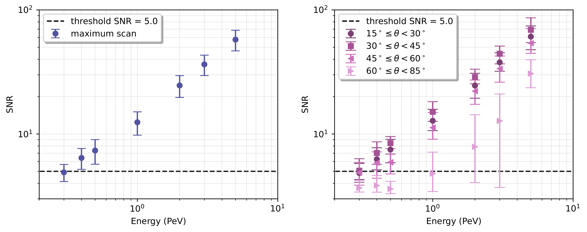
图注：Signal-to-noise ratio (SNR) of the best beamformed signal as function of the simulated gamma ray energy for a zenith angle of \(\ang{15}\) (left) and several different zenith angle bins (right). The zenith angle is defined as \(\ang{0}\) pointing upwards. The shower core lies within 400 meters of the SKA array core (quality cut). Antennas within 200 meters from the shower axis are used for beamforming. The shower axis is assumed to be known.
对应解读：对应“建议重点查看的图表”第1项有效面积或触发效率随能量变化的替代诊断，以及“关键图表逐图导读”图3关于低能 roll-off 和天顶角差异的解读。
入选理由：虽然图中纵轴是 beamformed SNR 而非直接的触发概率或有效面积，但它展示了 SNR 随模拟伽马能量和天顶角的变化，是判断 SKA-Low 能否把射电空气簇射阈值降到 PeV 甚至亚 PeV 的关键仪器响应图。右图的多个天顶角 bin 也正好对应日报强调的天顶角依赖和阈值敏感性。
来源与置信度：\(arxiv_source\)；high；\(arxiv_source\) / \(aaskaii_template.tex\):figure[7]
Fig04
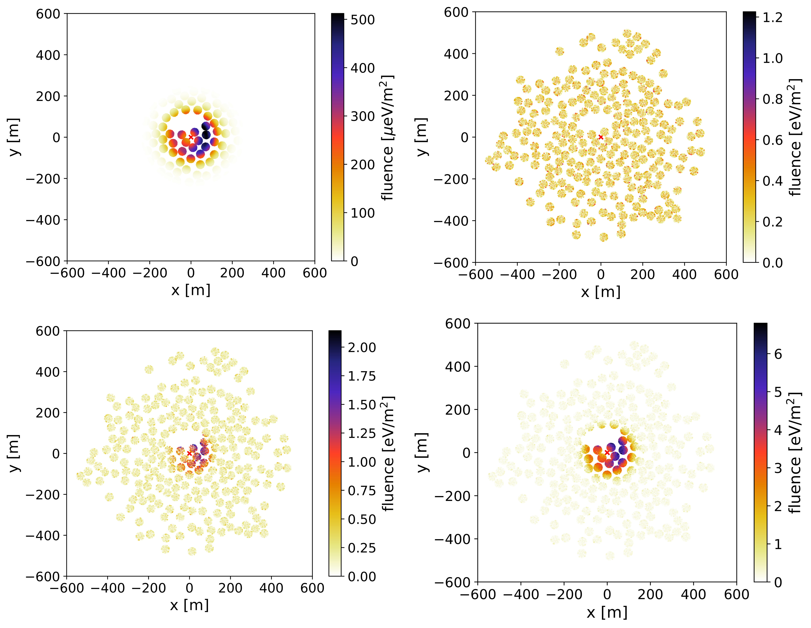
图注：Simulated footprints from air showers initiated by a $\gamma$-ray at 15 degrees zenith angle as they would be detected with SKA-Low. Top row, left: Shower energy 0.5 PeV, no noise; right: Same shower with instrumental and Galactic noise added. Bottom row: the same shower (arrival direction), but at 25 PeV (left) and 50 PeV (right), both including noise.
对应解读：对应“建议重点查看的图表”第2项射电足迹或天线触发多重度图，以及“关键图表逐图导读”图2关于 PeV 级射电足迹、噪声和阵列采样的解读。
入选理由：这张图展示了 0.5、25、50 PeV 伽马簇射在 SKA-Low 上的模拟射电足迹，并比较了无噪声与加入仪器和银河噪声后的情况。它能直观说明低能事件是否只依赖少数高信噪比区域、噪声如何改变足迹可识别性，以及高能事件为何更容易被密集阵列重建。
来源与置信度：\(arxiv_source\)；high；\(arxiv_source\) / \(aaskaii_template.tex\):figure[4]
Fig08
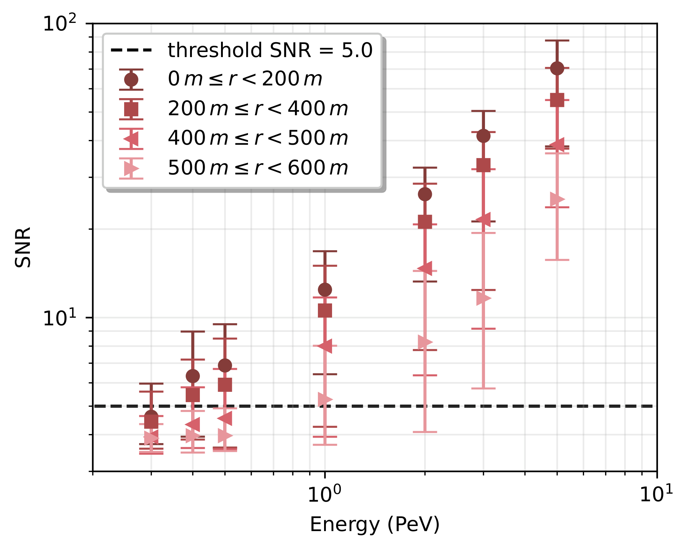
图注：SNR of the best beamformed signal as a function of the simulated gamma ray energy for different distances between shower core and SKA array core, see legend. Antennas within 200 meters from the shower axis are used for beamforming. The shower axis is assumed to be known.
对应解读：对应“建议重点查看的图表”第1项有效面积/触发效率和第6项稳健性图表中关于阵列核心距离、几何覆盖和阈值变化的讨论。
入选理由：该图给出 best beamformed SNR 随伽马能量变化，并区分簇射核心到 SKA 阵列核心的不同距离。它直接检验日报中强调的一个关键问题：不能把 SKA-Low 总天线数或核心总面积简单等同于有效面积，簇射落点相对阵列核心的位置会显著影响低能阈值和可探测性。
来源与置信度：\(arxiv_source\)；high；\(arxiv_source\) / \(aaskaii_template.tex\):figure[8]
Fig09
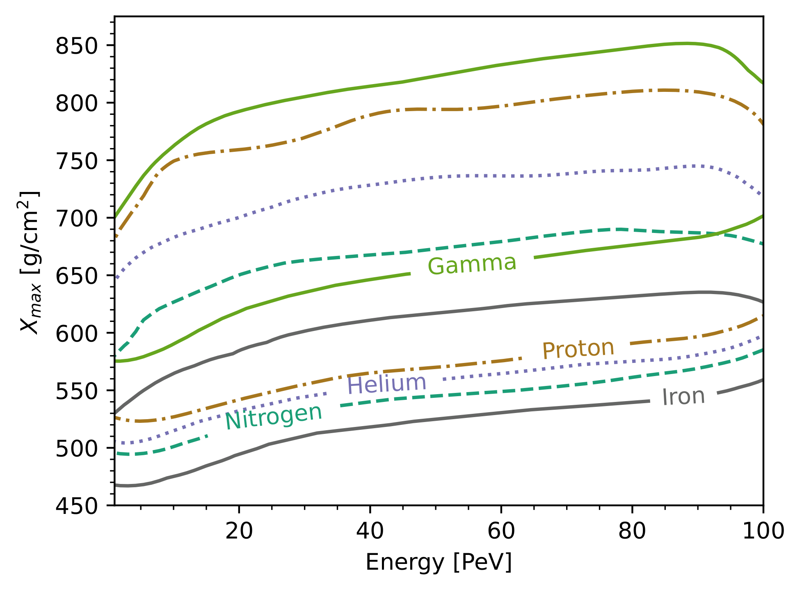
图注：Height of shower maximum as function of energy for simulated air showers of different primary particle. Shown are the 90\,\% contours for different primaries. These results are based on CORSIKA simulations with CONEX using approx. 2500 showers per primary.
对应解读：对应“建议重点查看的图表”第4项背景估计或误分类率诊断，以及“模型拟合”中关于 gamma/hadron 区分、Xmax 分布和背景退化关系的讨论。
入选理由：这张图展示不同原初粒子的簇射最大高度随能量的分布轮廓，可用于评估伽马簇射与 hadron 背景在纵向发展上的可分性。虽然它不是完整的误分类率或显著性图，但它是论文候选图中最接近背景拒绝物理依据的图，对理解 hadron 背景是否可能伪造成源信号很重要。
来源与置信度：\(arxiv_source\)；high；\(arxiv_source\) / \(aaskaii_template.tex\):figure[9]
Fig01
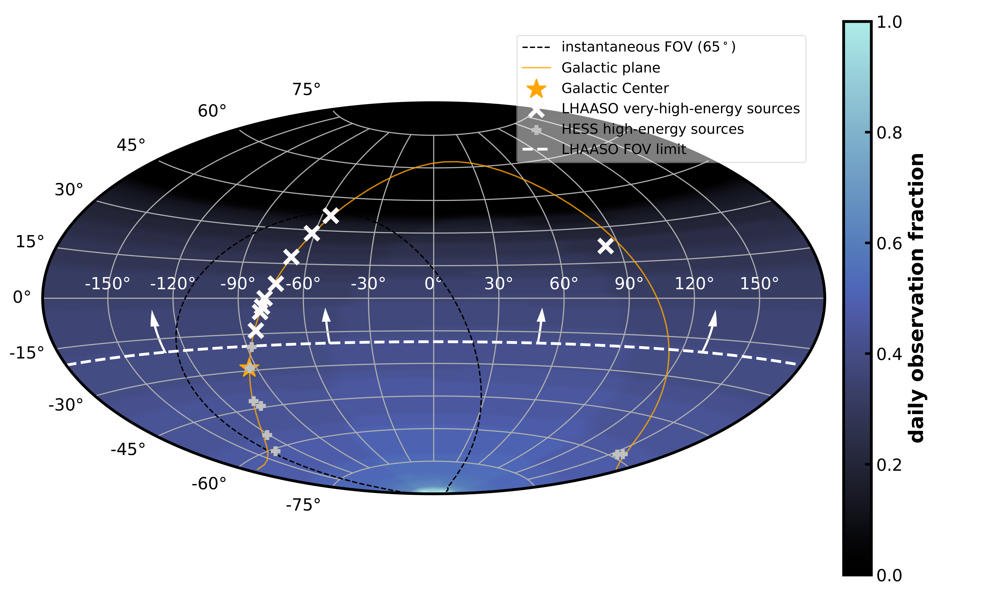
图注：SKA-Low field of view to air showers in equatorial coordinates. The colorbar shows the daily observable fraction (year-averaged). Overlaid are sources of interest as detected with LHAASO \(\citep{LHAASO:2023rpg}\) and H.E.S.S \(\citep{HESS:2018pbp}.\) Figure from \(\cite{ICRC_2025_Felix}\)
对应解读：对应“建议重点查看的图表”第5项与观测可见性/源样本相关的比较，以及“关键图表逐图导读”图1中阵列视场和源覆盖的讨论。
入选理由：该图展示 SKA-Low 对空气簇射的全天视场、每日可观测比例以及 LHAASO/H.E.S.S. 感兴趣源的位置，有助于判断哪些 PeVatron 候选源实际处在可观测窗口内。它不直接给出阈值、有效面积或显著性，因此科学诊断价值低于事件率和 SNR 图，但对解释源选择和曝光时间仍有必要。
来源与置信度：\(arxiv_source\)；high；\(arxiv_source\) / \(aaskaii_template.tex\):figure[1]
强相关工作
与本文最直接相关的是三类工作。第一类是 PeV 伽马发现和 PeVatron 候选源研究，包括 LHAASO 对超高能银河源的目录和个例，HAWC 对 \(>100\,\mathrm{TeV}\) 源的观测，以及 Tibet AS\(\gamma\) 对银河弥散或源相关 PeV 光子的报告。检索关键词可用 “LHAASO PeVatron PeV gamma-ray sources catalog”、“HAWC ultra-high-energy gamma rays”、“Tibet AS gamma PeV gamma rays”。这些工作提供源通量和谱外推，是 SKA-Low 事件率估算的输入。
第二类是空气簇射射电探测基础工作和仪器工作，包括 LOFAR 对宇宙线 \(X_{\max}\) 的高精度测量、AERA 对射电能量标定的研究、CoREAS/ZHAireS 模拟框架，以及 SKA 本身作为宇宙线探测器的早期设想。检索关键词可用 “LOFAR cosmic ray radio Xmax”、“AERA radio detection air showers energy scale”、“CoREAS radio emission air showers”、“SKA cosmic ray air shower detection”。这些工作决定本文关于阈值、重建精度和系统误差的可信度。
可能存在的张力在于：PeV 伽马源通量非常低，且多数候选源的高能谱存在截止或混合源贡献；同时，SKA-Low 的主任务并非空气簇射触发，实际数据率和运行策略可能限制有效曝光。因此应把本文与更保守的地面粒子阵列灵敏度研究、以及对 PeVatron 候选源 leptonic/hadronic 解释的论文一起读。检索关键词可用 “PeVatron leptonic hadronic ambiguity”、“gamma hadron separation PeV gamma-ray observatories”、“SKA-Low transient buffer cosmic rays”。
同一事件 / 同类源线索：
- https://arxiv.org/abs/2606.25932
- https://www.skatelescope.org/
- https://www.lhaaso.ac.cn/
- https://www.hawc-observatory.org/
相似工作：
基础理论 / 方法工作：
相反观点 / 张力线索：
2. Observation of A Solar Like Magnetic Reconnection Event in an AGN Corona with XRISM
- 来源：arXiv / astro-ph.HE
- 链接：https://arxiv.org/abs/2606.25636v1
- 作者：Gal Vardi, Ehud Behar, Liyi Gu, Jelle Kaastra, Matteo Guainazzi, Missagh Mehdipour, Keigo Fukumura, Jon Miller
- 评分：novelty 9/10，importance 9/10，relevance 9/10，final 10.00/10
- 推荐理由：Strong XRISM/XMM observational claim of magnetic reconnection in an AGN corona with UFO connection; high-impact X-ray AGN result directly relevant to high-energy accretion and corona physics.
中文题目：XRISM 观测到 AGN 日冕中的类太阳磁重联事件
做了什么：这篇论文报告了在 Seyfert 星系 NGC 3783 中一次 X 射线耀发的多波段时间演化：软 X 射线与硬 X 射线出现类似太阳耀发中“Neupert 效应”的时序关系，同时在事件期间探测到超快外流。作者用 XRISM/Xtend 与 XMM-Newton/EPIC-PN 的同步观测，把这次事件解释为 AGN 日冕中的磁重联耀发，并把超快外流类比为太阳耀发伴随的日冕物质抛射。由光变时标和能量预算，他们限制磁环高度小于约 \(30\,R_{\rm g}\)，并估算被湮灭磁场强度 \(B>1.3\times10^4\,{\rm G}\)，重联瞬时磁场约 \(B\approx500\,{\rm G}\)。
为什么重要：AGN 的硬 X 射线源长期被称为“日冕”，但这个词很多时候只是几何和谱学上的类比。本文的重要性在于，它尝试给出一个真正的物理类比：AGN 日冕可能像太阳和晚型恒星日冕一样，由磁重联间歇性加热。若 Neupert 效应和伴随超快外流的解释成立，这将是把恒星耀发物理直接移植到黑洞吸积盘日冕的少数观测证据之一。
理论 / 观测 / 仪器方法价值：对理论而言，论文把 AGN 日冕加热、磁环尺度、磁能释放和盘风/超快外流联系到同一个事件中；对观测而言，它展示了 XRISM 与 XMM-Newton 联合时间分辨谱分析在捕捉短时高能过程中的价值；对方法而言，它强调不要只看平均谱，而要同时利用软硬能段的时序关系、吸收线变化和能量预算来诊断日冕物理。
为什么应该关注：如果你关心黑洞吸积盘如何产生紧凑 X 射线日冕、超快外流如何被触发，或者为什么 AGN 变源有时看起来像放大版太阳耀发，这篇文章值得读。它不是简单发现一次亮度升高，而是提出了一个可检验的因果链：磁重联先加速粒子并加热日冕，随后软 X 射线响应积累，且同一磁事件可能驱动高速外流。
展开详细解读：文章讲解、背景、理论、重点章节、图表与相关工作
文章详细讲解
科学问题：AGN 的硬 X 射线连续谱通常被解释为来自黑洞附近的热 Compton 化日冕，但日冕为何能维持高温、其几何尺度有多大、能量如何从吸积盘输运到日冕，一直没有直接答案。太阳和低质量恒星的日冕由磁场储能和重联加热，耀发中常见的 Neupert 效应提供了一个时序诊断：非热粒子或硬 X 射线辐射近似追踪能量注入率，而软 X 射线近似追踪累积热能。本文要解决的问题就是：AGN 日冕中是否也能看到这样的磁重联时序指纹。
作者怎么做：他们分析 NGC 3783 的一次 X 射线耀发，数据来自 XRISM/Xtend 与 XMM-Newton/EPIC-PN。核心做法不是只拟合一次平均谱，而是把光变分成软能段 \(<2.0\,{\rm keV}\) 和硬能段 \(>2.0\,{\rm keV}\)，检查两者随时间的相对演化，并在耀发期间寻找吸收谱特征，特别是可解释为超快外流的蓝移吸收。随后作者用太阳耀发中的 Neupert 效应框架，把硬 X 射线看作瞬时能量释放或粒子加速代理量，把软 X 射线看作热等离子体能量积累代理量。
关键结果：论文声称在这次 NGC 3783 耀发中看到了 Neupert 效应，即软 X 射线光变与硬 X 射线累积量之间存在符合重联耀发预期的关系。事件期间还探测到超快外流，作者把它解释为类似太阳日冕物质抛射的伴随现象。利用耀发持续时间、因果尺度和黑洞引力半径 \(R_{\rm g}=GM_{\rm BH}/c^2\)，他们给出磁环高度上限约 \(30\,R_{\rm g}\)。再把观测到的释放能量与磁能密度联系起来，得到总能量约束下被湮灭磁场 \(B>1.3\times10^4\,{\rm G}\)，而从外流动力学或瞬时重联状态估计得到 \(B\approx500\,{\rm G}\)。
局限和下一步：这类结果最需要警惕的是时序解释的唯一性。AGN 软硬 X 射线延迟也可由吸收变化、反射响应、Compton 化谱形变化或多个发射区叠加造成；超快外流吸收线的显著性也依赖连续谱模型、能量标定和试验因子。下一步应在更多 AGN 中寻找同类事件，使用 XRISM/Resolve 级别的高分辨谱确认外流线，结合 NICER、XMM-Newton、NuSTAR 或未来 Athena 做宽能段时间分辨谱，以检验 Neupert 关系是否在统计样本中成立，而不是单个事件的后验类比。
关键结果是怎么做出来的
本文最重要的证据链从一次具体耀发开始。样本不是大规模巡天统计，而是 NGC 3783 的目标观测；作者把观测时间内的 X 射线计数率按能段拆分为软 X 射线 \(<2.0\,{\rm keV}\) 与硬 X 射线 \(>2.0\,{\rm keV}\)，寻找耀发起落过程中两个能段的非同步演化。读者应特别关注光变曲线是否显示硬能段先快速变化、软能段随后平滑积累或衰减，因为这是 Neupert 解释的核心，而不是单纯“两个能段都变亮”。
显著性方面，关键不是某一个光变峰值有多高，而是软光变是否可以由硬光变的时间积分或其加热率代理量解释。典型检验会比较 \(F_{\rm soft}(t)\) 与 \(\int F_{\rm hard}(t)\,dt\) 的相关性、峰值先后、残差结构，以及不同时间 bin 下关系是否稳定。若论文给出相关系数、拟合优度、蒙特卡洛扰动或红噪声模拟，读者应检查这些量是否已经考虑 AGN 光变的自相关噪声；否则 Neupert 型关系可能被随机红噪声趋势夸大。
第二条证据链是超快外流。作者报告耀发期间出现 UFO 特征，这通常来自高电离铁线或其他高电离吸收线的蓝移。这里要看的是事件期谱与非事件期谱之间的差异谱、吸收线能量、等效宽度、速度 \(v_{\rm out}\)、电离参数 \(\xi\) 和柱密度 \(N_{\rm H}\) 的置信区间。显著性计算应避免简单在残差图上“看见一条线”，而要通过加入吸收组分前后的 \(\Delta C\) 或 \(\Delta\chi^2\)，并考虑搜索能量范围带来的 look-elsewhere effect。
尺度约束来自耀发时标。若光变结构在观测中持续时间为 \(\Delta t\)，最保守的因果尺度为 \(h\lesssim c\Delta t\)，再用 NGC 3783 的黑洞质量换算为 \(R_{\rm g}\) 单位，得到磁环高度上限约 \(30\,R_{\rm g}\)。这一步的系统误差主要来自黑洞质量、耀发起止时间定义、投影几何以及相对论时间延迟。若耀发来自多个小环叠加，\(30\,R_{\rm g}\) 更像区域尺度上限，而不一定是单根磁环长度。
磁场估算是本文把观测与物理机制相连的关键。总能量约束使用磁能 \(E_B\sim B^2V/(8\pi)\)，其中体积 \(V\) 由磁环尺度或外流区域估计；动力学约束则用外流速度、密度或 Alfvén 速度尺度推回瞬时磁场。读者应检查两种磁场 \(B>1.3\times10^4\,{\rm G}\) 与 \(B\approx500\,{\rm G}\) 是否对应不同物理定义和体积假设，而不是把它们理解成相互矛盾的同一个量。
展开背景、理论、公式、模型、章节和图表导读
背景知识
NGC 3783 是研究 AGN 吸收体和外流的经典 Seyfert 星系之一，过去在 XMM-Newton、Chandra、Suzaku 等观测中已显示复杂 warm absorber、宽带 X 射线连续谱和多相外流。这样的源特别适合研究耀发期间谱线和连续谱的共同变化，因为它既足够亮，又有丰富的吸收诊断线。不过这也带来困难：任何瞬时谱线变化都可能与既有多层吸收结构混淆。
AGN 日冕的概念来自 X 射线谱学。标准薄盘的热辐射主要在光学/紫外，而观测到的硬 X 射线幂律需要一群高温电子把低能种子光子逆 Compton 散射到 \({\rm keV}\) 能段。这个高温电子区被称为日冕，但其几何形态可以是灯柱、斑块状磁环、盘面上方热层、喷流基部或多区混合结构。长期问题是：日冕热电子为什么不迅速冷却，能量从盘的差分转动如何进入电子热库。
太阳物理给了一个自然模板。太阳耀发中，磁场在日冕中被剪切和扭缠，重联释放磁能，加速电子和离子，并加热等离子体。Neupert 效应把硬 X 射线或微波辐射与软 X 射线的时间导数联系起来：前者近似代表瞬时能量注入，后者代表热等离子体累积能量。若 AGN 日冕也由磁环和重联加热，类似时序关系应在足够高信噪比、足够快采样的 X 射线光变中出现。
现在重新看这个问题的原因有两个。第一，XRISM 提供了更好的软 X 射线谱诊断能力和稳定时间覆盖，能把连续谱变化与高电离吸收联系起来。第二，多任务联合观测使得软硬能段可同时追踪，减少了非同步观测带来的混淆。随着 XMM-Newton、NuSTAR、NICER 和 XRISM 的协同增加，单个耀发事件可以被当作“时域实验”来研究，而不仅是长期平均谱的扰动。
常见误区是把“AGN 日冕”和“太阳日冕”视为完全相同的缩放版本。实际上 AGN 日冕处于强引力、强辐射场、高光深和相对论轨道剪切环境中，尺度、冷却机制和粒子分布都不同。另一个误区是把 UFO 的出现必然归因于耀发驱动；吸积盘风可以由辐射压、磁离心力或热驱动产生，耀发可能只是改变电离状态使其更容易被看见。因此本文的类比很有启发性，但必须通过时间因果和能量闭合来检验。
基础理论 / 方法脉络
基本物理图像可以从吸积盘和日冕的能量交换开始。黑洞吸积释放引力势能，冷盘产生光学/紫外种子光子，高温电子日冕通过逆 Compton 散射产生 X 射线幂律。若日冕由磁场供能，盘内湍流或磁转动不稳定产生的磁通量会浮出盘面形成磁环，随后在剪切、扭缠或反向磁通接触处发生重联。
Neupert 效应的核心是能量方程。硬 X 射线辐射在太阳耀发中常来自非热电子的轫致辐射，在 AGN 中则未必完全同源，但可作为瞬时高能电子加热或 Compton 化增强的代理量。软 X 射线热辐射或软 excess 则可近似代表被加热等离子体或再处理辐射的累积响应。因此如果加热率 \(H(t)\) 与硬 X 射线通量成正比，而软 X 射线能量 \(E_{\rm th}(t)\) 满足积累加热并缓慢冷却，就会出现 \(F_{\rm soft}(t)\) 类似 \(F_{\rm hard}(t)\) 时间积分的行为。
本文的关键量包括引力半径 \(R_{\rm g}=GM_{\rm BH}/c^2\)、耀发持续时间 \(\Delta t\)、磁环高度 \(h\)、磁场强度 \(B\)、超快外流速度 \(v_{\rm out}\)、柱密度 \(N_{\rm H}\) 和电离参数 \(\xi\)。其中 \(h\) 通常由光变时标给出因果上限，\(B\) 则由磁能预算或外流动力学反推。不同估算给出的 \(B\) 不一定相同，因为它们对应的是不同空间平均、不同时间阶段和不同填充因子。
观测方法上，软硬光变需要在相同时间 bin 下提取，并扣除背景、仪器死时间和跨任务标定差异。谱线分析则要求建立可靠连续谱，包括幂律、反射、软 excess、warm absorber 和可能的 UFO 吸收组分。因为 NGC 3783 本身有复杂吸收，连续谱模型稍有变化就会影响弱吸收线显著性，这一点是判断 UFO 是否真实的系统误差核心。
主要退化关系包括：软 X 射线变化可能来自吸收柱密度或电离变化，而不一定是热能积累；硬 X 射线变化可能来自谱指数 \(\Gamma\) 改变，而不是归一化增加；UFO 线增强可能由电离状态变化造成，而不是新物质被抛出；磁环高度与黑洞质量、倾角和相对论传播延迟退化。本文的价值在于把这些诊断合并成一个重联情景，但读者应逐项检查每个退化是否被数据排除或至少被量化。
公式与推导
第一步定义黑洞附近的自然尺度。引力半径为
其中 \(G\) 是引力常数，\(M_{\rm BH}\) 是黑洞质量，\(c\) 是光速。把耀发区域尺度写成 \(R_{\rm g}\) 单位，可以直接比较不同质量黑洞的日冕几何。
若耀发持续或上升时标为 \(\Delta t\)，最保守的因果尺度满足
其中 \(h\) 是发射或磁环高度尺度，\(z\) 是红移。论文得到的 \(h\lesssim30\,R_{\rm g}\) 本质上来自这类光行时约束，适用于信号由单个紧凑区域主导且没有严重几何投影修正的情况。
Neupert 效应可由热能方程表示：
其中 \(E_{\rm th}\) 是热等离子体能量，\(H(t)\) 是加热率，\(L_{\rm soft}(t)\) 是软 X 射线冷却辐射，\(Q(t)\) 代表传导、膨胀或外流带走的能量。若短时内冷却项变化较慢，则软 X 射线近似追踪加热积分。
把硬 X 射线作为加热率代理量，可写成
其中 \(L_{\rm hard}(t)\) 是硬 X 射线光度，\(\eta_{\rm h}\) 是把观测硬辐射换算为总加热率的比例因子。若 \(L_{\rm soft}(t)\propto E_{\rm th}(t)/t_{\rm cool}\)，则可得到 Neupert 型关系
在 \(t_{\rm cool}\) 足够长、背景已扣除时最清楚。
磁重联的总能量预算来自磁能密度：
其中 \(B\) 是被释放或湮灭的磁场强度，\(V\) 是参与重联的体积，\(f\leq1\) 是可释放磁能比例或填充因子。若观测到的耀发辐射能为 \(E_{\rm rad}\)，且辐射效率为 \(\epsilon_{\rm rad}\)，则
由此可反推
这解释了为什么体积、填充因子和辐射效率的不确定性会直接进入 \(B>1.3\times10^4\,{\rm G}\) 这类下限。
动力学估算常把外流速度与 Alfvén 速度联系起来：
其中 \(v_A\) 是 Alfvén 速度，\(\rho\) 是等离子体质量密度。若重联喷流或被扰动外流速度 \(v_{\rm out}\) 与 \(v_A\) 同阶，则
这类估算给出的是重联瞬时或局部磁场，与总能量预算中的体积平均磁场并不等价。
外流密度可由电离参数联系到观测量：
其中 \(\xi\) 是电离参数，\(L_{\rm ion}\) 是电离光度，\(n\) 是数密度，\(r\) 是吸收体距离。结合柱密度
可估计 \(n\)、\(r\) 或吸收层厚度 \(\Delta r\)，进而进入外流质量和磁场估算。
谱线探测的统计检验通常比较有无 UFO 组分的似然。若使用 Cash 统计量 \(C\)，则改善量为
在正则条件下可近似映射到显著性，但搜索线能量和速度范围时必须考虑试验因子。光变相关性也可用残差
检查，其中 \(a\) 和 \(b\) 是拟合常数；若 \(\epsilon_i\) 呈系统趋势，Neupert 模型就不是完整描述。
模型拟合 / 应用方法
本文涉及两类拟合：时间域拟合和谱域拟合。时间域中，软硬能段光变先被提取为离散时间序列，然后用 Neupert 型模型比较 \(F_{\rm soft}(t)\) 与 \(F_{\rm hard}(t)\) 的积分、导数或滞后关系。实际拟合量可能包括软硬通量归一化、背景水平、时间零点、冷却时间和积分比例系数。读者应检查拟合是否在原始计数空间完成，还是在背景扣除后的通量空间完成；对于低计数 bin，Poisson 似然比高斯 \(\chi^2\) 更稳妥。
谱域拟合要先建立基线模型。对 NGC 3783 这类源，基线通常不能只是单一幂律，而要包括 Galactic absorption、内禀 warm absorber、软 excess、反射或 Fe K 区域成分。UFO 组分的加入会改变高电离吸收线附近的残差，但其显著性取决于连续谱是否足够灵活。若连续谱曲率被错误地用吸收线解释，就会高估 UFO 的置信度。
参数退化非常关键。幂律光子指数 \(\Gamma\)、归一化、吸收柱密度 \(N_{\rm H}\)、电离参数 \(\xi\)、覆盖因子和反射强度之间可相互补偿；在时间分辨谱中，若每个时间段信噪比较低，这些参数往往需要固定或施加先验。固定参数可以稳定拟合，但也会低估系统误差。因此稳健性检验应包括改变连续谱模型、改变时间分箱、改变背景区、允许/不允许 warm absorber 响应，以及比较 XRISM 与 XMM-Newton 的交叉归一化。
磁场和尺度不是直接拟合参数，而是后验派生量。它们依赖黑洞质量、耀发能量、区域体积、辐射效率、填充因子和外流密度。这里最大的退化是 \(B\propto(E/V)^{1/2}\)：如果体积估计增大一个数量级，磁场会降低约 \(\sqrt{10}\)；如果辐射效率很低，则所需磁场更强。动力学磁场还依赖 \(v_{\rm out}\) 是否真的代表 Alfvén 速度，以及外流密度是否来自同一空间区域。
模型可能失败的场景包括：耀发由可变吸收造成而非内禀加热；软 X 射线滞后由盘反射或再处理造成而非热等离子体积累；UFO 是长期存在的盘风，只是在耀发期间因电离变化变得可见；硬 X 射线峰值来自另一个更紧凑的 Compton 化区，与软 X 射线区没有直接重联因果联系。好的读法是把本文看作一个强物理解释，而不是已完全排除所有替代模型的最终定论。
重点章节 / 结果段落怎么读
数据/观测章节应优先读清楚观测时间、XRISM/Xtend 与 XMM-Newton/EPIC-PN 的重叠区间、时间分辨率、能段划分和背景处理。这里决定了 Neupert 效应是否可被可靠识别；如果两个仪器的有效时间覆盖不一致，软硬时序关系可能受到采样窗口影响。
光变分析章节是全文核心。读者应关注作者如何定义耀发起止、如何分离软能段 \(<2.0\,{\rm keV}\) 与硬能段 \(>2.0\,{\rm keV}\)、是否做了硬光变积分与软光变比较、是否给出相关性或拟合残差。重点不是峰值亮度，而是时间结构是否符合先加热、后累积的 Neupert 图像。
谱分析章节需要看 UFO 的识别。应检查吸收线能量、速度、电离参数、柱密度、等效宽度以及加入 UFO 组分后的统计改善。特别要看事件期与非事件期谱是否分开拟合，以及 UFO 是否只在耀发期间显著。
物理解释章节把光变、UFO 和磁重联联系起来。这里要读作者如何从时标得到 \(h<30\,R_{\rm g}\)，如何从总能量得到 \(B>1.3\times10^4\,{\rm G}\)，又如何从动力学估计 \(B\approx500\,{\rm G}\)。建议把这些公式的假设逐条列出，避免把派生量误读为直接观测量。
讨论和稳健性检验部分要看替代解释。理想情况下作者会讨论可变吸收、反射滞后、红噪声偶然相关、仪器交叉标定和 UFO 线搜索试验因子。如果这些检验较弱，那么本文仍然是有吸引力的案例研究，但其“首次直接证据”的强度需要在未来样本中验证。
建议重点查看的图表
-
软硬 X 射线光变曲线：检查 \(<2.0\,{\rm keV}\) 与 \(>2.0\,{\rm keV}\) 的峰值时间、上升/衰减时标、误差条和时间 bin，确认不是单纯共同增亮。
-
Neupert 效应诊断图：应看软 X 射线通量与硬 X 射线时间积分的对比，或软 X 射线导数与硬 X 射线的对比；关键是残差是否随机、相关性是否由少数点驱动。
-
事件期与静息期谱比值或残差图：检查 UFO 候选吸收线是否只在耀发期间出现，线的位置是否与合理蓝移速度一致，是否落在仪器响应复杂区域。
-
时间分辨谱参数图：关注 \(\Gamma\)、归一化、\(N_{\rm H}\)、\(\xi\)、UFO 速度和等效宽度随时间的变化，判断连续谱变化和吸收变化是否可区分。
-
磁环尺度和能量预算示意或参数约束图：检查 \(h/R_{\rm g}\)、\(B\)、体积、填充因子和辐射效率的关系，特别是 \(B\) 下限对假设的敏感性。
-
稳健性或模拟显著性图表：若有 Monte Carlo、假线搜索、不同分箱或不同连续谱模型比较，应优先检查，因为这些决定 UFO 与 Neupert 关系是否足够稳健。
关键图表逐图导读
图 1：通常应是 XRISM/Xtend 与 XMM-Newton/EPIC-PN 的观测光变。横轴为观测时间，纵轴为计数率或通量，至少分为软能段和硬能段。读图时要看硬 X 射线是否出现更尖锐、更早的结构，而软 X 射线是否更平滑或延后；陷阱是不同能段误差条和背景比例不同，视觉上的延迟不一定有统计意义。
图 2：Neupert 效应诊断图可能把软 X 射线曲线与硬 X 射线积分曲线叠加，或画 \(dF_{\rm soft}/dt\) 对 \(F_{\rm hard}\)。横轴若为时间，模型线应代表积分后的硬能段预测；若为散点图，则应关注相关斜率和置信带。读图陷阱是积分操作会自动平滑噪声，容易制造看似良好的趋势，因此残差和随机化检验比肉眼重合更重要。
图 3：谱残差或谱比值图应展示事件期相对于基线模型的吸收特征。横轴为能量，纵轴为数据/模型比值、残差或 \(\Delta C\)。UFO 的关键证据是蓝移高电离线在预期能量处改善拟合；陷阱是 Fe K 区域、仪器边缘或 warm absorber 未建模曲率都可能产生局部残差。
图 4：加入 UFO 模型后的置信区间图可能显示速度 \(v_{\rm out}\)、电离参数 \(\xi\) 和柱密度 \(N_{\rm H}\) 的联合约束。坐标轴若是 \(\log\xi\) 与 \(N_{\rm H}\)，或速度与 \(\Delta C\)，应看置信区间是否闭合、是否存在多个局部极小。读图陷阱是只报告最佳值而忽略多解，尤其在低信噪比时间段。
图 5：物理推断图可能展示磁环高度、释放能量和磁场强度的关系。横轴可为区域尺度或体积，纵轴为 \(B\) 或能量；模型线代表不同填充因子、辐射效率或外流密度。主要结论是观测要求的磁场达到 AGN 内盘日冕可接受的强度范围；陷阱是这些线通常不是直接拟合，而是由假设传播出的派生约束。
图 6：若论文包含替代模型或稳健性检验图，应看改变连续谱、吸收模型或时间分箱后 Neupert 关系和 UFO 显著性是否仍存在。横轴可能是模型编号、时间 bin 或模拟试验，纵轴为 \(\Delta C\)、相关系数或显著性。若结论只在某一个分箱或某一个基线模型下成立，物理解释就应更谨慎。
论文原图 / 可嵌入图片
（未提供 verified figure；为避免编造图片链接，本节只在能确认官方图片 URL 或成功提取论文原图时嵌入图片。）
强相关工作
这篇工作与三类文献直接相关。第一类是 NGC 3783 的同源观测文献，尤其是 warm absorber、多相外流和 X 射线谱变研究；检索关键词可用 “NGC 3783 warm absorber XMM-Newton Chandra”, “NGC 3783 ultra-fast outflow”, “NGC 3783 XRISM”。同源背景很重要，因为本文的 UFO 解释必须放在 NGC 3783 已知复杂吸收结构中判断。
第二类是 AGN 日冕几何和加热机制研究，包括 X 射线 reverberation、microlensing 日冕尺度、宽带 Compton 化和磁重联模型；检索关键词可用 “AGN corona magnetic reconnection”, “X-ray reverberation corona height”, “lamp-post corona Seyfert”。这些工作提供了 \(h\sim数到数十\,R_{\rm g}\) 的独立尺度约束，可与本文 \(h<30\,R_{\rm g}\) 比较。
第三类是太阳和恒星耀发中的 Neupert 效应、CME 与磁重联理论。本文的论证依赖把 Neupert 效应从太阳物理推广到 AGN，因此应查 “Neupert effect solar flares”, “stellar flare Neupert effect”, “magnetic reconnection coronal mass ejection”。潜在相反观点包括：AGN 软硬滞后由反射或吸收驱动、UFO 为长期盘风而非耀发触发、红噪声相关伪装成 Neupert 关系；检索关键词可用 “AGN variable absorption soft hard lag”, “AGN UFO significance look elsewhere effect”。
同一事件 / 同类源线索：
- https://arxiv.org/abs/2606.25636
- https://arxiv.org/pdf/2606.25636
- http://simbad.u-strasbg.fr/simbad/sim-id?Ident=NGC%203783
- https://ned.ipac.caltech.edu/byname?objname=NGC%203783
相似工作：
（未提供）
基础理论 / 方法工作：
相反观点 / 张力线索：
（未提供）
3. Extreme PeV accelerator associated with GRS 1915+105
- 来源：arXiv / astro-ph.HE
- 链接：https://arxiv.org/abs/2606.25054v1
- 作者：Zhen Cao, F. Aharonian, Y. X. Bai, Y. W. Bao, D. Bastieri, X. J. Bi, Y. J. Bi, W. Bian
- 评分：novelty 9/10，importance 10/10，relevance 10/10，final 10.00/10
- 推荐理由：LHAASO与Fermi-LAT联合研究GRS 1915+105的扩展GeV–PeV伽马辐射，支持微类星体作为多PeV宇宙线加速器；伽马射线和PeVatron主题高度优先。
中文题目：与 GRS 1915+105 相关的极端 PeV 加速器
做了什么：这篇论文把 LHAASO 的水切伦科探测器阵列和平方公里阵列数据，与 Fermi-LAT 长达十七年的 GeV 数据联合起来，研究银河系微类星体 GRS 1915+105 周围的宽能段伽马射线辐射。核心发现是：TeV 到 PeV 能段的辐射呈扩展结构，辐射质心相对双星和已知喷流方向偏移约 \(0.13^\circ\)；谱能量分布可用逐渐变陡的 log-parabola 描述，没有看到尖锐截断。作者认为这些特征更自然地指向源内加速的强子宇宙线逃逸后与周围致密介质碰撞产生 \(\gamma\) 射线，而不是纯粹的喷流内轻子辐射。模型要求质子最高能量超过 \(5\,\mathrm{PeV}\)，且至少有几个百分点的喷流机械功率转化为高能质子。
为什么重要：如果结论成立，GRS 1915+105 将不只是一个著名的相对论喷流双星，而是银河系内能够把强子加速到 PeV 以上的“微类星体 PeVatron”。这直接关系到银河宇宙线膝区附近粒子的候选源问题，也把通常讨论于超新星遗迹、脉冲星风云和恒星形成区的 PeV 加速问题扩展到吸积驱动喷流系统。
理论 / 观测 / 仪器方法价值：观测价值在于它提供了从 GeV 到超高能 \(\gamma\) 射线的同源候选谱形和空间形态约束；理论价值在于它把质子加速效率、最大能量、逃逸扩散和靶物质分布放在同一个可检验框架内；方法价值在于展示了 LHAASO-WCDA、LHAASO-KM2A 与 Fermi-LAT 长时间基线联合分析如何区分点源、扩展源、谱弯曲和空间偏移。
为什么应该关注：你应该关注它，因为它把“微类星体是否能贡献银河宇宙线 PeV 成分”从泛泛的能量预算讨论推到了可观测的空间偏移、宽带谱形和效率约束上。即使未来部分解释被修正，这篇文章也会成为检验吸积喷流强子加速、源外传播和复杂银河背景建模的标杆案例。
展开详细解读：文章讲解、背景、理论、重点章节、图表与相关工作
文章详细讲解
科学问题：GRS 1915+105 是银河系中最著名的微类星体之一，具有黑洞吸积、相对论喷流和强烈多波段变源行为。问题不只是它能否发出高能伽马射线，而是它是否能把强子粒子加速到 PeV 以上，并让这些粒子在源周围介质中留下可分辨的 \(\gamma\) 射线信号。PeV 加速器的判据很苛刻：既要有足够高的最大能量，又要能排除只是电子逆康普顿或局部背景涨落造成的表观硬谱。
作者怎么做：论文使用 LHAASO 四年数据，包括对较低 TeV 能段较敏感的 WCDA 和对更高能段、尤其百 TeV 以上更有力的 KM2A，同时引入 Fermi-LAT 十七年数据覆盖 GeV 能段。分析重点包括空间模板拟合、源位置和扩展度测量、谱能量分布构建，以及同一物理场景下的宽带辐射建模。相比只看一个能段，联合分析能同时约束质心偏移、谱是否连续、是否存在高能截断，以及 GeV 背景源是否会混淆。
关键结果：LHAASO 数据显示 GRS 1915+105 附近存在扩展 \(\gamma\) 射线辐射，且辐射质心相对双星和喷流有约 \(0.13^\circ\) 的显著偏移。谱能量分布不是简单指数截断，而是可由 log-parabola 一类平滑弯曲谱描述，随能量升高逐步变陡。作者强调，从 GeV 到 TeV 似乎可由单一幂律族延伸并逐渐弯曲，这与强子宇宙线从源中逃逸后照亮周围气体的图像相符。模型拟合要求母体质子能量超过 \(5\,\mathrm{PeV}\)，并且喷流机械功率中至少几个百分点进入高能质子。
局限和下一步：最重要的不确定性来自银河弥散背景、邻近源混淆、气体分布三维结构和扩散历史。空间偏移支持源外强子相互作用，但偏移本身也可能受背景模板、点扩散函数、能量相关形态或未解析源影响。下一步需要更长时间的 LHAASO 数据、更精细的能量分段形态、分子气体和原子气体图的联合建模，以及与喷流活动史、无线电结构、X 射线状态和中微子观测的交叉检验。
关键结果是怎么做出来的
本文最关键的证据链从样本选择开始：LHAASO 使用约四年的观测，分别利用 WCDA 覆盖较低 TeV 区间、KM2A 覆盖更高能区间；Fermi-LAT 则使用约十七年累计数据提供 GeV 约束。作者并不是只在 GRS 1915+105 的已知坐标上取一个点源光谱，而是对周围区域做空间似然分析，允许源位置、扩展度和谱形参与拟合。这一点很关键，因为论文的物理解读很大程度依赖“辐射质心偏离双星本体”而非“本体点源发光”。
事件数的具体分布应从论文的事件图、显著性图和谱点表中读取；从摘要可确定，联合 LHAASO-WCDA 与 LHAASO-KM2A 分析给出了扩展辐射，并且质心相对 GRS 1915+105 及其喷流方向偏移约 \(0.13^\circ\)。读者应检查偏移量相对于 LHAASO 在相应能段的点扩散函数、源扩展半径和定位系统误差是否足够大。若偏移仅在某个能段显著，而能量分段后不稳定，则强子逃逸解释会变弱；若各能段质心一致或呈物理上可解释的能量依赖，则结论更稳。
统计上，核心检验应包括点源模型与扩展源模型的似然比、无源背景与有源模型的检验统计量、不同谱模型之间的比较，以及加入或不加入 Fermi-LAT GeV 点后对谱曲率的影响。论文声称谱能量分布可由 log-parabola 描述且没有尖锐截断，读者应重点看谱点高能端的误差棒、上限处理、系统误差带，以及指数截断幂律是否真的被排除或只是参数未受强约束。
物理模型比较的关键在于空间和谱两条线是否相互支持。若是电子逆康普顿辐射，高能电子在强辐射场和磁场中冷却较快，通常会造成形态、谱截断和多波段同步辐射约束上的压力；强子模型则可以通过逃逸质子与周围致密气体碰撞产生 \(\pi^0\) 衰变 \(\gamma\) 射线，并自然允许辐射峰值偏离加速器本体。作者用宽带谱拟合推断质子最高能量超过 \(5\,\mathrm{PeV}\)，并估计至少几个百分点的喷流机械功率转化为质子。
稳健性方面，最应关注的是弥散背景模型、邻近 \(\gamma\) 射线源列表、气体模板、能量标定和角分辨率的系统误差。对于银河平面附近目标，背景不是平坦项，而是强结构化的弥散辐射；一个未建模的邻近源或气体云模板偏差都可能改变源扩展度和质心。论文若给出替代背景、不同能阈、不同感兴趣区半径和不同空间模板的结果，读者应把这些表格或附录当作判断结论可信度的核心材料。
展开背景、理论、公式、模型、章节和图表导读
背景知识
微类星体是包含致密天体和伴星的双星系统，吸积盘能够驱动相对论喷流。它们在物理上可被视为缩小版类星体：黑洞质量小得多，特征时间尺度短得多，但吸积、磁场、喷流准直和冲击加速等过程具有相似性。GRS 1915+105 因强烈 X 射线变源、超光速射电喷流和复杂吸积态而长期被视为研究黑洞喷流耦合的原型源。
历史上，银河 PeVatron 的主流候选包括年轻超新星遗迹、银河中心、脉冲星风云以及大质量恒星形成区。微类星体也一直被讨论，但证据较难确立：它们的喷流能量足够可观，环境也可能有致密气体，但伽马射线信号容易被银河弥散背景、邻近源和变源行为混淆。要宣称微类星体是 PeV 强子加速器，需要同时满足空间、能谱和能量预算三方面约束。
现在值得重新看的原因是 LHAASO 在数十 TeV 到 PeV 能段的灵敏度显著提升。传统 GeV 卫星和 TeV 切伦科夫望远镜很难单独确认是否存在 PeV 母体粒子，因为低能谱形可被多种机制解释，而能量越高越接近最大加速能力的直接诊断。LHAASO 的大视场、长时间曝光和高能空气簇射能力，使得延展辐射和超高能谱尾成为可测量量。
该领域常见误区之一是把“探测到百 TeV \(\gamma\) 射线”等同于“已证明 PeV 质子加速”。若辐射来自电子逆康普顿，母体电子能量和冷却限制不同；若来自强子 \(p p\) 相互作用，\(\gamma\) 射线能量通常只占质子能量的一部分，因此百 TeV \(\gamma\) 射线更接近 PeV 质子的证据。另一个误区是只看源坐标重合：对于逃逸强子，辐射峰值本来就可能出现在附近气体云，而不是加速器正中心。
基础理论 / 方法脉络
基本物理图像是：吸积盘和喷流释放引力势能，其中一部分转化为非热粒子能量。若喷流中存在强磁场、激波、磁重联或剪切层，带电粒子可在有限时间内反复散射增能。粒子能否达到 PeV，取决于加速速率、逃逸时间、冷却时间和源区尺度共同给出的上限。
对于强子情景，高能质子从 GRS 1915+105 附近逃逸后进入周围星际介质，与气体中的质子发生非弹性 \(p p\) 碰撞，产生 \(\pi^0\)、\(\pi^+\) 和 \(\pi^-\)。其中 \(\pi^0\) 很快衰变为两颗 \(\gamma\) 光子，形成从 GeV 到 PeV 的连续谱。若周围气体分布不对称，\(\gamma\) 射线质心就会偏离加速器本体，这是本文解释空间偏移的关键。
对于轻子情景，高能电子可通过逆康普顿散射把星光、红外背景或宇宙微波背景光子提升到 TeV 能段，也可通过同步辐射产生射电到 X 射线信号。问题在于 PeV 电子冷却极快，且 Klein-Nishina 效应会压低高能逆康普顿效率，因此若没有相应的 X 射线同步辐射或极端低磁场假设，纯轻子模型通常更受限制。
观测方法上，LHAASO 并不直接看到入射 \(\gamma\) 光子，而是测量大气簇射在地面的次级粒子和切伦科夫光信号，再重建方向、能量和粒子类型。Fermi-LAT 则通过成对产生事件重建 GeV 光子。联合分析的关键量包括源显著性、空间扩展、质心位置、谱点、谱曲率，以及与弥散背景和邻近源模型的残差。
常见退化包括：源扩展与点扩散函数退化，谱弯曲与能量标定误差退化，质心偏移与背景模板偏差退化，强子总能量与气体密度退化，最大能量与高能谱点统计误差退化。因此本文的结论不能只看最佳拟合曲线，而应看替代模型和系统误差下的稳定性。
公式与推导
第一步是能量预算。若喷流机械功率为 \(L_{\rm j}\)，其中比例 \(\eta_{\rm p}\) 进入非热质子，则注入到强子宇宙线的功率可写为
这里 \(L_{\rm p}\) 是质子功率，\(\eta_{\rm p}\) 是加速效率。本文的物理解读要求 \(\eta_{\rm p}\) 至少达到几个百分点，这对微类星体喷流已经相当高。
第二步是最大能量的尺度估计。有限源区中粒子回旋半径不能超过有效加速尺度，可写成 Hillas 型条件
其中 \(Z\) 是电荷数，\(e\) 是元电荷，\(B\) 是磁场，\(R\) 是加速区尺度，\(\beta_{\rm acc}c\) 表征加速相关速度。若要得到 \(E_{\max}>5\,\mathrm{PeV}\)，源区必须具有足够大的 \(B R\) 或足够高的加速效率。
第三步是加速与逃逸或损失的竞争。常用近似是
其中 \(t_{\rm acc}\) 是加速时间，\(\eta_{\rm acc}\geq 1\) 描述偏离 Bohm 极限的低效率因子。最大能量由 \(t_{\rm acc}(E)\) 与逃逸时间、动力学时间或损失时间相等决定。
第四步是强子注入谱。论文用平滑弯曲谱或与之等价的母体分布描述宽带数据，可抽象写为
其中 \(Q_0\) 是归一化，\(s\) 是注入谱指数，\(E_0\) 是参考能量，\(\kappa\) 控制截断形状。若观测上没有尖锐截断，则 \(E_{\max}\) 只能给出较高下限或宽置信区间。
第五步是逃逸后的空间分布。若质子从近似点源注入并以扩散系数 \(D(E)\) 传播，在连续注入近似下粒子密度满足
这里 \(n_{\rm p}\) 是质子数密度，\(\mathbf r\) 是相对源的位置。若气体密度 \(n_{\rm gas}(\mathbf r)\) 不均匀，\(\gamma\) 射线亮度峰值会偏向气体较密集区域。
第六步是 \(p p\) 碰撞产生 \(\gamma\) 射线的体发射率。近似地，
其中 \(q_\gamma\) 是单位体积单位能量发射率，\(d\sigma_{pp\rightarrow \gamma}/dE_\gamma\) 是微分产生截面。这个式子说明谱形和空间形态同时依赖母体质子和气体分布。
第七步是从发射率到观测通量。距离为 \(d\) 时，能量通量可写为
这里 \(\Phi_\gamma\) 是微分光子通量，积分覆盖发光体积。宽带谱能量分布中的每个点都可与该式给出的模型曲线比较。
第八步是经验谱形。文中提到谱能量分布可用 log-parabola 的逐渐变陡形式描述，例如
其中 \(N_0\) 是归一化，\(\alpha\) 是参考能量处的谱指数，\(\beta\) 是曲率。若 \(\beta>0\)，谱会随能量逐步变软，而不是在某个能量处突然截断。
第九步是空间和谱拟合的似然诊断。对计数图中第 \(i\) 个像素或能量箱，泊松似然为
其中 \(n_i\) 是观测计数，\(\mu_i\) 是模型预期计数，包括源、弥散背景和仪器响应。源显著性或模型比较常用
其中 \(\mathcal L_1\) 和 \(\mathcal L_0\) 分别对应含源模型和零假设或较简单模型。读者应检查 \(TS\) 是否在改变背景、源模板和能区后保持稳定。
模型拟合 / 应用方法
本文这类工作首先拟合的是空间模型：给定仪器点扩散函数、曝光和背景模板，比较点源、二维高斯扩展源、可能的多源模型以及不同质心位置。关键参数包括源坐标、扩展尺度、积分通量和每个能段的谱归一化。对于 GRS 1915+105，质心相对双星偏移约 \(0.13^\circ\) 是进入物理解读的核心拟合量，因此残差图和定位误差椭圆非常重要。
第二层是谱拟合。模型通常包括幂律、指数截断幂律和 log-parabola。若 log-parabola 优于简单幂律，说明谱存在统计上可见的弯曲；若指数截断没有显著改善或截断能量只给出下限，则不能说观测到了尖锐截止。联合 Fermi-LAT、WCDA 和 KM2A 时，还要考虑不同仪器之间的能量标定、通量归一化和角分辨率差异。
第三层是物理辐射模型拟合。强子模型的参数包括质子谱指数、最大能量、总能量或功率、靶气体密度、源年龄或注入历史、扩散系数及其能量依赖。最典型退化是 \(W_{\rm p} n_{\rm gas}\) 退化：较低气体密度可以由较高质子总能量补偿，反之亦然。最大能量则主要由最高能谱点和是否存在截断决定。
系统误差方面，银河弥散背景是最大挑战之一。若背景模型在 GRS 1915+105 附近低估，可能制造假扩展源；若高估，则会压低真实源通量并改变谱曲率。邻近未解析源、宇宙线各向异性、能量重建偏差和 \(\gamma\)/强子分离效率都会进入系统误差预算。读者应关注作者是否用不同背景模板、不同能量阈值、不同感兴趣区和不同源列表重复拟合。
模型可能失败的地方也很清楚：如果后续观测发现高能辐射显著变源且与 X 射线喷流态同步，稳定的源外强子云解释会受压；如果更精细的气体图无法在偏移方向找到足够靶物质，强子碰撞效率会不足；如果 CTA 或未来 LHAASO 数据发现谱在几十 TeV 已急剧截断，则 \(>5\,\mathrm{PeV}\) 的母体质子结论需要下修。
重点章节 / 结果段落怎么读
数据与样本部分应先读。重点看 LHAASO-WCDA、LHAASO-KM2A 和 Fermi-LAT 各自使用的时间跨度、能区、事件选择、背景估计和源列表。对于银河平面目标，背景选择和邻近源处理比单纯曝光时间更决定结果可信度。
空间分析部分是全文的第一核心。读者应检查作者如何从显著性图进入最大似然定位，是否允许源扩展，是否比较点源和扩展源，以及 \(0.13^\circ\) 偏移相对统计误差和系统误差的显著性。若有能量分段形态，应优先阅读。
谱能量分布部分是第二核心。重点看 Fermi-LAT、WCDA 和 KM2A 的谱点是否在同一模型下连续，log-parabola 与简单幂律、指数截断幂律的比较如何，最高能点是探测还是上限，以及系统误差带是否改变“无尖锐截断”的结论。
物理解释部分应围绕强子与轻子模型比较阅读。作者倾向强子模型的理由包括空间偏移、GeV 到 TeV 的连续谱和所需母体粒子能量。读者要看他们是否量化了轻子模型的冷却、磁场和同步辐射约束，而不是只凭定性说法排除。
讨论和稳健性检验部分决定结论强度。应寻找替代背景、不同气体模板、邻近源剔除或加入、能量标定变化、源扩展固定或释放等测试。若这些测试下质子最高能量和效率结论保持在同一量级，文章的 PeVatron 论证才更稳。
建议重点查看的图表
-
全能段显著性或计数残差图：看 GRS 1915+105 坐标、最佳拟合质心、误差圆和扩展轮廓是否清楚分离。
-
能量分段空间图：看低能和高能 \(\gamma\) 射线质心是否一致，扩展是否随能量变化，是否可能由邻近源造成。
-
谱能量分布图：看 Fermi-LAT、WCDA、KM2A 谱点是否连续，最高能端是实测点还是上限，log-parabola 曲线与其他谱模型差异在哪里。
-
残差图或模型比较图：看点源模型减除后是否仍有系统残差，扩展源模型是否真正改善拟合。
-
强子与轻子模型曲线图：看 \(p p\) 模型、逆康普顿模型和可能的同步辐射约束是否同时满足多波段数据。
-
气体分布或环境图：看 CO、HI 或尘埃模板中是否存在与 \(\gamma\) 射线偏移方向对应的致密介质。
-
系统误差表：看不同背景模型、能区选择和源模板下通量、质心、扩展度、谱曲率和最大能量是否稳定。
关键图表逐图导读
图 1：通常应是目标区域的 LHAASO 显著性图或 \(\gamma\) 射线强度图。横纵轴多为赤经、赤纬或银河经纬，标出 GRS 1915+105 的位置、拟合质心、可能的喷流方向和误差轮廓。读图重点是 \(\gamma\) 射线峰值是否与双星位置分离，以及分离是否大于定位误差。陷阱是颜色图容易夸大低显著性结构，必须结合等值线和误差圆。
图 2：可能展示空间模型拟合或残差。横纵轴仍为空间坐标，数据点或颜色代表计数残差，模型线可能是点源、二维高斯或背景模板。重点看点源模型是否留下扩展残差，扩展源模型是否消除结构化残差。陷阱是银河弥散背景不完美时也会留下类似扩展源的残差。
图 3：谱能量分布图应是全文最重要的图之一。横轴是光子能量，纵轴通常是 \(E^2 dN/dE\) 或等价能量通量；Fermi-LAT、WCDA 和 KM2A 用不同符号表示。模型线包括 log-parabola、幂律或带截断模型。重点看谱是否从 GeV 平滑延伸到超高能，以及最高能端有没有急剧下弯。陷阱是不同仪器系统误差和非同时观测会影响谱连接。
图 4：物理辐射模型图通常叠加强子 \(p p\) 辐射、轻子逆康普顿和可能的多波段上限。重点看强子模型是否在不要求过高能量预算的情况下通过所有 \(\gamma\) 射线点，同时不违反 X 射线或射电约束。陷阱是气体密度假设会直接缩放所需质子能量。
图 5：环境或气体模板图若存在，应把 \(\gamma\) 射线等值线叠加在 CO、HI 或尘埃图上。重点看偏移方向是否有高柱密度结构，是否能解释辐射质心不在双星本体。陷阱是二维柱密度不等于三维空间邻近，距离混淆会影响 \(p p\) 解释。
图 6：稳健性或模型比较表图应显示不同假设下的 \(TS\)、谱参数、源扩展和质心。重点看结论是否依赖某一个背景模型或某一个能量阈值。陷阱是只报告最佳情形而不展示失败或边界情形会高估结论强度。
论文原图 / 可嵌入图片
Fig01
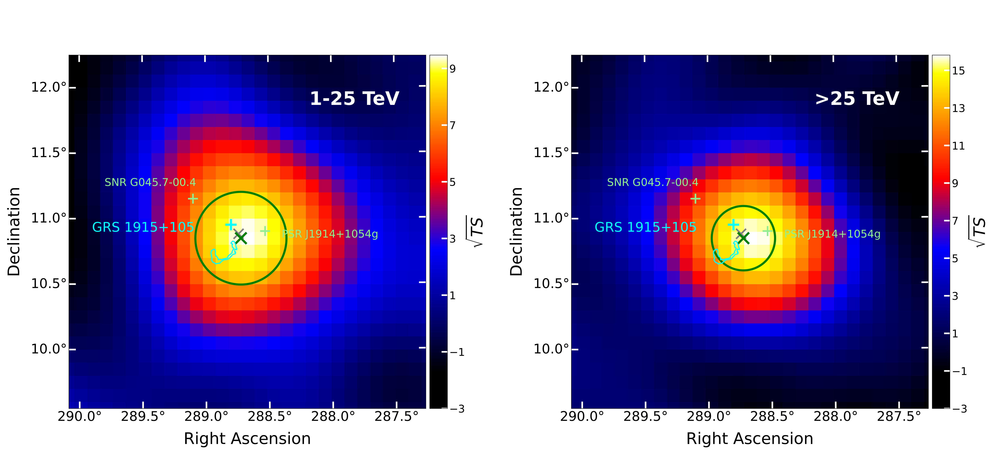
图注：Significance maps of \(\grsobs\) (\grslhaaso) observed with LHAASO-WCDA (upper panel) and with LHAASO-KM2A (lower panel). The dark-green circles indicate the measured source extension, centered on the dark-green cross ($\times $). The radii of the circles are extension at $5\,\textrm{TeV}$ (0.354$^{\circ}$) and that at $100\,\textrm{TeV}$ (0.246$^{\circ}$). The cyan plus ($+$) symbol marks the nominal position of \(\grs,\) while the gray cross ($\times$) shows the source position reported in the previous LHAASO-KM2A measurement~\(\cite{LHAASO:2024psv}.\) Light green plus ($+$) symbols denote the positions of other known supernova remnants (SNRs) or pulsars, and cyan contour marks the jet-interstellar medium (ISM) interaction region observed by MeerKAT~\(\cite{Motta:2025lgb}.\)
对应解读：对应“建议重点查看的图表”第1项，以及“关键图表逐图导读”图1；也直接支撑空间模型拟合中质心相对 GRS 1915+105 偏移约 0.13° 的核心结论。
入选理由：这是最关键的空间显著性图，同时给出 WCDA 与 KM2A 两个能段的显著性分布、拟合质心、源扩展圆、GRS 1915+105 名义位置、历史 LHAASO 位置和 MeerKAT 喷流-ISM 相互作用区域。它最直接检验日报强调的“伽马射线峰值是否与双星位置分离、分离是否超过定位/扩展尺度”这一核心证据。
来源与置信度：\(arxiv_source\)；high；\(arxiv_source\) / \(Science_Bulletin.tex\):figure[1]
Fig09
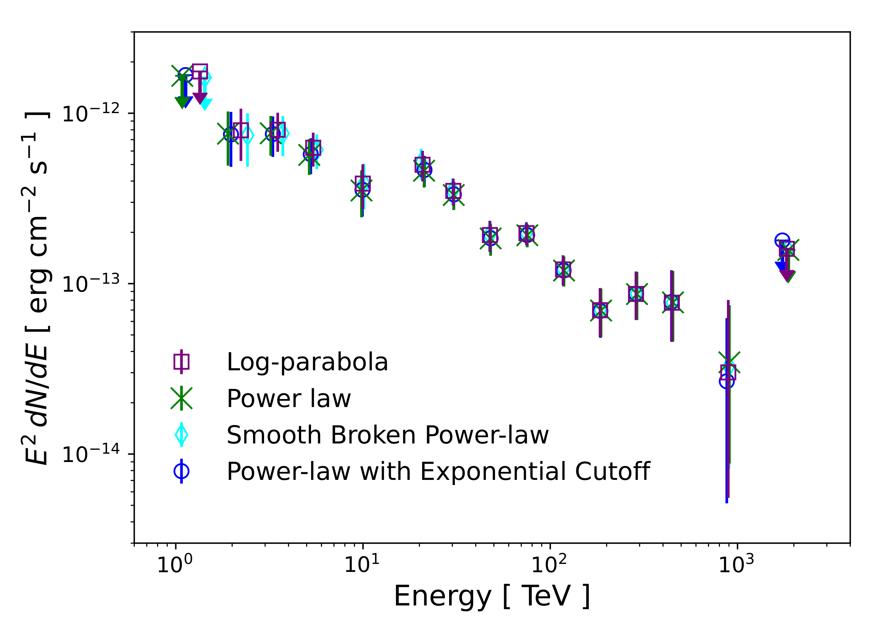
图注：Comparison of spectral fits to the joint (WCDA + KM2A) data. The four models --- power law (green), log–parabola (purplr), power law with cutoff (blue) and smooth broken power law (cyan) --- are shown with their respective $1\,\sigma$ uncertainties. The LP provides the lowest AIC value, indicating mild but statistically significant curvature, while the PLEC gives a comparable fit without strong evidence for a cutoff.
对应解读：对应“建议重点查看的图表”第3项和第7项，以及“关键图表逐图导读”图3；支撑谱拟合段落中 log-parabola、幂律、截断幂律和平滑断裂幂律的模型比较。
入选理由：该图直接比较 WCDA+KM2A 联合谱的四种谱模型，并显示 1σ 不确定性和 AIC 优劣，是判断是否存在平滑弯曲、是否缺乏尖锐截止证据的核心图。相比单独 SED 图，它更能支撑日报中关于 log-parabola 优于简单幂律、PLEC 未给出强截断证据的解读。
来源与置信度：\(arxiv_source\)；high；\(arxiv_source\) / \(Science_Bulletin.tex\):figure[9]
Fig04
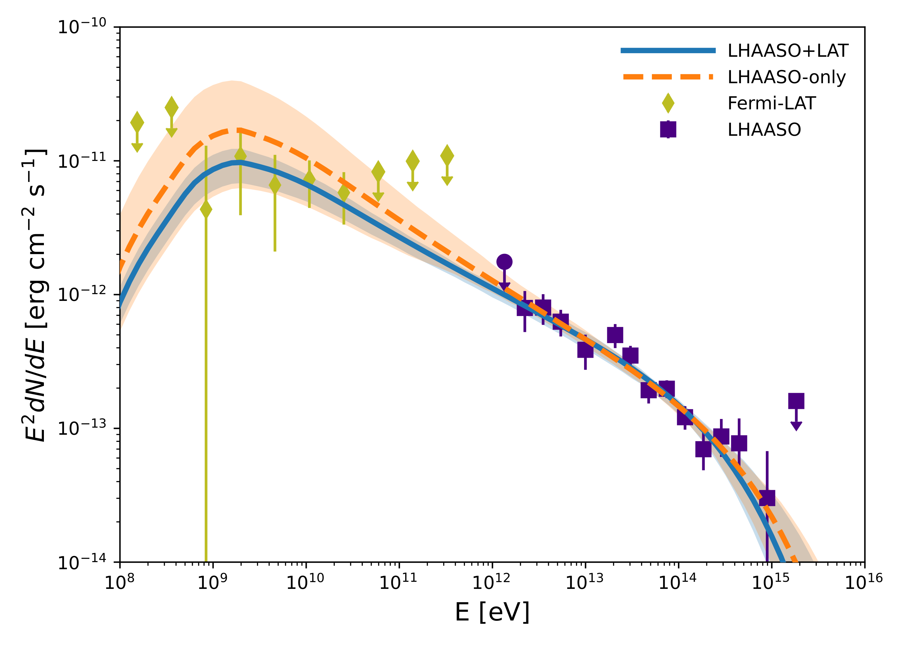
图注：Spectral energy distributions of \(\grs\) under hadronic ($pp$) scenarios. The dashed curves show the results obtained using LHAASO data only.
对应解读：对应“建议重点查看的图表”第5项，以及“关键图表逐图导读”图4；支撑物理辐射模型拟合中强子 pp 场景、质子最大能量和能量预算的讨论。
入选理由：该图展示 GRS 1915+105 在强子 pp 场景下的谱能量分布模型，并区分仅用 LHAASO 数据得到的结果，最适合说明母体质子达到 PeV 以上、喷流机械功率向质子转化的物理解释。它比普通显著性图更直接连接到论文的 PeV 加速器结论。
来源与置信度：\(arxiv_source\)；high；\(arxiv_source\) / \(Science_Bulletin.tex\):figure[4]
Fig07
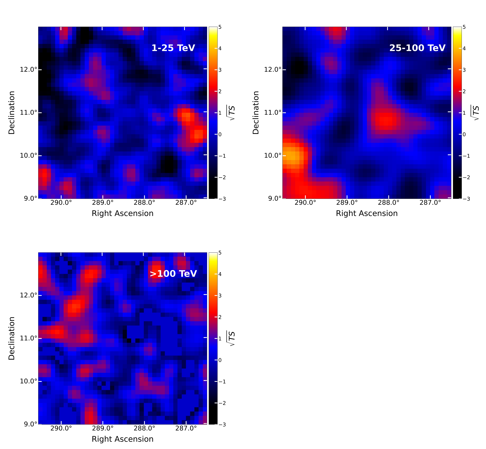
图注：LHAASO residual significance maps of the $2^{\circ}\times2^{\circ}$ region around \(\grs\) for the full observation period. Panels correspond to different analysis bands (left to right).
对应解读：对应“建议重点查看的图表”第4项，以及“关键图表逐图导读”图2；支撑空间模型拟合和背景/残差系统误差讨论。
入选理由：该图是 LHAASO 残差显著性图，能检验源模型减除后是否仍存在结构化残差，直接关系到扩展源模型是否真实改善拟合，以及银河弥散背景或邻近源是否可能造成假信号。它是评估空间结论稳健性的关键诊断图。
来源与置信度：\(arxiv_source\)；high；\(arxiv_source\) / \(Science_Bulletin.tex\):figure[7]
Fig03
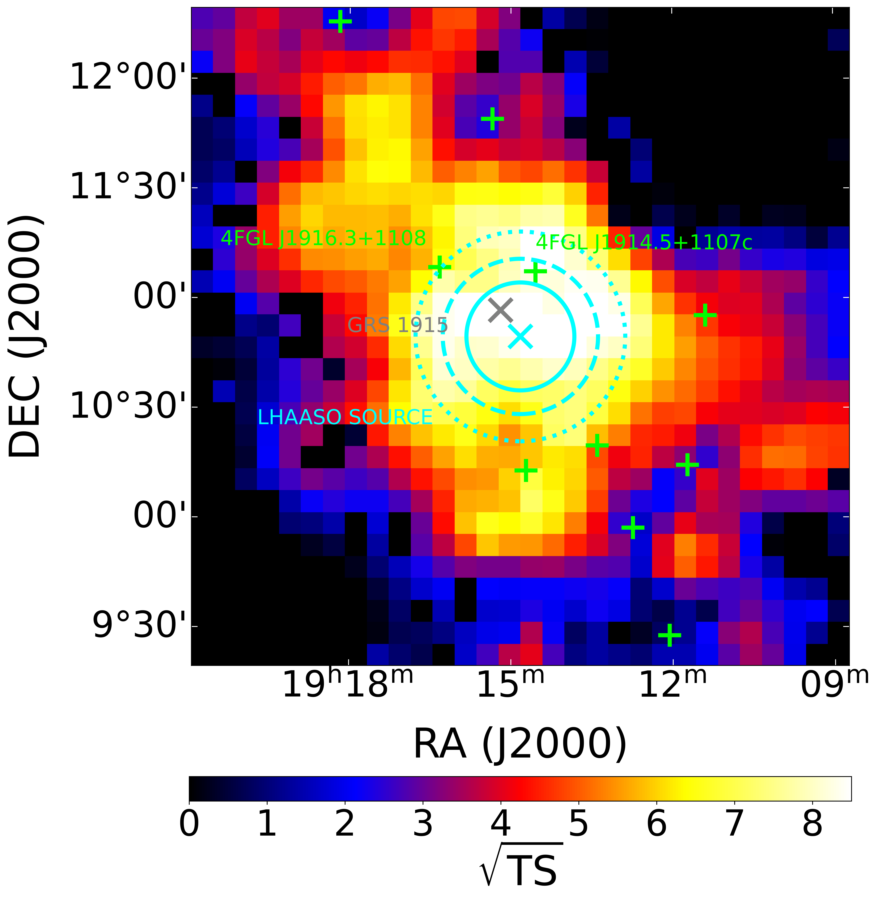
图注：1--500~GeV significance map for the region around \(\grslhaaso.\) All catalog sources were considered and removed. The green pluses mark the positions of the catalog sources, the gray cross marks the position of \(\grs.\) The cyan cross marks the center position of \(\grslhaaso,\) and the cyan solid, dashed and dotted circles represent the extension obtained at 100~TeV, 5~TeV, and from the \fermi\ analysis.
对应解读：对应“建议重点查看的图表”第2项和第3项，以及“关键图表逐图导读”中关于 GeV 到 TeV 连续性的讨论。
入选理由：该图给出 1–500 GeV Fermi-LAT 显著性图，并标出已移除的目录源、GRS 1915+105 位置、LHAASO 源中心以及不同能段得到的扩展圆。它对判断 GeV 辐射是否与 LHAASO 源空间相关、是否受邻近目录源混淆、低能和高能质心是否一致非常重要。
来源与置信度：\(arxiv_source\)；high；\(arxiv_source\) / \(Science_Bulletin.tex\):figure[3]
Fig10
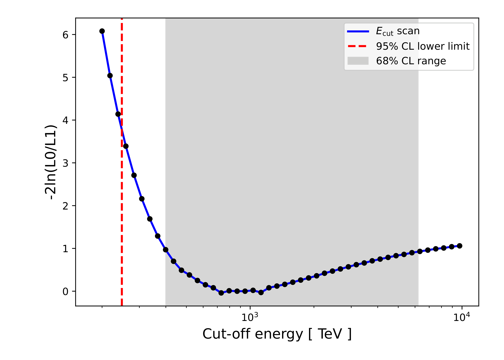
图注：The likelihood profile of the cut-off energy. The dashed red line is the lower limit at 95\% confidence level. The gray shaded region represents the 68.3\% confidence interval.
对应解读：对应“建议重点查看的图表”第3项和第7项，以及谱拟合段落中“没有强证据表明存在尖锐截止、截断能量只给出下限”的讨论。
入选理由：该图给出截止能量的似然轮廓、95% 置信下限和 68.3% 置信区间，是判断最高能端是否真正出现截止的直接统计证据。它补充 Fig09 的模型比较，能更清楚支撑论文关于母体粒子可达多 PeV、未观测到明显尖锐截止的结论。
来源与置信度：\(arxiv_source\)；high；\(arxiv_source\) / \(Science_Bulletin.tex\):figure[10]
强相关工作
同一源背景方面，GRS 1915+105 有大量 X 射线和射电喷流文献，属于微类星体研究的历史原型之一。读者应检索关键词“GRS 1915+105 superluminal jets”、“GRS 1915+105 microquasar X-ray states”、“GRS 1915+105 gamma-ray LHAASO”。这些工作能帮助判断喷流机械功率、活动史和环境结构是否支持本文所需的质子能量预算。
同类源方面，SS 433/W50 是另一个已被高能和甚高能 \(\gamma\) 射线观测强烈讨论的微类星体—喷流—星际介质相互作用系统。与 SS 433 相比，GRS 1915+105 的优势是黑洞喷流原型地位和可能更极端的最大能量；难点是环境和背景混淆。检索关键词包括“SS 433 HAWC TeV gamma rays”、“microquasar PeVatron”、“hadronic gamma rays microquasar”。
基础理论方面，应把本文放在银河 PeVatron 候选源的大背景下阅读，包括银河中心、年轻超新星遗迹、脉冲星风云和恒星形成区的 LHAASO/HAWC/H.E.S.S. 结果。相反观点通常不是否认有 \(\gamma\) 射线，而是质疑其强子起源、质心偏移显著性、气体关联可靠性或最大能量下限。检索关键词包括“Galactic PeVatron review”、“LHAASO PeV gamma-ray sources”、“cosmic-ray knee sources”。
同一事件 / 同类源线索：
- https://arxiv.org/abs/2606.25054
- https://arxiv.org/pdf/2606.25054
- https://simbad.cds.unistra.fr/simbad/sim-id?Ident=GRS%201915%2B105
相似工作：
- https://www.nature.com/articles/s41586-018-0565-5
- https://www.nature.com/articles/s41550-021-01318-y
基础理论 / 方法工作：
- https://ui.adsabs.harvard.edu/abs/1984ARA%26A..22..425H/abstract
- https://ui.adsabs.harvard.edu/abs/1994Natur.371...46M/abstract
相反观点 / 张力线索：
（未提供）
4. Broadband multiwavelength properties of the archetypal blazar 3C 279 during the 2017 Event Horizon Telescope campaign
- 来源：arXiv / astro-ph.HE
- 链接：https://arxiv.org/abs/2606.25868v1
- 作者：G. Principe, J. C. Algaba, E. Aviano, W. Y. Cheong, K. Hada, D. Haggard, A. Hahn, S. G. Jorstad
- 评分：novelty 8/10，importance 8/10，relevance 9/10，final 9.35/10
- 推荐理由：Major quasi-simultaneous EHT-era multiwavelength campaign on 3C 279, including gamma-ray/VHE context and jet-emission modeling; directly relevant to blazar high-energy emission studies.
中文题目：2017 年事件视界望远镜观测期间典型耀变体 3C 279 的宽波段多波长性质
做了什么：这篇论文重新整理并分析了 2017 年 4 月事件视界望远镜观测 3C 279 时的准同步多波段数据，从毫米波甚长基线干涉、厘米到毫米射电监测、光学—紫外偏振、X 射线、GeV 伽马射线到甚高能伽马射线上限，构建了一个新的宽波段谱能量分布和多波段光变图。核心结论是：EHT 看到最内核区在 4 月 5 日到 11 日之间增亮；较长波长射电核心和偏振在 4 月中旬也增强，并与一个超光速结的抛射相联系；而光学—紫外强偏振耀发发生在 3 月下旬，GeV 活动在 EHT 主观测期前已经回落，X 射线处于低态，甚高能未探测到。作者用湍动极端多区模型解释这些现象，认为湍动等离子体单元被驻立锥形激波压缩可以同时给出宽波段谱和变率，但磁重联或运动激波方案仍不能排除。
为什么重要：3C 279 是研究相对论性喷流、伽马射线耀发和偏振快速变化的标准源之一，而 2017 年是 EHT 对其进行微角秒尺度成像的关键时段。单看 EHT 图像只能告诉我们最内喷流在毫米波上的结构和亮度变化；这篇文章把同一时期的电磁波全谱信息接上，回答毫米波核心增亮、光学偏振耀发、GeV 伽马活动和超光速结是否来自同一喷流区域、是否同相演化、以及哪些辐射机制更合理。
理论 / 观测 / 仪器方法价值：对理论而言，它给出一个可被多波段数据约束的喷流耗散图像：驻立激波加湍动多区可以解释很多观测，但并非唯一方案。对观测而言，它提供了 2017 年 EHT 3C 279 期间最完整的准同步光变、偏振和谱能量分布资料，可作为以后建模、时延分析和喷流结构研究的基准数据集。对方法而言，它展示了如何把微角秒尺度 VLBI 结构、较低频射电核心、偏振行为和高能光变放在同一个证据链中，而不是把每个波段孤立解释。
为什么应该关注：如果你关心活动星系核喷流的能量耗散位置、伽马射线产生区、偏振角旋转、EHT 图像与多波段光变的物理连接，这篇文章值得读。它的重要性不在于宣称找到唯一模型，而在于把 3C 279 在一个极高价值时间窗口内的观测事实梳理清楚：哪些现象同步，哪些不同步，哪些模型能过关，哪些结论仍受采样、时延和几何退化限制。
展开详细解读：文章讲解、背景、理论、重点章节、图表与相关工作
文章详细讲解
科学问题：3C 279 是最典型的平谱射电类星体型耀变体之一，喷流几乎指向视线方向，因此相对论性多普勒增强会把内区耗散、激波、湍动和磁场结构的变化放大成强烈的多波段变率。2017 年 4 月，EHT 在毫米波甚长基线基线尺度上观测了 3C 279，达到可以分辨最内喷流结构的角分辨率。问题是：EHT 看到的最内核区增亮，是否与低频射电核心、超光速结、光学—紫外偏振耀发、GeV 伽马射线活动和 X 射线状态属于同一次物理事件？如果是，辐射区在哪里、主要耗散机制是什么？如果不是，多波段之间的相位差又说明了什么？
作者怎么做：论文汇集了 2017 年 EHT 观测窗口前后大量准同步观测，包括 EHT 观测的毫米波核心信息、较长波长 VLBI 或单盘射电监测、光学—紫外测光与偏振、X 射线监测、Fermi-LAT GeV 伽马射线光变，以及甚高能伽马射线观测的非探测结果。作者不仅画出各波段光变曲线，还构建了准同步宽波段谱能量分布，并对射电核心通量、偏振度、偏振角、光学—紫外耀发、GeV 衰减和超光速结抛射时间进行相互比对。建模方面，作者采用 TEMZ，即湍动极端多区模型，把喷流看作许多具有不同磁场方向和粒子状态的小等离子体单元穿过驻立锥形激波，从而自然产生随机偏振变化和宽波段辐射。
关键结果：EHT 数据显示，3C 279 的最内核区在 2017 年 4 月 5 日到 11 日之间出现明显通量增加。更长波长的射电核心在 4 月中旬附近也有增强，并且偏振性质发生变化；这一时段与一个超光速结的抛射相联系。光学—紫外波段的记录级耀发和强偏振变化主要发生在 3 月下旬，早于 EHT 主观测期；GeV 伽马射线活动随后减弱，在 EHT 观测期末前已经回落；X 射线保持低态，甚高能伽马射线未被显著探测到。这种时序并不支持“所有波段同时由一个紧凑同质区爆发”的简单解释，而更像是喷流中不同位置、不同辐射过程或同一扰动沿喷流传播时依次点亮不同辐射区。
局限和下一步：TEMZ 模型能合理复现宽波段谱和变率的大体行为，但它有很强的几何和微物理自由度，例如多普勒因子、磁场强度、电子能谱、湍动单元数量、外部光子场和激波位置之间存在退化。论文也明确指出，磁重联和运动激波进入喷流的情形仍然可行。下一步需要更密集的毫米波偏振 VLBI、高时间分辨率光学偏振、与 Fermi-LAT 和切伦科夫望远镜阵列的同步覆盖，以及能把图像域结构直接纳入谱能量分布拟合的时变模型。真正有判别力的不是单个谱能量分布是否拟合得好，而是模型能否同时预测图像结构、时间延迟、偏振角演化和高能谱形。
关键结果是怎么做出来的
这篇文章的证据链首先建立在“准同步”样本选择上。作者围绕 2017 年 4 月 EHT 观测窗口收集多波段资料，而不是只使用严格同一天的数据；这是必要的，因为不同望远镜的采样频率、天气窗口和可见性条件不同。读者应注意论文如何定义 EHT 观测期、光学—紫外耀发期、射电核心增强期和 GeV 伽马活动衰减期：这些时间窗口的边界会直接影响“是否相关”的判断。关键不是某一天是否完全同相，而是各波段峰值、偏振变化和结构事件之间是否有物理上合理的先后顺序。
最重要的观测结果之一是 EHT 最内核区在 4 月 5 日到 11 日之间增亮。这里要看图像模型或成像结果给出的核区通量，而不是把单盘毫米波总流量等同于最内核心通量。EHT 在微角秒尺度上解析的是靠近喷流基底的紧凑结构；较长波长射电观测看到的是光深更高、尺度更大的核心或喷流下游区域。若低频射电核心在 4 月中旬也增强，并且同一时期偏振变化明显，那么更合理的解释是扰动沿喷流传播，或不同频率的 \(\tau_\nu \simeq 1\) 面依次响应。
第二个关键事实是光学—紫外耀发与高能行为的相对时序。光学—紫外记录级耀发和强偏振变化出现在 3 月下旬，而 GeV 伽马射线活动在 EHT 观测期前后下降，X 射线则保持低态，甚高能伽马射线没有显著探测。这说明高能辐射区的电子分布、外部光子场和吸收条件不能简单由射电核区增亮直接推出。若一个同质单区模型同时要求强光学同步辐射、强 GeV 逆康普顿和低 X 射线通量，参数空间会受到明显限制，特别是低能电子数、磁场强度和外部辐射能量密度之间的平衡。
模型比较方面，论文采用 TEMZ 做现象学建模，而不是声称通过严格贝叶斯证据排除了其他模型。TEMZ 的优势是可以自然产生偏振度和偏振角的随机但有组织变化，因为观测偏振是多个湍动单元的矢量叠加；当这些单元通过驻立锥形激波时，电子加速和磁场压缩提高同步辐射和逆康普顿辐射。读者应把模型结果理解为“存在一组物理合理参数可以解释数据”，而不是“唯一确定喷流就是驻立锥形激波”。
稳健性主要来自多波段一致性而非单一统计显著性数字。EHT 核区增亮、长波射电核心与偏振增强、超光速结抛射、光学偏振耀发、GeV 衰减和 X 射线低态共同限制了模型。系统误差包括非严格同步带来的谱能量分布误差、不同仪器交叉定标、射电图像模型分解的不唯一性、Fermi-LAT 在短时间窗内的低计数统计、以及偏振角的 \(n\pi\) 模糊。读者看论文图表时应关注误差条、上限、时间窗宽度和不同波段峰值的相对顺序，而不是只看模型线是否穿过数据点。
展开背景、理论、公式、模型、章节和图表导读
背景知识
3C 279 是红移约 \(z\simeq0.536\) 的明亮平谱射电类星体，也是耀变体研究中的原型源之一。它具有强烈的射电、光学、X 射线和伽马射线变率，喷流具有超光速运动和高偏振。由于喷流视角很小，辐射被多普勒增强，短时标变化可以对应非常紧凑的辐射区；但同样因为投影效应强，空间位置、时间延迟和真实速度很难从单一波段直接判断。
历史上，3C 279 是 EGRET 和后来的 Fermi-LAT 时代最重要的伽马射线耀变体之一。它在 GeV 波段的强耀发、光学偏振角旋转以及 VLBI 结抛射之间曾多次被讨论为喷流耗散的线索。一个长期问题是伽马射线产生区到底在宽线区内、宽线区外、尘埃环附近，还是更下游的射电核心附近。不同位置对应不同外部光子场、不同 \(\gamma\gamma\) 吸收、不同冷却时标和不同与 VLBI 结构的关联。
2017 年 EHT 观测特别重要，因为它把 3C 279 的最内喷流结构推到前所未有的角分辨率。EHT 对 M87 的黑洞阴影成像最广为人知，但对明亮喷流源的毫米波成像同样能约束喷流发射区、核心形态和磁流体结构。对 3C 279 而言，EHT 图像提供的是喷流基底附近的结构信息；若能与同一时段的全波段光变和偏振配对，就可能把“图像中的亮斑”与“光变中的耀发”联系起来。
现在值得重新看这个问题，是因为单区谱能量分布模型已越来越难解释耀变体的所有观测事实。快速偏振变化、不同波段不同步、超光速结与高能耀发的非一一对应、以及甚高能探测或非探测，都指向多区、时变和几何效应的重要性。EHT 级别图像又把空间结构纳入了讨论，使得仅靠时间平均谱拟合的解释显得不够。
该领域常见误区有几个。第一，把准同步谱能量分布当成真正同时的瞬时谱，从而过度解释模型参数。第二，把射电核心当成固定物理位置；实际上不同频率的核心常对应不同光深面的 \(\tau_\nu\simeq1\)。第三，把偏振角旋转必然解释为有序螺旋磁场；湍动多区的随机游走也可能产生类似现象。第四，把某个模型能拟合谱能量分布误读为排除了其他耗散机制；对 3C 279 这样的复杂源，时序、偏振和图像结构同样关键。
基础理论 / 方法脉络
耀变体喷流的基本物理图像是：黑洞—吸积盘系统发射相对论性等离子体流，喷流以洛伦兹因子 \(\Gamma\) 接近视线方向运动，因此观测到的频率、时间尺度和通量都被多普勒因子 \(\delta\) 改变。电子在磁场中产生同步辐射，从射电延伸到光学—紫外甚至 X 射线；同一批或相关电子还可以通过逆康普顿散射产生 X 射线和 GeV 伽马射线。若种子光子来自喷流自身，就是同步自康普顿；若来自宽线区、尘埃环或吸积盘，就是外康普顿。
偏振是本文特别重要的诊断量。同步辐射天然具有线偏振，偏振度和偏振角反映磁场在辐射区内的有序程度和投影方向。在完全均匀磁场中，偏振度可以很高；但如果辐射来自很多湍动单元，每个单元磁场方向不同，总偏振会因矢量相消而降低，同时偏振角可能随机游走或在某些几何条件下呈现看似有序的旋转。因此，光学—紫外强偏振变化和射电偏振增强可用来区分单区有序磁场、湍动多区、激波压缩和磁重联等图像。
EHT 和较低频 VLBI 的观测逻辑也不同。EHT 在 \(230\,\mathrm{GHz}\) 附近提供极高角分辨率，看到的是非常紧凑的毫米波结构；厘米—毫米 VLBI 看到更下游、光深更高或更大尺度的核心和结。由于同步自吸收，低频射电峰值通常滞后于高频或光学—伽马活动。超光速结的抛射时间来自多历元 VLBI 位置外推，其误差取决于采样、模型分量识别和速度是否恒定。
本文使用的 TEMZ 模型把喷流耗散区分解为许多湍动等离子体单元，并让它们穿过一个驻立锥形激波。激波压缩增强磁场垂直分量并加速粒子，单元间随机差异产生宽波段快速变率和偏振随机性。这个模型的关键量包括磁场强度 \(B\)、电子能谱归一化和斜率、多普勒因子 \(\delta\)、湍动单元数量 \(N\)、外部光子场能量密度以及辐射区大小 \(R\)。
主要退化来自几何、辐射和统计三方面。几何上，\(\Gamma\)、视角 \(\theta\) 和 \(\delta\) 之间强退化；辐射上，增加 \(B\) 可提高同步峰但也改变逆康普顿相对强度，增加外部光子场也可增强 GeV 辐射；统计上，非同时数据会把时间变率误写成谱形。系统误差还包括 Fermi-LAT 短时间窗计数不足、甚高能上限受大气和能阈影响、光学偏振定标误差，以及 VLBI 图像分量分解的不唯一性。
公式与推导
第一步是相对论性喷流的多普勒变换。若喷流体元以速度 \(\beta c\) 和洛伦兹因子 \(\Gamma=(1-\beta^2)^{-1/2}\) 与视线夹角 \(\theta\) 运动，则多普勒因子为
这里 \(\delta\) 控制观测频率、时间和通量的增强，是把 EHT 核区变率和内禀辐射区尺度联系起来的关键量。
第二步是变率尺度约束。若观测到通量在时间 \(t_{\rm var}\) 内显著变化，辐射区共动尺度满足
其中 \(R'\) 是喷流共动系尺度，\(z\) 是红移。这个关系说明快速光学—紫外或毫米波变化通常要求紧凑区域，除非 \(\delta\) 很大。
第三步是同步辐射特征频率。洛伦兹因子为 \(\gamma\) 的电子在共动磁场 \(B'\) 中辐射的观测特征频率近似为
这个式子把光学—紫外同步耀发与电子能量和磁场强度相连；如果 \(\nu_{\rm syn}\) 很高，需要较大 \(\gamma\)、较大 \(B'\) 或较大 \(\delta\)。
第四步是电子能谱到谱斜率的连接。若非热电子分布为
在光薄同步辐射区通常得到
这里 \(K\) 是电子数归一化，\(p\) 是能谱指数，\(\alpha\) 是观测谱指数；谱能量分布的斜率可反推粒子加速和冷却状态。
第五步是同步与逆康普顿功率比。对同一批电子，在汤姆孙近似下逆康普顿与同步辐射的光度比约为
其中 \(U'_{\rm rad}\) 是共动系种子光子能量密度，\(U'_B\) 是磁能量密度。该式解释为什么 X 射线低态、GeV 活动和光学耀发的组合会限制 \(B'\) 与外部光子场。
第六步是同步偏振的上限。均匀磁场中幂律电子的最大线偏振度为
若观测偏振度远低于 \(\Pi_{\max}\)，通常意味着磁场无序、多个单元叠加、法拉第效应或不同辐射区混合。
第七步是多湍动单元的偏振矢量叠加。用斯托克斯参量表示，总偏振满足
这里 \(I_i\)、\(\Pi_i\)、\(\chi_i\) 分别是第 \(i\) 个湍动单元的强度、偏振度和偏振角；这正是 TEMZ 类模型解释偏振随机变化的基本数学结构。
第八步是观测谱能量分布拟合的统计量。若第 \(j\) 个频点的观测通量为 \(F_j\)、误差为 \(\sigma_j\)，模型为 \(M_j(\boldsymbol{\Theta})\)，常用高斯近似下的残差统计量为
其中 \(\boldsymbol{\Theta}\) 包含 \(B'\)、\(K\)、\(p\)、\(\delta\)、区域大小和外部光子场等参数。对非同时数据，\(\sigma_j\) 应包含测量误差和源变率引入的额外散布。
第九步是光子计数波段的似然。对 Fermi-LAT 或甚高能伽马射线数据，能量—空间分箱中的泊松似然可写为
其中 \(n_k\) 是第 \(k\) 个 bin 的观测计数，\(\mu_k\) 是源模型、背景模型和仪器响应卷积后的预期计数。探测显著性常用
比较含源模型 \(\mathcal{L}_1\) 与无源或低态模型 \(\mathcal{L}_0\)。这说明 GeV 活动或甚高能非探测的结论依赖计数统计、背景和时间窗选择。
模型拟合 / 应用方法
本文的拟合不是简单的静态单区谱能量分布拟合，而是把多波段光变、偏振和准同步谱能量分布作为共同约束。TEMZ 模型中的核心拟合量包括喷流多普勒因子、磁场强度、电子注入或加速谱、湍动单元数量、激波几何、外部光子场以及辐射区尺度。模型需要同时给出射电到光学同步辐射、X 射线到 GeV 逆康普顿辐射、偏振度和偏振角变化的大体行为。
参数估计上，这类模型通常无法像少参数模型那样给出唯一后验峰。原因是自由度高、数据非完全同步、许多参数之间存在强退化。例如较大的 \(\delta\) 可以降低所需内禀光度并压缩时标；较大的 \(B'\) 增强同步辐射但可能降低逆康普顿相对占比；较高的外部光子能量密度可增强 GeV 辐射但也可能带来吸收或冷却问题。因此，读者应把论文中的模型曲线看作物理可行性展示，而不是精确反演。
残差诊断应分波段看。若模型能拟合光学—紫外峰但过预测 X 射线，说明低能电子或同步自康普顿分量可能过强；若能拟合 GeV 但低估射电，可能是射电来自更大尺度、光深更高区域，不能与高能区共址；若偏振度拟合尚可但偏振角相位不对，则说明磁场几何或湍动随机种子不唯一。对 3C 279 这样的源，模型最容易“看起来拟合很好”的地方是宽波段谱，最难同时通过的是时序和偏振。
系统误差需要单独处理。EHT 核区通量依赖成像和模型拟合策略，较低频 VLBI 的核心—结分解有识别歧义；光学—紫外数据受宿主星系、银河消光和交叉定标影响较小但仍需统一；X 射线谱形会影响通量换算；Fermi-LAT 短时间窗内统计误差较大；甚高能上限受能阈、大气透明度和外推谱假设影响。准同步谱能量分布中，不同时刻的真实源变率可能比仪器误差更重要。
实际应用上，这篇文章的数据集可用作后续模型比较的基准。研究者可以用运动激波、磁重联层、分层喷流、脊—鞘结构或多区外康普顿模型重新拟合同一时期数据。真正有区分度的测试包括：模型是否预测光学—GeV 的时延、毫米波核心增亮的滞后、偏振角旋转的概率分布、超光速结外推抛射时间，以及甚高能非探测是否自然出现。
重点章节 / 结果段落怎么读
数据与观测部分应优先读。这里决定了全文证据的可靠性：哪些望远镜参与、时间覆盖多密、哪些数据真正落在 EHT 观测窗口内、哪些只是前后补充。读者应特别注意 EHT 日期、光学—紫外高态日期、GeV 活动日期和长波射电增强日期的相对关系。
多波段光变和偏振分析是第二个重点。这里不要只看峰值，而要看各波段峰值的先后、偏振度和偏振角是否与通量同步、射电核心增强是否有频率依赖。若论文给出不同波段的时间序列图，应把它当成判断同一扰动传播的主要证据。
EHT 与射电结构结果是连接图像和辐射模型的关键。读者要区分 EHT 最内核区、较低频 VLBI 核心和下游超光速结。若论文讨论 4 月 5 日到 11 日的核区增亮以及 4 月中旬的较长波长核心与偏振增强，应检查这些结论来自图像重建、模型分量拟合还是总流量监测。
谱能量分布构建与 TEMZ 建模部分需要带着退化意识阅读。准同步谱能量分布不是单一瞬时状态，尤其在 3C 279 这种强变源中，模型线穿过数据点不等于模型唯一。重点看模型如何处理低 X 射线态、GeV 衰减和甚高能上限，以及是否解释偏振变化。
讨论和结论部分应关注作者如何评价替代模型。若作者承认磁重联或运动激波仍可行，这不是结论变弱，而是对数据约束能力的合理表述。对专业读者来说，最有价值的是论文明确了哪些观测事实必须被任何后续模型解释。
建议重点查看的图表
-
多波段光变总览图：检查从射电、光学—紫外、X 射线到 GeV 的时间轴是否统一，EHT 观测窗口是否标出，各波段峰值是否同相。
-
EHT 或毫米波核心通量随时间变化图：重点看 4 月 5 日到 11 日的核区增亮幅度、误差条和是否受成像模型选择影响。
-
射电 VLBI 核心与超光速结运动图：检查核心通量、偏振和结位置外推，尤其是抛射时间的不确定区间是否覆盖 4 月中旬。
-
光学—紫外通量和偏振图：看 3 月下旬记录级耀发期间偏振度和偏振角是否同步变化，偏振角是否存在 \(n\pi\) 展开选择。
-
GeV 伽马射线光变与谱图：看 Fermi-LAT 时间 bin 的探测显著性、上限处理、GeV 活动何时衰减，以及是否与光学峰存在滞后。
-
宽波段谱能量分布图：检查数据点是否真的准同步，不同颜色或符号代表哪些时间段，TEMZ 模型是否同时满足 X 射线低态和甚高能上限。
-
模型残差或参数敏感性诊断：若论文给出，应重点看哪些波段偏离最大，因为这些偏离通常比最佳拟合曲线更能暴露模型问题。
关键图表逐图导读
图 1：通常应是观测时间线或多波段光变总览。横轴是日期或儒略日，纵轴分面显示不同波段通量、偏振度或偏振角。读图时先定位 EHT 观测窗口，再看光学—紫外耀发、GeV 活动和射电增强是否落在同一时间。陷阱是不同分面的纵轴尺度可能不同，视觉上的“同步”未必代表统计相关。
图 2：EHT 或毫米波 VLBI 图像与核心通量变化图。坐标轴可能是相对天球位置，颜色或等值线表示亮度，另有随时间的核区通量点。主要结论是最内核区在 4 月 5 日到 11 日增亮。读图陷阱是 EHT 图像重建受稀疏 \(u\)-\(v\) 覆盖和正则化影响，图像结构不应过度解释到单个小斑点的物理身份。
图 3：较长波长射电核心、偏振和超光速结运动图。横轴可能是时间或距核心角距离，纵轴是核心通量、偏振度、偏振角或结位置。模型线通常是结运动的线性外推，用来估计抛射时间。关键要看抛射时间误差区间是否与射电偏振增强和 EHT 增亮相容；陷阱是不同频率核心位置不同，不能把所有“核心”当成同一个物理点。
图 4：光学—紫外通量与偏振行为图。横轴是日期，纵轴包括光学通量、偏振度和偏振角。主要结论是 3 月下旬出现强耀发和强偏振变化，早于 EHT 主窗口。读图时要看偏振角是否经过连续展开，若存在 \(180^\circ\) 模糊，不同展开会影响“旋转”解释。
图 5：高能光变和甚高能上限图。GeV 面板通常显示 Fermi-LAT 通量或测试统计量，甚高能面板给出探测点或上限。主要结论是 GeV 活动在 EHT 期间前后减弱，X 射线低态且甚高能未探测。陷阱是短时间 bin 的 GeV 误差和上限会很大，不能把非探测简单理解为源没有高能辐射。
图 6：宽波段谱能量分布与 TEMZ 模型图。横轴是频率或光子能量，纵轴常为 \(\nu F_\nu\)。数据点来自不同波段和近似同一时期，模型线分解出同步、同步自康普顿和外康普顿等成分。读图重点是模型是否同时压住 X 射线和甚高能上限、是否再现光学—GeV 相对强度；陷阱是非同时数据会让谱峰位置和峰值看起来比真实瞬时状态更平滑。
论文原图 / 可嵌入图片
Fig04
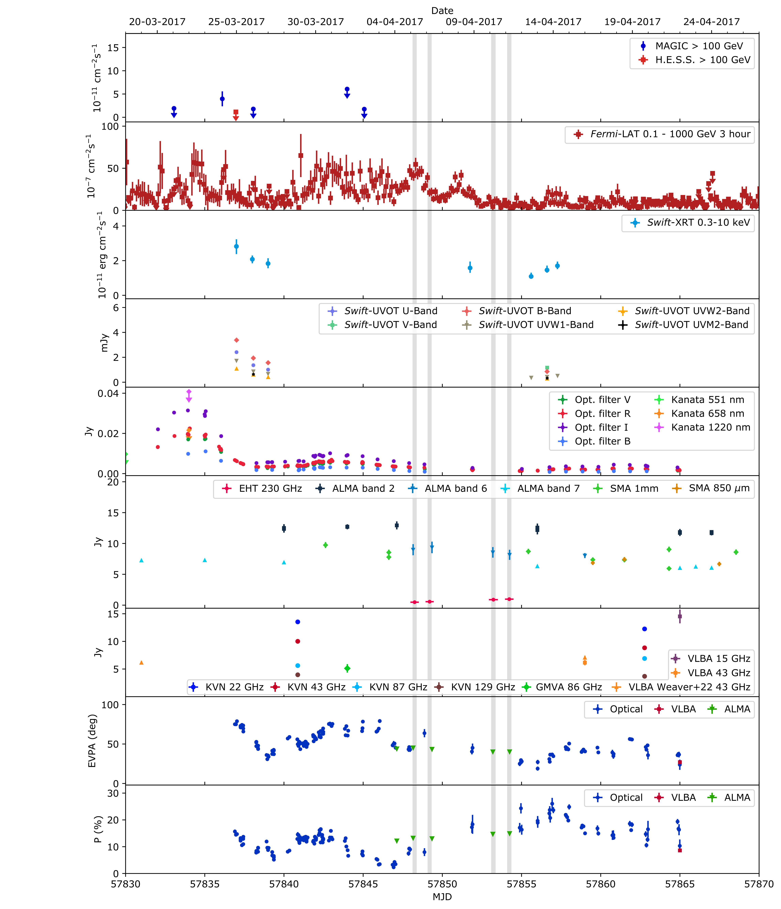
图注：MWL light curves of 3C\,279 during MJD 57830--57870 (March 18 -- April 27, 2017). The gray bands indicate the periods of EHT observations. The top seven panels display the source flux, and the bottom two panels show the electric vector position angle and polarization intensity, respectively.
对应解读：对应“多波段光变总览图”、图 1 式逐图导读，以及关于光学—紫外耀发、GeV 活动衰减、EHT 观测窗口和偏振变化的时序讨论。
入选理由：这是最能支撑日报核心叙事的图：同一时间轴上给出 2017 年 3 月下旬至 4 月下旬多波段通量、EVPA 和偏振强度，并标出 EHT 观测窗口，可直接检查光学—紫外峰、GeV 状态、射电/毫米行为与偏振变化是否同相。相比单一波段图，它最适合判断“是否为同一次物理事件”。
来源与置信度：\(arxiv_source\)；high；\(arxiv_source\) / aa59551-26.tex:figure[4]
Fig08
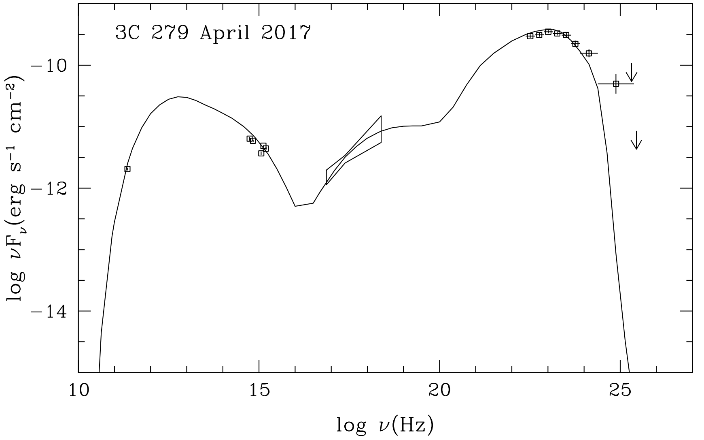
图注：Spectral energy distribution of 3C\,279 in April 2017 (empty squares). Under the assumption that the high-energy emission arises from the core region (C0-0 in the EHT images), only EHT, Swift-UVOT, X-ray, and $\gamma$-ray spectral points are shown. Lower-resolution radio and optical data are excluded as they sample larger emission regions. The solid curve shows a representative SED of component C0-0 from the TEMZ model, selected at the epoch when the simulation reproduced the observed multiwavelength data best (see Fig. \ref{fig:temz_mwlc}).
对应解读：对应“宽波段谱能量分布图”和“模型拟合”中关于 TEMZ 模型是否同时解释 EHT 核区、UV/X 射线和伽马射线数据的段落。
入选理由：该图直接把 April 2017 的核心区准同步 SED 与 TEMZ 代表性模型曲线放在一起，并明确采用高能辐射来自 EHT 核区 C0-0 的假设。它比仅展示数据点的 SED 更能检验模型是否能同时满足 X 射线低态和高能谱约束，是理解论文物理解释的关键图。
来源与置信度：\(arxiv_source\)；high；\(arxiv_source\) / aa59551-26.tex:figure[8]
Fig05
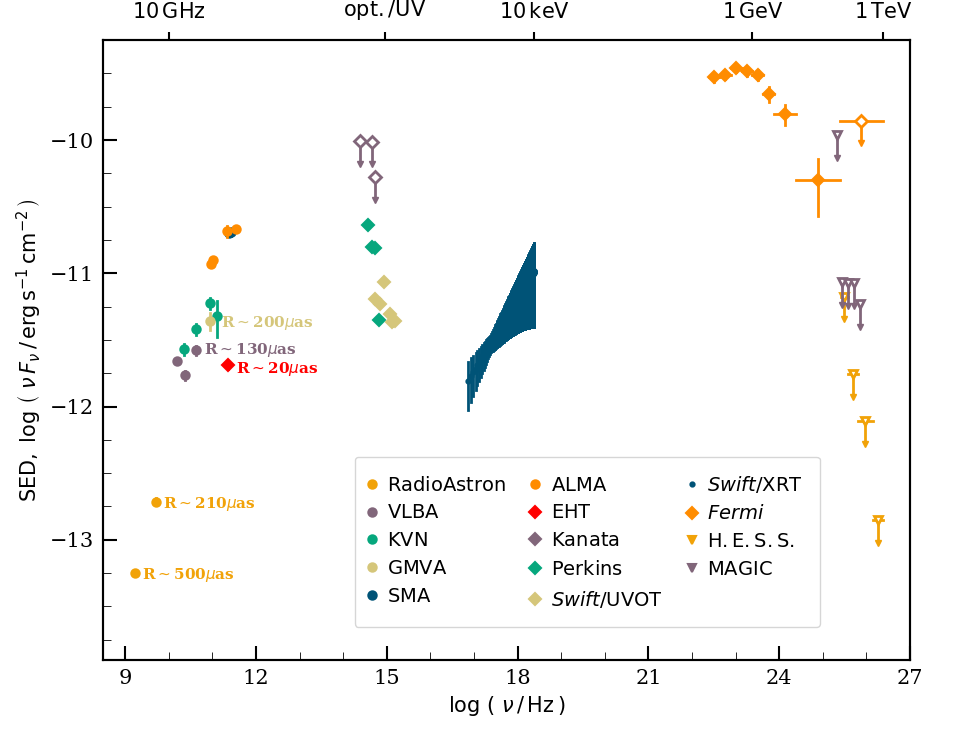
图注：MWL broadband SED of 3C\,279 around the EHT observational campaign (MJD 57836–57861; see Table \(\ref{tab:sed2017}\) in Appendix \ref{appendix:mwl_sed}). For RadioAstron, integrated fluxes from cumulative observations between 2016 and 2018 are shown. The Swift-XRT spectrum is shown as a bow tie. The fluxes are indicated with different colors and markers according to the instrument. For radio VLBI and interferometric data, upper limits on the emission size (radius) at selected frequencies are labeled.
对应解读：对应“宽波段谱能量分布图”以及关于准同步数据、不同仪器符号、RadioAstron/Swift-XRT 和射电 VLBI 尺度限制的解读。
入选理由：这是完整的 MWL broadband SED 数据汇总，覆盖射电到高能波段，并用不同颜色和符号区分仪器，还包含 Swift-XRT bow tie 和射电尺寸上限信息。它能帮助读者判断所谓“准同步谱”实际由哪些数据组成，以及非同时性和空间分辨率差异可能带来的系统误差。
来源与置信度：\(arxiv_source\)；high；\(arxiv_source\) / aa59551-26.tex:figure[5]
Fig03

图注：Sequence of VLBA total (contours) and polarized (color scale) intensity images of 3C\,279 at 43\,GHz (magenta image in Fig. \ref{fig:composite_radio}). The global intensity peak is 10.31\,Jy/beam; the contour levels start at 0.25\% of the peak and increase by factors of 2. All image parameters are listed in Table~\(\ref{tab:MapParm_7mm}.\) The images are convolved with the same beam of 0.36$\times$0.15 mas$^2$ at PA=$-$10$^\circ$(the ellipse in the bottom left corner); linear segments within the images indicate the direction of the electric vector position angle (direction of polarization). The blue rectangle in the first image shows the core region used to calculate the polarization parameters presented in Table~\(\ref{tab:JetPol_7mm}.\)
对应解读：对应“射电 VLBI 核心与偏振图”以及日报中关于较长波长射电核心、偏振增强和喷流结构演化的讨论。
入选理由：该图给出 43 GHz VLBA 总强度与偏振强度序列图，并标出核心区域和 EVPA 方向，是检查射电核心偏振结构、核心区定义和喷流形态变化的重要依据。虽然它不直接给出超光速结位置外推曲线，但在候选图中最接近日报强调的射电 VLBI 核心—偏振诊断。
来源与置信度：\(arxiv_source\)；high；\(arxiv_source\) / aa59551-26.tex:figure[3]
Fig12
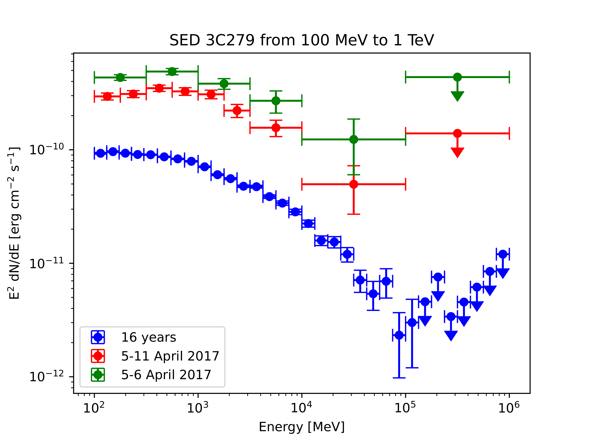
图注：\(\small\) 3C\,279 SED from \(\textit{Fermi}-LAT\) obtained using 16 years (2008 August 4–2024 August 4, blue points), the data of April 5-11, 2017 (red points), and April 5-6, 2017 (green points). A 1-$\sigma$ upper limit is reported for bins with $<3 \sigma$ significance.
对应解读：对应“GeV 伽马射线光变与谱图”和关于 Fermi-LAT 探测显著性、短时间窗谱点及上限处理的解读。
入选理由：该图比较 16 年平均 LAT 谱、2017 年 4 月 5–11 日以及 4 月 5–6 日的 GeV 谱，并标注低显著性 bin 的 1σ 上限。它直接支撑日报中关于 EHT 期间 GeV 活动状态、短时间 bin 统计误差和上限解释的提醒。
来源与置信度：\(arxiv_source\)；high；\(arxiv_source\) / aa59551-26.tex:figure[12]
Fig07
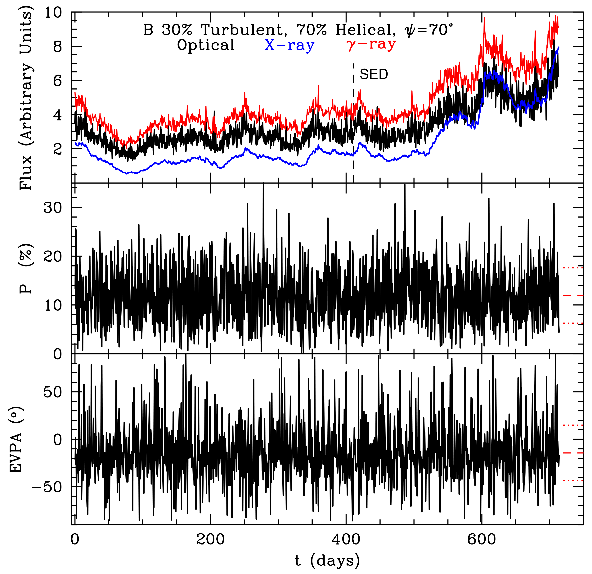
图注：Sample simulated MWL flux and optical polarization degree $P$ and EVPA vs.\ time calculated with the TEMZ model. EVPA = $0\degr$ in the simulation corresponds to the jet direction. The time step corresponding to the SED presented in Fig.\ \(\ref{fig:sed_3c279_2017TEMZ}\) is marked in the top panel. The means of $P$ and the EVPA are indicated with dashed lines on the right of the respective panels, while the standard deviations are marked with dotted lines.
对应解读：对应“模型拟合”中 TEMZ 对多波段光变、光学偏振度和 EVPA 行为的联合约束讨论。
入选理由：该图展示 TEMZ 模型模拟的多波段通量、光学偏振度和 EVPA 随时间变化，并标出用于 SED 的模拟时刻。它有助于说明论文并非只做静态 SED 拟合，而是尝试同时解释变率和偏振统计行为；不过它是模型示意性输出，约束力弱于真实观测光变和 SED 图。
来源与置信度：\(arxiv_source\)；high；\(arxiv_source\) / aa59551-26.tex:figure[7]
强相关工作
这篇工作直接关联同一源 3C 279 的 EHT 成像论文和长期多波段监测文献。EHT 早先对 3C 279 的超高分辨率成像揭示了喷流基底的复杂结构，而本文的新增价值是把 2017 年同一窗口的宽波段辐射、偏振和模型解释系统接上。检索关键词可用“3C 279 EHT 2017 multiwavelength”、“3C 279 Event Horizon Telescope jet”、“3C 279 polarization gamma-ray flare”。
在同类工作中，3C 279 常与 3C 273、PKS 1510-089、CTA 102、BL Lac 等明亮耀变体的多波段耀发研究比较。相似争论包括：伽马射线区是否靠近黑洞、是否位于射电核心附近、偏振角旋转是随机湍动还是有序磁场、以及单区轻子模型是否足够。检索关键词可用“blazar multi-zone modeling”、“TEMZ blazar polarization”、“shock in jet model blazar”、“magnetic reconnection blazar flare”。
从理论脉络看，本文与冲击喷流模型、湍动多区辐射模型、外康普顿模型和磁重联模型都有关系。它没有把这些模型做严格证据值排序，而是用 2017 年 3C 279 的观测事实给出约束清单。若要寻找相反或张力观点，应检索那些主张紧凑宽线区内 GeV 产生、下游射电核心产生、或磁重联主导快速耀发的 3C 279 个例研究。
同一事件 / 同类源线索：
相似工作：
基础理论 / 方法工作：
- https://ui.adsabs.harvard.edu/abs/1979ApJ...232...34B/abstract
- https://ui.adsabs.harvard.edu/abs/1985ApJ...298..114M/abstract
相反观点 / 张力线索：
（未提供）
5. Hybrid radio and particle detection of air showers: potential for ultra-high-energy photon identification
- 来源：arXiv / astro-ph.HE
- 链接：https://arxiv.org/abs/2606.25833v1
- 作者：Paul Minodier, Kaoru Takahashi, Kumiko Kotera, Takashi Sako
- 评分：novelty 7/10，importance 8/10，relevance 9/10，final 9.05/10
- 推荐理由：Hybrid radio/scintillator method for ultra-high-energy photon identification is highly relevant to UHE gamma-ray and cosmic-ray instrumentation, with competitive projected limits around 0.3--3 EeV.
中文题目：混合射电与粒子探测空气簇射：识别超高能光子的潜力
做了什么：这篇文章评估了一种混合探测思路：用自主射电天线阵列探测大天顶角空气簇射，同时用闪烁体记录地面粒子能量沉积，以区分超高能光子与普通强子宇宙线。作者以 GRANDProto300 类似布局、并假设配备 Telescope Array 风格闪烁体为案例，使用两个观测量——射电信号总均方根与闪烁体总能量沉积——展示光子簇射和强子簇射在倾斜入射条件下有可分离性。核心结论是，在约 \(0.3\) 到 \(3\,\mathrm{EeV}\) 能段，这类混合阵列有望给出有竞争力的积分光子流量上限。
为什么重要：超高能光子是宇宙线起源、传播和新物理模型的关键诊断量，但目前在 \(\mathrm{EeV}\) 能段仍以非探测和上限为主。传统地面阵列主要依靠粒子探测器或荧光望远镜，而未来超大射电阵列通常被设计为中微子或倾斜空气簇射探测器。本文的重要性在于指出：如果在射电阵列中加入相对简单的地面粒子计数信息，就可能把原本主要用于触发和能量重建的射电数据转化为有效的光子候选筛选工具。
理论 / 观测 / 仪器方法价值：对观测和仪器方法的价值在于，它把光子识别问题简化为两个互补观测量的分类：射电信号主要反映电磁级联的能量和几何，闪烁体沉积则强烈受强子簇射的缪子成分影响。对理论的价值在于，这种判别直接测试光子簇射的低缪子性质、强子相互作用模型对倾斜簇射尾部的预测，以及超高能光子在宇宙背景辐射场中传播后的可观测流量。对方法学的价值在于，它为 GRAND、BEACON、AugerPrime 无线电升级以及类似自主射电阵列提供了一个可量化的光子科学目标。
为什么应该关注：如果你关注超高能宇宙线起源、宇宙线成分、\(\gamma\)-射线与中微子多信使联系，或者下一代地面阵列的科学产出，这篇文章值得看。它不是宣称发现光子，而是在问一个实际问题：已有或计划中的倾斜簇射射电阵列，只需增加有限粒子探测能力，能否进入当前最强光子上限的竞争区间。这个问题直接影响未来阵列布局、触发策略、探测器协同设计和观测时间的科学回报。
展开详细解读：文章讲解、背景、理论、重点章节、图表与相关工作
文章详细讲解
科学问题：超高能光子在 \(\mathrm{EeV}\) 能段非常稀少，但它们的存在或缺席能约束宇宙线源的最大能量、源周围辐射场、宇宙线传播中的光介子过程，以及某些自上而下模型。难点是，地面上绝大多数空气簇射来自质子或原子核，光子簇射既少又容易受大气发展涨落影响。传统光子搜索常依靠簇射最大深度 \(X_{\max}\)、地面缪子数、信号时间结构或表面探测器的横向分布。本文关注的是另一类正在快速发展的设施：专门看大天顶角事件的自主射电阵列。问题是，这些阵列能不能不只做中微子或宇宙线射电探测，还能成为有竞争力的超高能光子探测器。
作者怎么做：文章提出一个混合判别方案。对于大天顶角簇射，电磁级联产生的地磁辐射和 Askaryan 辐射可以被地面天线探测；同时，强子宇宙线簇射在长距离穿过大气后仍留下较丰富的缪子成分，这些缪子会在闪烁体中产生明显能量沉积。相比之下，光子诱发簇射总体更缺少缪子，尤其在倾斜几何下，地面粒子信号较弱。因此作者选取两个核心观测量：射电信号的总均方根量，记为 \(S_{\rm radio}\)，以及闪烁体记录的总能量沉积，记为 \(E_{\rm dep}\)。他们以 GRANDProto300 的阵列几何为射电部分案例，并假设增加类似 Telescope Array 的闪烁体单元，研究这两个观测量构成的二维空间中光子与强子事件的分离能力。
关键结果：论文的主结论是，倾斜簇射中射电探测对光子和强子都有效，而闪烁体响应对强子更敏感，因此 \(S_{\rm radio}\) 与 \(E_{\rm dep}\) 的组合能形成有效分类器。射电量提供了对电磁能量和几何的把握，避免仅凭低粒子信号把低能强子误判为光子；闪烁体量则利用强子簇射的缪子富集来排除背景。以假想 GRANDProto300 加闪烁体阵列为例，作者估计该系统在约 \(0.3\) 到 \(3\,\mathrm{EeV}\) 可给出与现有实验相当或有竞争力的积分光子流量上限。这里的重点不是单个候选事件，而是通过曝光量、选择效率和背景抑制得到的上限潜力。
局限和下一步：这是一项潜力评估，结论依赖空气簇射模拟、探测器响应模型、触发阈值、阵列几何、噪声环境和强子相互作用模型。超高能光子还可能受 LPM 效应、地磁预簇射、光核相互作用截面不确定性影响，这些都会改变 \(X_{\max}\)、缪子产额和地面信号。下一步需要用端到端模拟把射电触发、天线增益、真实地形、闪烁体校准、夜昼和天气条件、数据质量选择一起纳入，并最终用原型阵列实测的倾斜宇宙线样本检验强子背景分布。若能证明背景尾部可控，这种混合方案将为未来大面积射电阵列增加一项明确的超高能光子科学目标。
关键结果是怎么做出来的
本文最重要的证据链从事件选择几何开始：作者关注非常倾斜的空气簇射，因为这正是 GRAND 类自主射电阵列的强项。倾斜事件的电磁级联虽然在传播中逐渐衰减，但其射电波束可在地面形成很大的照亮区域；而强子簇射的缪子成分穿透力强，能到达地面并被闪烁体记录。光子事件在相同初级能量和几何下通常缪子较少，因此在二维观测量 \((S_{\rm radio},E_{\rm dep})\) 中应偏向“有射电、弱粒子”的区域。
样本和模拟方面，摘要说明作者采用了一个假想混合阵列作为案例：射电天线布局取 GRANDProto300 原型的几何尺度，粒子部分采用类似 Telescope Array 的闪烁体响应。这里的关键不是只比较单个天线或单个闪烁体，而是把阵列层面的总射电均方根与总闪烁体能量沉积作为分类变量。读者应在正文中检查模拟初级粒子的类型、能量范围、天顶角范围、方位角分布、核心落点范围，以及每个能量 bin 中光子和强子模拟事件的数量；这些决定了分类边界的统计稳定性。
显著性或上限的计算应围绕选择效率和背景泄漏展开。若在光子候选区没有观测到事件，常用的 \(90\%\) 置信度泊松上限对应约 \(2.3\) 个信号事件；若有背景预期，则需要用包含背景不确定度的构造。本文摘要称其可在 \(0.3\) 到 \(3\,\mathrm{EeV}\) 给出有竞争力的积分光子流量上限，因此关键图表应展示有效曝光 \(\mathcal{E}(>E)\)、光子选择效率、强子误识别率以及由此得到的上限曲线，而不是只展示二维散点分离图。
模型比较的核心是二维分类是否优于单一观测量。仅用 \(E_{\rm dep}\) 会受到初级能量、核心距离、探测器覆盖率和缪子涨落影响；仅用 \(S_{\rm radio}\) 又难以区分同能量光子和强子，因为射电主要跟电磁能量相关。二维判别应在图上表现为光子云团与强子云团沿 \(E_{\rm dep}\) 方向明显分离，同时沿 \(S_{\rm radio}\) 方向提供能量归一化。读者应特别检查作者是否采用固定切线、能量相关切线，还是似然比或机器学习分类器；不同选择会影响上限的稳健性和可解释性。
系统误差方面，主要来自强子相互作用模型对缪子数的预测、光子光核相互作用和 LPM 效应、射电发射模拟、天线噪声和增益校准、闪烁体阈值与饱和、地面阵列非均匀性、以及真实大气条件。稳健性检验应包括改变强子模型、改变噪声水平、改变触发阈值、改变核心落点和天顶角分布，并观察光子效率和背景泄漏是否大幅变化。如果论文的竞争力主要来自极低背景假设，那么背景尾部的模拟统计量和外推方式就是最需要审读的部分。
展开背景、理论、公式、模型、章节和图表导读
背景知识
研究对象是超高能光子诱发的广延空气簇射。能量达到 \(\mathrm{EeV}\) 量级的光子进入大气后，通过 \(\gamma\to e^+e^-\) 成对产生和 \(e^\pm\) 制动辐射发展为电磁级联。与质子或原子核诱发的强子级联不同，纯光子簇射的缪子产额通常低得多；但在超高能下，光核相互作用、LPM 效应和地磁场预簇射会使这一图像变复杂。
历史上，超高能光子搜索主要由 Pierre Auger Observatory、Telescope Array 等大型地面阵列推进。它们用荧光观测给出的 \(X_{\max}\)、水切伦科或闪烁体阵列的地面信号、时间分布和缪子相关指标来区分光子和强子。到目前为止，\(\mathrm{EeV}\) 以上没有被普遍接受的大量光子发现，结果多表现为对积分或微分光子流量、以及光子在总宇宙线中占比的上限。
为什么现在值得重新看？因为射电探测已经从辅助技术变成下一代大面积地面阵列的重要组成部分。大天顶角簇射的射电足迹大，适合稀疏阵列；自主射电触发、低功耗电子学和大规模部署技术也在进步。GRAND 一类方案本来主要瞄准超高能中微子和倾斜宇宙线，但同样的几何和触发能力可能为光子搜索提供巨大曝光。若只需增加相对简单的闪烁体或粒子探测器，就能显著提升成分识别能力，仪器设计上的性价比很高。
一个常见误区是把“光子簇射缪子少”理解成“只要地面粒子少就是光子”。这不充分，因为低能强子、核心远离探测器的强子、探测器覆盖不足、以及大气深度涨落都可能造成低粒子信号。另一个误区是认为射电信号天然能区分光子和强子；实际上射电主要跟电磁级联能量和几何有关，成分识别必须依赖 \(X_{\max}\)、波前形状、足迹形态或粒子探测器等额外信息。本文正是用射电量约束能量和几何、用闪烁体量标记缪子富集，来避免这些简单判断的陷阱。
基础理论 / 方法脉络
基础物理图像是：空气簇射把初级粒子的能量分配到电磁、强子和缪子成分。射电信号主要来自电磁级联中的相对论电子和正电子，包含地磁辐射和 Askaryan 电荷过剩辐射。地磁辐射强度近似随地磁场横向分量和电磁级联粒子数增加而增强；Askaryan 分量则来自簇射前沿负电荷过剩。对倾斜簇射，射电波束在地面投影变大，因此稀疏天线阵列也可能记录到多个台站信号。
粒子探测器部分依赖另一条物理链：强子初级粒子在大气中产生大量 \(\pi^\pm\)、\(K^\pm\) 等介子，衰变后给出穿透性强的缪子。大天顶角下，电磁软成分经过很长大气斜深后被吸收，地面粒子信号更偏向缪子。光子初级粒子的强子分支弱，缪子数少，因此闪烁体总能量沉积一般低于同等射电规模的强子事件。
本文的模型假设可概括为阵列层面的二维观测。射电侧把多个天线的波形均方根合成为总射电强度 \(S_{\rm radio}\)，它是能量、天顶角、方位角、核心位置、地磁角、噪声和天线响应的函数。闪烁体侧把多个探测器记录到的能量沉积相加为 \(E_{\rm dep}\)，它与到达地面的缪子数、粒子入射角、探测器面积、阈值和核心位置有关。若事件能量和几何由射电量部分固定，则 \(E_{\rm dep}\) 的异常偏低可作为光子候选标志。
主要退化关系包括能量与核心距离退化、天顶角与大气斜深退化、地磁角与射电幅度退化、强子质量与缪子数退化，以及探测器阈值与低信号尾部退化。系统误差则包括射电环境噪声、天线绝对标定、闪烁体响应标定、强子相互作用模型的缪子缺失问题、光子在地磁场中预簇射的概率、以及模拟样本对真实地形和大气状态的代表性。本文的价值正是在这些退化中寻找一个简单但物理可解释的判别平面。
公式与推导
第一步，从簇射几何定义大气斜深。若垂直大气深度为 \(X_{\rm v}(h)\)，天顶角为 \(\theta\)，在平面大气近似下有
这里 \(X\) 是沿簇射轴积分的物质量，\(h\) 是高度。对很大 \(\theta\) 需要球形大气修正，但这个式子说明为什么倾斜簇射的电磁软成分更容易被吸收，而缪子成分更突出。
第二步，用电磁级联的能量标度理解射电信号。若初级能量为 \(E_0\)，进入电磁级联的比例为 \(f_{\rm em}\)，临界能为 \(\epsilon_c\)，最大粒子数的量级为
射电场强在相干频段近似随电磁级联粒子数线性增长，因此单天线电场幅度可写成标度关系
其中 \(B_\perp\) 是垂直于簇射轴的地磁场分量，\(G_i\) 是第 \(i\) 个天线的方向和频率响应，\(R_i\) 是到发射区的有效距离。
第三步，把波形压缩为本文使用的总射电均方根量。若第 \(i\) 个天线在信号窗口内有 \(n_t\) 个采样点，电压为 \(V_{ij}\)，噪声均方根为 \(\sigma_{i,\rm n}\)，可定义
这个量不是唯一可能定义，但它表达了论文的核心思想：用阵列中多个天线的总射电强度追踪电磁级联规模。
第四步，强子簇射的地面粒子信号主要由缪子贡献。可用经验标度表示地面缪子数
其中 \(A\) 是初级核质量数，\(\beta\) 通常接近但小于 \(1\)，\(\xi_c\) 是强子级联的特征能量，\(T_\mu\) 描述缪子在倾斜路径中的衰减和几何接受度。光子事件对应的有效 \(N_\mu\) 通常显著更低。
第五步，闪烁体总能量沉积可写成探测器响应积分。若第 \(k\) 个闪烁体面积为 \(A_k\)，粒子通量密度为 \(\Phi_a(\mathbf{r}_k,E)\)，单粒子沉积响应为 \(R_{k,a}(E,\theta)\)，则
这里 \(a\) 表示缪子、电子、光子等粒子种类；在大天顶角下，缪子项通常占主导。
第六步，二维分类可用似然比表达。若光子和强子在观测平面中的概率密度分别为 \(p_\gamma(S_{\rm radio},E_{\rm dep})\) 和 \(p_h(S_{\rm radio},E_{\rm dep})\)，则
选择 \(\Lambda>\Lambda_{\rm cut}\) 的事件作为光子候选，可以在给定光子效率 \(\epsilon_\gamma\) 下控制强子误识别率 \(\epsilon_h\)。
第七步，若要从候选数转化为积分光子流量上限，需要曝光量。对能量高于阈值 \(E_{\rm th}\) 的积分曝光可写成
其中 \(T\) 是观测时间，\(A_{\rm eff}\) 是有效面积，\(\epsilon_\gamma\) 是光子选择效率，\(\phi_0(E)\) 表示用于加权的假设谱形或归一化核。
第八步，泊松统计给出无候选或少候选时的上限。若观测到 \(n\) 个候选、背景期望为 \(b\)、信号期望为 \(s\)，似然为
在 \(b\simeq0\) 且 \(n=0\) 的理想情形，\(90\%\) 置信度上限近似为 \(s_{90}=2.3\)，相应积分流量上限为
这就是把二维分离能力、探测效率和阵列运行时间连接到本文所称竞争性光子流量上限的基本阶梯。
模型拟合 / 应用方法
这类工作的拟合对象不是传统意义上的单一光谱参数，而是事件分类空间中的概率分布和选择效率。核心输入是模拟得到的 \(S_{\rm radio}\) 与 \(E_{\rm dep}\) 分布，外加事件能量、方向、核心位置和初级类型。最简单做法是在二维平面上设定切线或切区；更一般的做法是用核密度估计、二维高斯混合、似然比或监督分类器估计 \(p_\gamma\) 与 \(p_h\)。拟合或优化目标通常是在固定强子泄漏率下最大化光子效率，或在给定曝光下最小化流量上限。
参数估计中必须处理泊松计数和系统误差。若最终分析以候选事件数为统计量，则似然应包含信号期望、背景期望和 nuisance 参数，例如天线增益、噪声均方根、闪烁体能标、强子模型差异和大气状态。实际应用中可用 profile likelihood 或贝叶斯边缘化得到上限。若背景非常低，模拟统计不足会成为问题，因为分类边界附近的强子尾部往往决定最终误识别率。
残差诊断应首先在强子宇宙线控制样本上做。由于真实数据中强子事件丰富，可以检查模拟的 \(S_{\rm radio}\) 分布、\(E_{\rm dep}\) 分布、二者相关性、天顶角依赖、核心距离依赖和触发效率是否与数据一致。若强子模型低估缪子数，可能使背景看起来更接近光子或更远离光子，方向取决于校准方式；因此不能只看平均值，还要看低 \(E_{\rm dep}\) 尾部。
主要退化包括能量与成分退化：低能强子可能有较低 \(E_{\rm dep}\)，但其 \(S_{\rm radio}\) 也较低；核心远离闪烁体阵列的强子可能粒子信号小，但射电足迹和重建核心位置能帮助识别；重核强子与质子之间的缪子数差异会影响背景模板；光子 LPM 效应导致的深发展会改变射电足迹和地面粒子信号。模型失败的典型表现是控制样本在二维平面上的尾部与模拟不符，或者不同天顶角 bin 给出的光子上限不一致。
实际应用时，最有用的拟合输出应包括能量依赖的光子效率 \(\epsilon_\gamma(E)\)、强子误识别率 \(\epsilon_h(E)\)、有效曝光 \(\mathcal{E}(E)\)、以及最终积分上限 \(\Phi_{90}(>E)\)。如果文章只给出二维散点而没有给出这些量，读者就难以判断竞争性来自真实分离能力还是来自乐观曝光假设。对未来原型阵列，关键是把该框架嵌入真实触发和重建链，并用盲分析保护候选区选择。
重点章节 / 结果段落怎么读
一、引言和科学动机：应重点看作者如何定位超高能光子搜索与 GRAND 类射电阵列之间的关系。这里要确认目标能段为何是约 \(0.3\) 到 \(3\,\mathrm{EeV}\)，以及本文相对 Auger、Telescope Array 等已有上限的新增空间在哪里。
二、空气簇射与探测器模拟：这是判断结论可信度的核心。读者应检查作者使用的初级粒子类型、能量和天顶角范围、空气簇射模拟工具、射电发射计算、闪烁体响应假设、阵列布局、触发条件和噪声模型。特别要看 GRANDProto300 布局和 Telescope Array 类闪烁体之间的匹配是否只是几何叠加，还是做了完整端到端响应。
三、观测量定义与分类方法：重点读 \(S_{\rm radio}\) 和 \(E_{\rm dep}\) 如何定义、如何归一化、是否扣除噪声、是否按触发台站数或核心位置修正。分类边界若很简单，其物理可解释性强；若使用复杂分类器，则要看训练测试分离、过拟合控制和系统误差传播。
四、结果和灵敏度估计：应关注二维分离图、选择效率、背景泄漏和最终流量上限曲线。竞争性上限的可信度取决于曝光、运行时间、候选数假设和背景处理，而不只是光子与强子散点云看起来分开。
五、讨论和局限：读者应检查作者如何讨论强子模型、缪子缺失、光子 LPM 效应、地磁预簇射、真实环境噪声和阵列部署约束。若这些只被简短提及，说明本文更接近概念验证；若有系统扫描，则更接近可用于设计优化的灵敏度研究。
建议重点查看的图表
-
阵列布局图：看射电天线和闪烁体的相对间距、覆盖区域、边界效应和 GRANDProto300 几何是否保留。布局直接决定倾斜事件的触发率和粒子采样质量。
-
典型光子与强子事件的地面信号图：看射电足迹与闪烁体沉积分布是否展示同一事件几何下的差异，尤其是强子事件的缪子沉积是否在倾斜方向上形成可探测信号。
-
\(S_{\rm radio}\) 对 \(E_{\rm dep}\) 的二维分布图：这是全文最关键诊断。应检查光子和强子云团是否真正分离、是否有重叠尾部、分类线如何选取、不同能量或天顶角是否混在一起导致表观分离。
-
光子效率与强子误识别率曲线：看 \(\epsilon_\gamma(E)\) 和 \(\epsilon_h(E)\) 如何随能量变化。若低能端效率很低或高能端背景尾部变大，最终上限会被削弱。
-
有效曝光或接受度曲线：看 \(A_{\rm eff}\)、运行时间和角度接受度如何进入灵敏度估计。仅有分类图而无曝光曲线无法判断流量上限。
-
积分光子流量上限对比图：看本文估计与 Auger、Telescope Array 或其他实验上限的相对位置，注意谱假设、置信度、积分阈值和能量标定是否一致。
-
系统误差或稳健性表：看改变强子模型、噪声、阈值和探测器响应后，上限或分类效率变化多少。若没有这类表，应把结论理解为潜力估计而非最终性能承诺。
关键图表逐图导读
图 1：建议首先看阵列和事件几何示意。横纵轴通常应是地面坐标，点或方块表示射电天线与闪烁体位置，箭头表示簇射投影方向。读图重点是天线间距是否适合倾斜簇射的大射电足迹，闪烁体是否足够密集以采样缪子信号。陷阱是只看总面积而忽略边界事件；边缘落点可能有射电触发但粒子采样不足。
图 2：若论文给出典型事件足迹，横纵轴仍多为地面坐标，颜色表示射电均方根或闪烁体能量沉积。光子事件应表现为可观射电信号但较弱粒子沉积，强子事件则在粒子通道更亮。读图时要确认两类事件的初级能量和几何是否相同或已归一化，否则强弱差异可能只是能量差异。
图 3：最关键的二维分类图应以 \(S_{\rm radio}\) 为一轴、\(E_{\rm dep}\) 为另一轴，点云或等高线分别表示光子和强子模拟事件，可能叠加分类边界。主要结论应是：在相同射电规模下，光子候选落在低 \(E_{\rm dep}\) 区域。读图陷阱是对数坐标会压缩尾部，强子低沉积尾部的少量点可能决定真实误报率。
图 4：效率和误识别率图通常以能量为横轴，纵轴为 \(\epsilon_\gamma\)、\(\epsilon_h\) 或品质因子。应看光子效率是否在 \(0.3\) 到 \(3\,\mathrm{EeV}\) 保持可用，以及强子泄漏是否低到能支撑“竞争性上限”。若误识别率来自有限模拟样本中的零事件，要关注作者是否给出统计上限，而不是把零泄漏当作绝对零。
图 5：上限曲线图通常以能量阈值或能量为横轴，以积分光子流量上限为纵轴，并与现有实验比较。应核对置信度、能量尺度、积分或微分定义是否一致。本文若显示在 \(0.3\) 到 \(3\,\mathrm{EeV}\) 接近或优于部分已有限制，关键原因应能追溯到大倾角曝光和低背景分类，而不是不同定义造成的表观优势。
图 6：若有系统误差图或表，应看不同强子模型、噪声水平、触发阈值和闪烁体配置对结果的影响。最危险的情况是主结论只在理想噪声或特定模型下成立；最可靠的情况是上限曲线在合理系统变化下只移动有限因子。
论文原图 / 可嵌入图片
Fig10
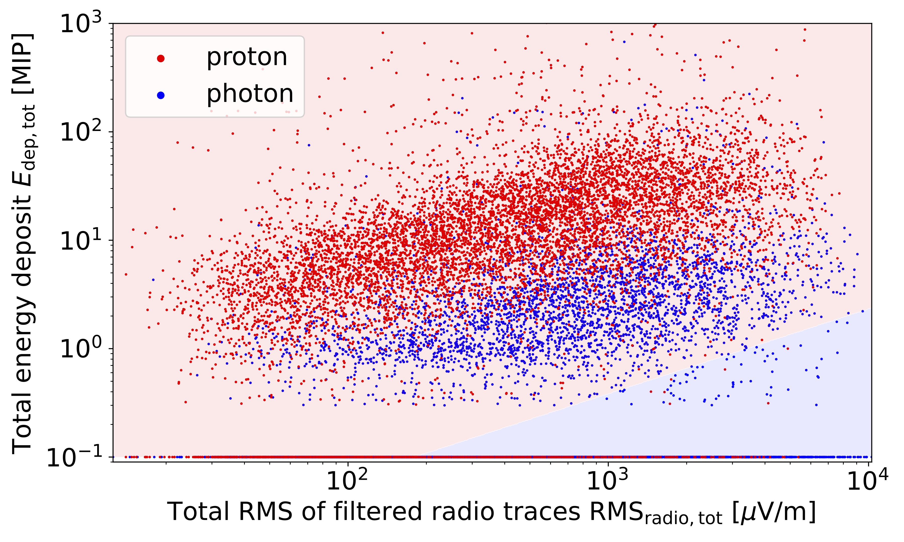
图注：Total energy deposit vs total RMS of the radio traces of triggered antennas, for proton events (red) and photon events (blue). The classification boundary of the logistic regression is also represented. An event in the light red area will be classified as a proton event, and as a photon event in the light blue area. Events with no energy deposit recorded in the scintillators are represented at a total energy deposit of 0.1.
对应解读：对应“建议重点查看的图表”第3项和“关键图表逐图导读”图3：以总射电RMS与闪烁体总能量沉积构成二维分类空间，并叠加分类边界。
入选理由：这是全文最核心诊断图，直接展示质子与光子在 \(S_radio\)–\(E_dep\) 平面中的分离，以及 logistic regression 分类边界。它最能支撑日报中关于“同等射电规模下光子落在低粒子沉积区、强子低沉积尾部决定误报率”的解读。
来源与置信度：\(arxiv_source\)；high；\(arxiv_source\) / main.tex:figure[10]
Fig11
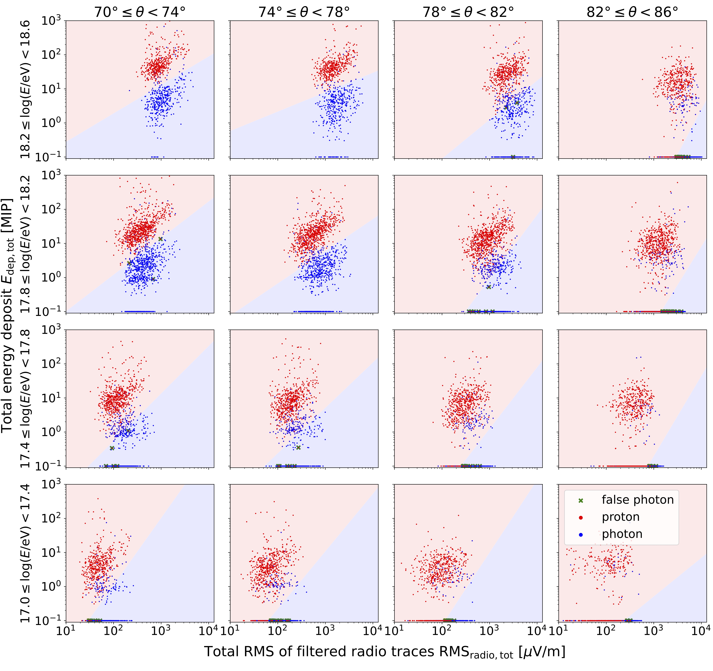
图注：Total energy deposit vs total RMS of the radio traces of triggered antennas, for proton events (red) and photon events (blue), in 16 energy and zenith angle bins. For each bin, an event in the light red area will be classified as a proton event, and as a photon event in the light blue area. Events with no energy deposit recorded in the scintillators are represented at a total energy deposit of 0.1. Proton events falsely identified as photons are shown as green marks.
对应解读：对应“建议重点查看的图表”第3、4项，以及模型拟合段落中关于能量和天顶角分箱、强子误识别尾部的讨论。
入选理由：该图把 Fig10 的二维分类扩展到16个能量和天顶角bin，并明确标出被误识别为光子的质子事件。它比总合散点更能检验分离是否被能量/天顶角混合人为增强，也直接支撑对低统计强子尾部和误识别率的判断。
来源与置信度：\(arxiv_source\)；high；\(arxiv_source\) / main.tex:figure[11]
Fig12
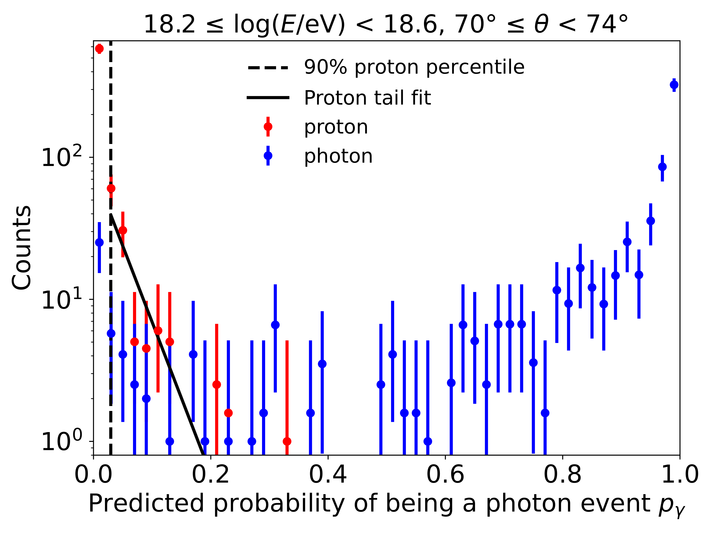
图注：Distribution of the predicted probability of being a photon event $p_\gamma$ returned by the classifier, for the simulated events with energies $18.2 \leq \log_{10}{(E/\textrm{eV})} < 18.6$ and zenith angles $74^{\circ} \leq \theta < 78^{\circ}$. Error bars represent the uncertainty: Poisson errors are used in bins with more than 10 counts, and asymmetric Feldman-Cousins intervals \(\protect{\cite{PhysRevD.57.3873}}\) at $95\%$ confidence level are used otherwise (same as \protect{\cite{AbdulHalim_2025}}). The fit of the proton tail is shown as a black line.
对应解读：对应“模型拟合”中关于分类概率分布、强子尾部拟合、泊松/Feldman-Cousins统计不确定性和背景泄漏估计的段落。
入选理由：该图展示分类器输出的光子概率 \(p_gamma\) 分布、误差条和质子尾部拟合，是候选图中唯一明确包含统计不确定性和背景尾部建模的图。它对判断“零或低泄漏是否只是有限模拟统计导致”特别关键。
来源与置信度：\(arxiv_source\)；high；\(arxiv_source\) / main.tex:figure[12]
Fig06
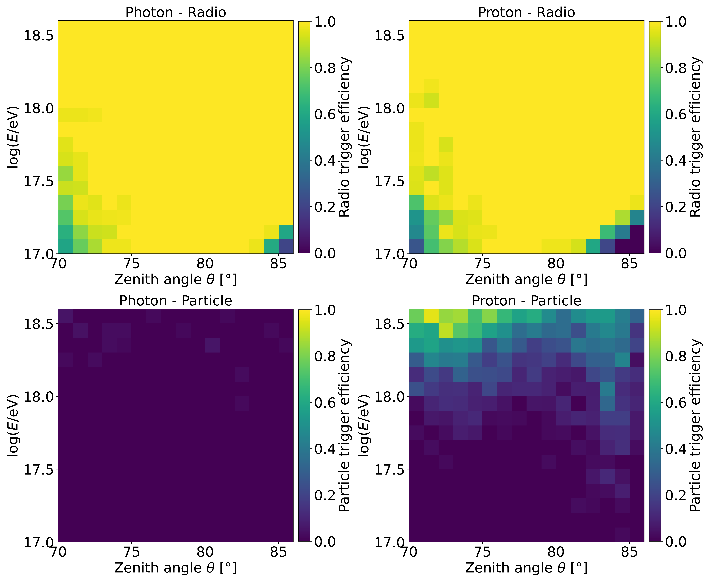
图注：Trigger efficiencies for radio $r_{\rm trig, radio}$ (\textit{upper}) and particle $r_{\rm trig, part}$ (\textit{lower}) detection, as a function of primary energy and arrival zenith angle for photon (\textit{left}) and proton (\textit{right}) showers.
对应解读：对应“建议重点查看的图表”第4、5项：光子/质子触发效率随能量和天顶角变化，以及后续曝光和上限估计的输入。
入选理由：该图给出射电与粒子触发效率在能量—天顶角平面上的二维分布，直接关系到0.3–3 EeV能段的可用效率和角度接受度。虽然不是最终流量上限图，但它是灵敏度和有效曝光估算的关键前置量。
来源与置信度：\(arxiv_source\)；high；\(arxiv_source\) / main.tex:figure[6]
Fig05
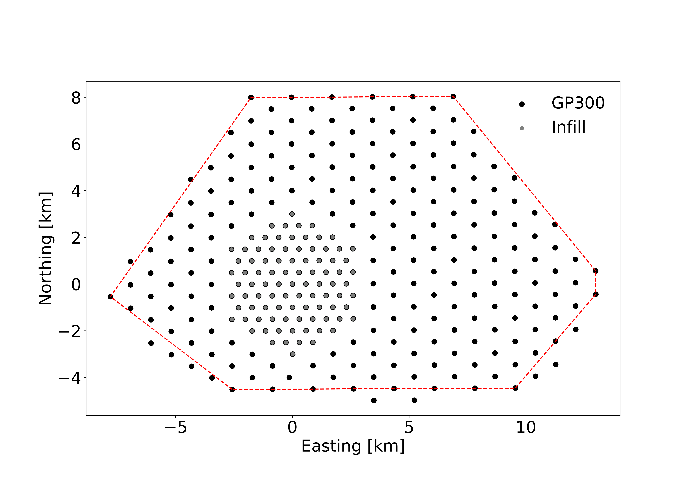
图注：Detector layout of GRANDProto300, shown as black dots. Antennas in the infill array are also colored in grey. The dashed red contour marks the area in which shower core positions are randomly distributed (see Section~\ref{sec:sims}).
对应解读：对应“建议重点查看的图表”第1项和“关键图表逐图导读”图1：GRANDProto300阵列布局、核心随机投放区域和边界效应。
入选理由：该图真实展示了GRANDProto300天线布局和模拟核心采样区域，可用于判断阵列几何、覆盖范围和边界效应。布局直接影响倾斜簇射的射电触发率、粒子采样和后续分类可靠性。
来源与置信度：\(arxiv_source\)；high；\(arxiv_source\) / main.tex:figure[5]
Fig02
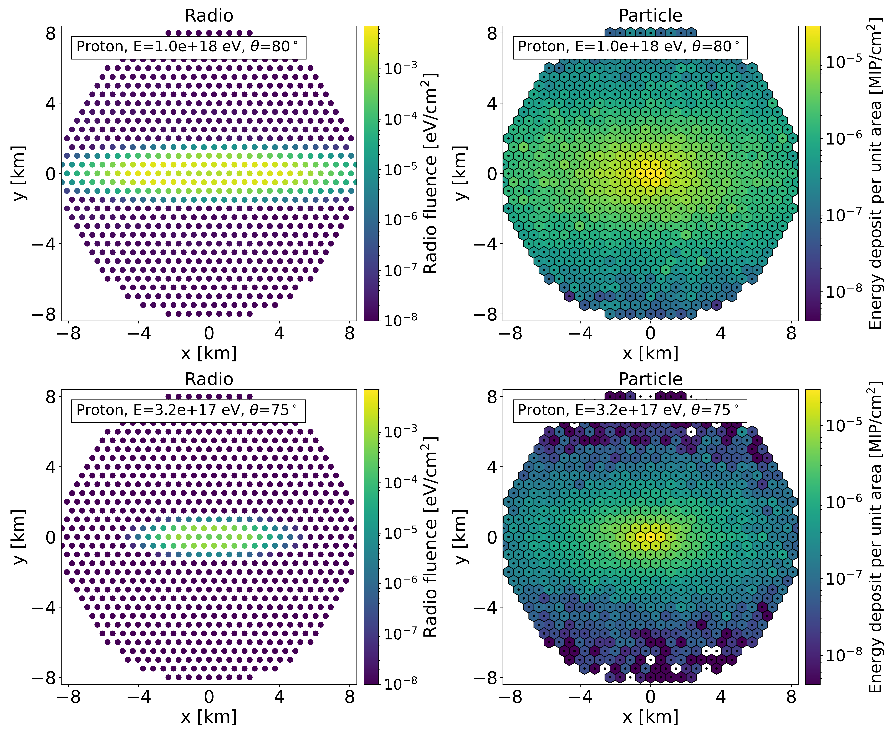
图注：Examples of radio (\textit{left}) and particle (\textit{right}) footprints for two proton events, with energy $E = 10^{18} \textrm{ eV}$ and zenith $\theta = 80^{\circ}$ ({\(\it\) upper row}), and $E = 10^{17.5} \textrm{ eV}$ and $\theta = 75^{\circ}$ ({\(\it\) lower row}). The radio footprint is represented by the fluence of the electric field at antenna positions along an hexagonal grid of spacing $a=577\,$m. The particle footprint shows the average energy deposit in scintillation detectors in hexagonal bins centered around the antenna positions.
对应解读：对应“建议重点查看的图表”第2项和“关键图表逐图导读”图2：典型强子事件的射电足迹与闪烁体能量沉积分布。
入选理由：该图展示质子事件在相同地面坐标中的射电和粒子足迹，有助于理解强子倾斜簇射为何仍在闪烁体中留下可探测沉积。与Fig03配合更完整，但在数量受限时，质子图对说明背景可由缪子沉积排除更直接。
来源与置信度：\(arxiv_source\)；high；\(arxiv_source\) / main.tex:figure[2]
强相关工作
这篇工作属于“同类源/同类事件”层面的超高能光子搜索方法研究，而不是针对某一个已命名瞬变源或单一事件。应把它放在 Auger 和 Telescope Array 的超高能光子上限、AugerPrime 射电升级、GRAND 中微子和倾斜空气簇射探测、以及 AERA/LOFAR 等空气簇射射电技术发展的背景下阅读。检索关键词可用：\(\mathrm{UHE}\) photon limits, inclined air shower radio detection, GRANDProto300, scintillator muon photon discrimination, EeV photon search。
相近工作包括用水切伦科阵列或闪烁体阵列通过地面信号识别光子的搜索，以及用荧光望远镜通过 \(X_{\max}\) 深度识别光子的搜索。本文与这些工作的关系是互补的：它不依赖夜间荧光观测，而试图利用射电阵列的高 duty cycle 和倾斜事件大接受度；但它也继承了地面粒子判别中对强子模型和缪子模拟的依赖。潜在张力来自所谓“缪子缺失”问题：若模拟低估强子簇射中的缪子数，背景模板和分类边界的保守性需要重新评估。
基础理论方面，应回看空气簇射射电发射的地磁与 Askaryan 机制、超高能光子中的 LPM 效应、地磁预簇射、以及强子级联的缪子标度。若要找相反观点或限制因素，可检索强子相互作用模型对 \(N_\mu\) 的不确定性、\(\mathrm{EeV}\) 光子光核截面、以及稀疏阵列自主触发在真实射频环境中的假触发率。
同一事件 / 同类源线索：
相似工作：
基础理论 / 方法工作：
相反观点 / 张力线索：
6. Causality alone bounds the maximum radius difference between different-mass neutron stars
- 来源：arXiv / astro-ph.HE
- 链接：https://arxiv.org/abs/2606.25186v1
- 作者：Aleksi Kurkela, Tuhin Malik
- 评分：novelty 8/10，importance 8/10，relevance 8/10，final 9.00/10
- 推荐理由：中子星共同因果EoS给出解析半径差上界，并直接用于NICER后验解释；对致密物质约束清晰、可复用，属于值得阅读的astro-ph.HE结果。
中文题目：仅由因果性限制不同质量中子星的最大半径差
做了什么：这篇文章问了一个很干净的问题：如果所有冷中子星共享同一个状态方程，并且这个状态方程只满足低密度处的手征有效场论约束和高密度处的因果性，那么不同质量中子星的半径能相差多大？作者给出了一个闭式上界：\(R(2.0\,M_\odot)\le 1.16\,R(1.4\,M_\odot)-1.1\,{\rm km}\)。这个界不是数值拟合的经验式，而是由一族解析构造的极端状态方程精确饱和。把它应用到独立的 \({\rm NICER}\) 半径后验时，联合分布中只有约 \(7.5\%\) 被保留，并明显削掉了 \({\rm PSR\ J0740+6620}\) 的大半径尾部。
为什么重要：它把“同一个因果状态方程”这一非常基础的物理要求，从常见的状态方程先验中剥离出来。换句话说，文章不是再给一个依赖参数化选择的中子星半径约束，而是告诉我们：只要相信冷中子星由同一条因果状态方程支配，某些独立半径测量的组合本身就已经不可能。
理论 / 观测 / 仪器方法价值：理论上，它提供了一个透明的基准线，可用来检查任意状态方程推断是否在利用先验形状“偷偷”施加额外信息。观测上，它给出了一个简单可画在 \(R(1.4\,M_\odot)\)–\(R(2.0\,M_\odot)\) 平面上的因果天花板，适合快速检验 \({\rm NICER}\)、引力波潮汐形变和未来 \({\rm X}\) 射线任务的结果是否彼此相容。方法上，它说明半径差约束可以不依赖大规模随机状态方程采样，而能由极值构造解析得到。
为什么应该关注：如果你关心中子星半径测量，这篇文章提醒你不要把不同质量源的半径后验当成完全独立的天体物理量来解读。即使不用具体核物质模型，\(1.4\,M_\odot\) 星和 \(2.0\,M_\odot\) 星的半径也被因果性强烈关联。对当前 \({\rm PSR\ J0740+6620}\) 等重质量脉冲星的大半径解，这个结果尤其有约束力：它们若与较低质量星的小半径同时成立，就会要求违反最基本的共同因果状态方程假设。
展开详细解读：文章讲解、背景、理论、重点章节、图表与相关工作
文章详细讲解
科学问题：中子星半径是高密度冷强相互作用物质状态方程的直接探针，但不同观测对象通常给出不同质量处的半径信息。例如一个接近 \(1.4\,M_\odot\) 的源给出 \(R(1.4\,M_\odot)\)，一个接近 \(2.0\,M_\odot\) 的源给出 \(R(2.0\,M_\odot)\)。如果把这些半径后验简单相乘，隐含地把不同质量处的半径当成可以任意组合；但真实冷中子星若共享同一个状态方程，这些半径并不独立。本文的核心问题就是：在尽量少的模型假设下，仅由共同状态方程、低密度核物理锚点和因果性，能否给出不同质量半径之间的硬边界？
作者怎么做：作者把低密度部分锚定在核饱和密度附近的手征有效场论状态方程，然后在更高密度允许任意状态方程，只要求热力学稳定和声速不超过光速。关键创新是，他们没有依靠某个随机状态方程参数化族来“搜索”边界，而是解析构造一族极端状态方程。这类状态方程以最大允许刚度推动重星半径，同时通过合适的低密度连接控制较轻星半径，从而在 \(R(1.4\,M_\odot)\)–\(R(2.0\,M_\odot)\) 平面上饱和可达区域的上包络。
关键结果：文章得到一个闭式上界 \(R(2.0\,M_\odot)\le 1.16\,R(1.4\,M_\odot)-1.1\,{\rm km}\)。它的意义不是说所有真实状态方程都会接近这条线，而是说任何同时给出更大 \(R(2.0\,M_\odot)\) 和较小 \(R(1.4\,M_\odot)\) 的组合，都无法由单一因果状态方程产生。作者进一步把这个“先验无关”的因果天花板施加到 \({\rm NICER}\) 对 \({\rm PSR\ J0437-4715}\)、\({\rm PSR\ J0614-3329}\) 和 \({\rm PSR\ J0740+6620}\) 的独立后验上，发现联合乘积分布只剩约 \(7.5\%\)，特别是 \({\rm PSR\ J0740+6620}\) 的大半径尾部被明显排除。
局限和下一步：这个界的力量来自“共同冷状态方程”和“因果性”这两个非常一般的条件，但它也继承了这些条件的边界。若观测半径存在未建模的系统误差，例如热点几何、距离、质量先验或大气模型偏差，那么被削掉的后验尾部未必代表真实物理矛盾，而可能暴露观测模型问题。另一方面，本文只给出一个最大半径差的上界，并不替代完整状态方程反演；未来可把这类解析因果约束与潮汐形变、最大质量、转动修正和相变诊断结合，形成更通用的、可直接嵌入贝叶斯推断的硬约束。
关键结果是怎么做出来的
本文最重要的证据链首先来自样本空间的定义，而不是某个观测数据集本身。作者考虑所有满足三类条件的冷中子星状态方程：低密度处与手征有效场论给出的核物质压力区间相容，压力随能量密度单调增加以保证热力学稳定，并且声速满足 \(c_s\le c\)。在这个空间中，每条状态方程通过 \({\rm TOV}\) 方程映射为一条质量–半径曲线，因此 \(R(1.4\,M_\odot)\) 和 \(R(2.0\,M_\odot)\) 不是两个自由参数，而是同一条曲线上的两个读数。
关键统计量其实是几何可达区域的边界。作者问：固定 \(R(1.4\,M_\odot)\) 后，\(R(2.0\,M_\odot)\) 的最大值是多少？他们给出解析构造的一参数状态方程族，并证明这族状态方程精确饱和边界。于是得到 \(R(2.0\,M_\odot)\le 1.16\,R(1.4\,M_\odot)-1.1\,{\rm km}\)。读者应把这条线看作允许区域的“因果上包络”，而不是对真实半径关系的最佳拟合线。
把结果用于观测时，作者使用 \({\rm NICER}\) 对 \({\rm PSR\ J0437-4715}\)、\({\rm PSR\ J0614-3329}\) 和 \({\rm PSR\ J0740+6620}\) 的独立后验。做法相当于先形成这些后验的联合乘积分布，再丢弃不满足因果半径差不等式的样本。文章报告只有约 \(7.5\%\) 的联合分布权重保留下来。这一数值不是传统频率学意义上的 \(p\) 值，而是给定各自观测后验和独立相乘假设后，被共同因果状态方程可容许区域截取后剩下的后验质量。
支撑结论的图表应包括两类：一类是 \(R(1.4\,M_\odot)\)–\(R(2.0\,M_\odot)\) 平面上的可达域与解析边界，显示随机或构造状态方程不能越过该线；另一类是施加边界前后的 \({\rm NICER}\) 后验对比，尤其要看 \({\rm PSR\ J0740+6620}\) 在大半径侧的尾部如何被截断。若表格列出保留权重、不同源组合或不同低密度锚点下的结果，读者应重点检查 \(7.5\%\) 是否对这些选择敏感。
主要系统误差来自两端。理论端包括手征有效场论锚定密度和不确定带的选择、是否允许强一阶相变、以及因果声速上限是否严格采用 \(c_s=c\) 的极端饱和构造。观测端包括 \({\rm NICER}\) 光变曲线建模中的热点数目和形状、背景、距离、质量约束、星际吸收与仪器响应。稳健性检验应关注：改变低密度锚点、改变源后验版本、只使用源的子集、或加入质量不确定度后，不等式斜率、截距和保留后验质量是否发生本质变化。
展开背景、理论、公式、模型、章节和图表导读
背景知识
中子星半径问题的困难在于，它不是单个天体的几何量那么简单。冷中子星的质量–半径关系由高密度物质状态方程决定，而状态方程又编码了数倍核饱和密度下的强相互作用、多体力、可能的超子、夸克物质或相变。一个 \(1.4\,M_\odot\) 星和一个 \(2.0\,M_\odot\) 星的半径如果来自同一条状态方程，它们必然相关；这种相关性常被完整状态方程推断捕捉，但很难说清究竟有多少来自物理必然性，多少来自参数化先验。
历史上，中子星状态方程的约束来自三条主线：大质量脉冲星给出最大质量下限，\({\rm X}\) 射线热辐射和爆发现象试图测半径，引力波事件的潮汐形变给出致密度约束。\({\rm NICER}\) 的脉冲轮廓建模使孤立毫秒脉冲星的质量和半径联合后验成为现实，\({\rm GW170817}\) 则把双中子星并合的潮汐变形纳入同一问题。每一种观测都有系统误差和模型依赖，因此一个尽量少先验、只用因果性得出的横向检查非常有价值。
现在值得重新看这个问题，是因为 \({\rm NICER}\) 已经给出多个不同质量脉冲星的半径后验，其中 \({\rm PSR\ J0740+6620}\) 是接近 \(2\,M_\odot\) 的重质量源，而 \({\rm PSR\ J0437-4715}\) 和 \({\rm PSR\ J0614-3329}\) 提供较低质量或不同参数区域的信息。若这些后验独立看都合理，合在一起却需要同一状态方程在不同质量处给出过大的半径差，那就暴露了一个更深层的一致性问题。
该领域的常见误区之一，是把“因果性约束”误解为一个很弱、几乎不起作用的条件。事实上，在 \({\rm TOV}\) 方程中，压力支撑、能量密度分布和致密度相互耦合，\(c_s\le c\) 会限制状态方程能多快变硬，从而限制同一条质量–半径曲线的形状。另一个误区是把某个状态方程采样结果中的半径相关性完全归因于核物理模型；本文强调，即使不选具体核模型族，共同因果状态方程本身也会给出硬相关。
还要避免把本文的不等式理解成真实宇宙必须落在直线附近。它给的是最大允许 \(R(2.0\,M_\odot)\)，真实状态方程完全可能远低于该上界。若观测后验越过上界，最直接的解释不是“发现了超因果物质”，而是独立半径后验、质量映射、源模型或低密度锚定中至少有一项需要重新检查。
基础理论 / 方法脉络
基础物理图像从静水平衡开始。冷、非快速旋转中子星可近似为广义相对论中的球对称流体球。给定状态方程 \(P(\varepsilon)\)，其中 \(P\) 是压力、\(\varepsilon\) 是能量密度，\({\rm TOV}\) 方程决定从中心到表面的压力剖面，进而给出总质量 \(M\) 和半径 \(R\)。因此质量–半径曲线不是任意曲线，而是状态方程的积分结果。
因果性的角色通过声速进入。冷物质中的绝热声速满足 \(c_s^2=dP/d\varepsilon\)，相对论因果性要求 \(c_s\le c\)。如果想让高质量星半径很大，通常需要在相关密度区间有较高压力；但压力不能随着能量密度无限快地增加，因为那会违反 \(dP/d\varepsilon\le c^2\)。这正是本文能得到最大半径差的原因：从较低质量星所探测的密度区间到较高质量星所探测的密度区间，状态方程变硬的速度有上限。
低密度锚点来自手征有效场论。手征有效场论在核饱和密度附近及略高密度处较可信，能给出中子物质压力和能量密度的理论带。本文不是把手征有效场论外推到高密度，而是在低密度把状态方程固定或限制住，然后允许高密度尽可能自由。这样做的优点是清楚地区分了“可靠低密度核物理”和“未知高密度极端物理”。
观测方法层面，\({\rm NICER}\) 通过毫秒脉冲星表面热点的 \({\rm X}\) 射线脉冲轮廓反推 \(M\) 和 \(R\)。广义相对论光线弯曲使脉冲幅度和相位对致密度 \(GM/(Rc^2)\) 很敏感；热点几何、观测倾角、距离和背景则带来退化。本文没有重新拟合光变曲线，而是接收已有 \({\rm NICER}\) 后验，并用因果半径差不等式做后验裁剪。
常见退化包括：较大的 \(R\) 与不同热点纬度或观测倾角可能产生相似脉冲形状；质量先验会影响半径后验；低密度状态方程锚点改变会移动因果边界；强相变可能让质量–半径曲线出现非单调或双星支结构。本文的解析界之所以有用，是因为它把这些复杂性压缩成一个最基本的问题：无论内部微观成分如何，只要同一条因果状态方程连接这些质量点，半径组合就不能越界。
公式与推导
第一步是静态球对称星的广义相对论流体平衡。给定压力 \(P(r)\)、能量密度 \(\varepsilon(r)\) 和包围质量 \(m(r)\)，\({\rm TOV}\) 方程为
这里 \(r\) 是径向坐标，\(G\) 是引力常数，\(c\) 是光速。选定中心能量密度并积分到 \(P(R)=0\)，就得到该模型的半径 \(R\) 和质量 \(M=m(R)\)。
第二步是状态方程和因果性。冷物质状态方程写作 \(P=P(\varepsilon)\)，绝热声速为
若采用 \(P\) 与 \(\varepsilon\) 均为能量密度单位，也常写成 \(dP/d\varepsilon\le 1\)。因果性要求
下界对应力学稳定性，上界对应扰动传播速度不超过光速。
第三步是低密度锚定。设手征有效场论可靠到某个匹配能量密度 \(\varepsilon_0\)，给出压力 \(P_0=P(\varepsilon_0)\)。在最硬的因果延拓中，高密度压力的增长不能超过
这条式子说明，若想在较高密度获得最大支撑压力，最极端的选择就是让 \(dP/d\varepsilon=1\)，即声速达到因果上限。
第四步是把状态方程映射到质量–半径函数。对任意满足条件的状态方程 \({\cal E}\)，定义
其中 \(R_M\) 表示质量为 \(M\) 的稳定星半径。本文关心的是所有允许 \({\cal E}\) 中的优化问题
其中 \({\cal C}\) 是满足手征有效场论锚定、稳定性和因果性的状态方程集合。
第五步是本文给出的解析上包络。作者证明上述优化的结果可写成近似或精确表达的闭式线性界
这里 \(R(1.4\,M_\odot)\) 和 \(R(2.0\,M_\odot)\) 分别是同一状态方程上质量为 \(1.4\,M_\odot\) 与 \(2.0\,M_\odot\) 的恒星半径。这条线的物理含义是：较重星半径不能比由较轻星半径和最大因果硬化速度允许的值更大。
第六步是后验裁剪。若独立观测给出参数向量 \(\theta\) 的后验样本，其中包含不同质量处的半径，可定义因果允许指示函数
独立后验相乘后的因果保留权重为
文中报告的核心数值是 \(f_{\rm keep}\simeq 0.075\)，表示联合乘积分布中只有约 \(7.5\%\) 满足该因果半径差约束。
第七步是把这个比例理解为模型一致性诊断。若用对数权重表示被约束削掉的信息量，可以写作
这里 \(Z\) 类似证据归一化因子；\(\Delta \ln Z_{\rm cau}\) 越负，说明独立观测后验与共同因果状态方程可达域的张力越强。不过它依赖输入后验和独立性假设，不能简单等同于发现新物理的显著性。
模型拟合 / 应用方法
本文本身的拟合重点不是从原始光子事件重新估计 \({\rm NICER}\) 脉冲星参数，而是把已有半径后验投影到一个由因果性定义的允许区域上。可把它看作一种后处理式的贝叶斯一致性检验：输入是各源的 \(M\)–\(R\) 后验或经过质量插值后的 \(R(1.4\,M_\odot)\)、\(R(2.0\,M_\odot)\) 分布，输出是满足不等式的样本子集及其权重。
在完整状态方程拟合中，常见参数包括分段多项式、声速参数化、谱表示、相变密度和相变强度等。似然通常来自 \({\rm NICER}\) 质量–半径后验、引力波潮汐后验和射电脉冲星质量测量。本文的优势是避开这些参数化先验，直接使用允许状态方程集合的极值性质；但若要与其他数据联合，仍需要把不等式写成硬先验或软惩罚项嵌入总后验。
残差或诊断图的读法也与普通拟合不同。普通模型拟合看数据点相对最佳模型曲线的残差；本文应看后验样本相对因果边界的距离。例如定义 \(\Delta R=1.16R(1.4\,M_\odot)-1.1\,{\rm km}-R(2.0\,M_\odot)\)，则 \(\Delta R<0\) 的样本是物理不可达组合。若被排除样本集中在某个源的大半径尾部，说明张力主要来自该源的观测模型或后验尾部，而非所有源的中心值都冲突。
主要退化关系包括低质量半径与高质量半径的共同上移、最大质量约束与高密度刚度的耦合、以及强相变导致的半径突变。因果上界通常允许状态方程尽可能硬，因此它是保守的；若加入更具体的核物理先验、微观稳定性或最大质量上限，允许区域往往会更小，而不会更大。换言之，违反本文界限的样本很难通过“换一个常规状态方程先验”来挽救。
模型可能失败的地方主要有三类。第一，若不同源不是由同一冷催化状态方程描述，例如存在极端温度、强磁场或快速自转导致的显著修正，则映射需要扩展。第二，\({\rm NICER}\) 后验若含有未充分边缘化的系统误差，后验裁剪会把观测系统误差误读为物理不一致。第三，低密度手征有效场论锚定若选择过窄或匹配密度不合适，会影响直线的斜率和截距。因此实际应用中应把这条界作为一致性基准，而不是替代所有状态方程推断的最终答案。
重点章节 / 结果段落怎么读
-
引言和问题设定：读者应首先抓住作者想隔离的物理假设。本文不是提出新的 \({\rm NICER}\) 半径测量，也不是给出一套新的核物质模型，而是问共同因果状态方程本身对 \(R(1.4\,M_\odot)\) 和 \(R(2.0\,M_\odot)\) 的相关性有多强。
-
状态方程集合与因果条件：这一部分应重点看低密度手征有效场论锚点如何设置、高密度自由度如何放开、稳定性和因果性如何实现。关键不是某个具体微观模型，而是允许集合 \({\cal C}\) 是否足够宽、是否真的只加入了作者声称的最小假设。
-
解析极值构造：这是全文技术核心。读者应检查作者如何构造饱和上界的一参数状态方程族，以及为什么它能给出最大 \(R(2.0\,M_\odot)\) 而非仅是数值搜索中的一个极端例子。若文中有证明或附录，这部分值得细读。
-
半径差闭式上界：这一节应关注不等式 \(R(2.0\,M_\odot)\le 1.16R(1.4\,M_\odot)-1.1\,{\rm km}\) 的适用范围。要确认半径单位、质量点定义、低密度锚点和是否假设非旋转或慢转。也要看作者是否给出不同锚定选择下的系数变化。
-
对 \({\rm NICER}\) 后验的应用：读者应看作者如何组合 \({\rm PSR\ J0437-4715}\)、\({\rm PSR\ J0614-3329}\) 和 \({\rm PSR\ J0740+6620}\) 的后验，如何计算只剩 \(7.5\%\) 的保留权重，以及哪些源或哪些尾部主导了被排除区域。
-
讨论和稳健性：最后应关注作者如何区分因果性导致的硬约束和状态方程先验导致的软偏好。若有附录，优先阅读关于极值证明、数值 \({\rm TOV}\) 校验和观测后验重采样的部分。
建议重点查看的图表
-
\(R(1.4\,M_\odot)\)–\(R(2.0\,M_\odot)\) 平面的允许区域图：看解析直线是否确实包住所有因果状态方程样本，以及饱和构造是否贴着上边界走。
-
饱和上界的一参数状态方程族图：看 \(P(\varepsilon)\) 或 \(c_s^2(\varepsilon)\) 如何在低密度锚点后达到因果极限，确认它不是普通平滑核模型，而是用于极值证明的极端构造。
-
质量–半径曲线图：看饱和状态方程族在 \(1.4\,M_\odot\) 和 \(2.0\,M_\odot\) 处如何取半径，尤其注意稳定分支和最大质量是否满足观测下限。
-
\({\rm NICER}\) 后验裁剪前后对比图：看 \({\rm PSR\ J0740+6620}\) 的大半径尾部如何被削掉，以及 \({\rm PSR\ J0437-4715}\)、\({\rm PSR\ J0614-3329}\) 的后验是否主要通过限制 \(R(1.4\,M_\odot)\) 参与约束。
-
保留权重或累积分布表：看 \(f_{\rm keep}\simeq 0.075\) 是否随源组合、后验版本、低密度锚定和插值方法改变。
-
稳健性诊断图：若文中给出不同手征有效场论带、匹配密度或因果构造的结果，应检查直线斜率和截距变化是否小于观测后验宽度。
关键图表逐图导读
图 1：通常应是半径–半径平面图。横轴可理解为 \(R(1.4\,M_\odot)\)，纵轴为 \(R(2.0\,M_\odot)\)。数据点或灰色云代表允许状态方程样本，实线代表因果上界 \(R(2.0\,M_\odot)=1.16R(1.4\,M_\odot)-1.1\,{\rm km}\)。读图时不要把实线当回归线；它是禁止区域的边界，线以上才是物理上被排除的组合。
图 2：若展示状态方程或声速剖面，横轴多为 \(\varepsilon\)、重子数密度或相对核饱和密度，纵轴为 \(P\) 或 \(c_s^2/c^2\)。模型线中贴近 \(c_s^2/c^2=1\) 的部分表示因果极限饱和。读图陷阱是把这种极端构造误认为作者主张真实物质声速必然达到光速；实际上它只是为证明最大半径差而使用的边界案例。
图 3：若是质量–半径曲线，横轴为 \(R\)，纵轴为 \(M\)，或反之。应关注每条曲线在 \(1.4\,M_\odot\) 和 \(2.0\,M_\odot\) 水平线处的交点，以及稳定分支终点。若曲线在高质量端半径很大，检查它是否依靠极高声速、是否满足最大质量约束，以及是否仍由同一条状态方程连接低质量点。
图 4：若是 \({\rm NICER}\) 后验投影图，坐标轴可能仍是 \(R(1.4\,M_\odot)\) 与 \(R(2.0\,M_\odot)\)，彩色等高线表示独立后验乘积，阴影或虚线表示被因果界裁剪后的区域。主要结论应是大半径的 \({\rm PSR\ J0740+6620}\) 后验尾部与较小 \(R(1.4\,M_\odot)\) 组合不相容。读图时要区分后验密度最高区域和低概率长尾，因为 \(7.5\%\) 的保留权重常由尾部体积决定。
图 5：若有表格或条形图给出保留比例，重点看不同源组合的 \(f_{\rm keep}\)。如果加入某个源后保留比例骤降，说明该源主导张力。若不同低密度锚点下保留比例变化很大，则说明理论锚点仍是重要系统误差；若变化不大，则支持作者“先验无关基准”的说法。
论文原图 / 可嵌入图片
Fig03
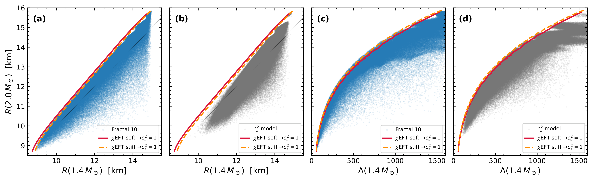
图注：Causality bound on the neutron-star radius across masses. (a,b)~$\Rof{2.0}$ vs $\Rof{1.4}$ for the fractal-bridge 10-layer ensemble (blue) and the $\cs$ model (gray). (c,d)~$\Rof{2.0}$ vs $\Lambda_{1.4}$ for the same two ensembles. All four panels share the $\Rof{2.0}$ axis. In all panels the red solid and orange dashed curves are the \(\emph{direct-causal saturators}\): EoSs in which $\cs=1$ is imposed immediately above the soft (solid) and stiff (dashed) \chiEFT\ endpoints. Both ensembles lie below this ceiling, but only the maximally agnostic fractal-bridge ensemble reaches it, whereas the less flexible $\cs(\varepsilon)$ ensemble falls short of the ceiling (see text). The dotted diagonal in (a,b) is $R_{2.0}=R_{1.4}$. Only $\MTOV>1.97\Msun$ is imposed.
对应解读：对应“建议重点查看的图表”第1项，以及“关键图表逐图导读”图1：R(1.4M⊙)–R(2.0M⊙)平面的因果上界与饱和构造。
入选理由：这是论文核心结果图，直接展示R(2.0M⊙)相对R(1.4M⊙)的允许区域、因果天花板和direct-causal saturators。它能验证日报强调的解析上界不是回归线，而是所有因果状态方程样本的上包络，并且显示不同EoS参数化是否能真正贴近该上界。
来源与置信度：\(arxiv_source\)；high；\(arxiv_source\) / main.tex:figure[3]
Fig04
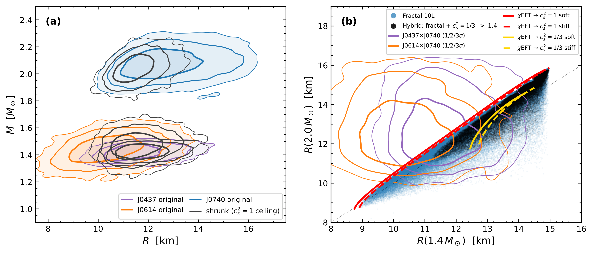
图注：Two consequences of the causality ceiling for current data. (a)~$M$--$R$ plane. Filled purple/orange/blue contours are the original NICER $1/2/3\sigma$ posteriors of PSR~J0437$-$4715, PSR~J0614$-$3329 and PSR~J0740+6620, computed by Gaussian KDE on the published equal-weight posterior samples. Dark-gray overlaid contours ($1/2/3\sigma$) are the \(\emph{shrunk}\) posteriors obtained by re-sampling triples and retaining only those satisfying both $\R{2.0}\le a_R\,\R{1.4}+b_R$ pairings (Table~\(\ref{tab:saturator_fits},\) \chiEFT\ soft). The shrink removes the large-$R$ tail of PSR~J0740 (median $\R{2.0}$ drops from $12.5$ to $\sim 11.4\,$km) and pushes PSR~J0437 and PSR~J0614 toward slightly larger radii. Only $7.5\%$ of the input triples survive. (b)~$\Rof{2.0}$--$\Rof{1.4}$ plane. Light-blue points: fully agnostic fractal-bridge 10L ensemble (any causal EoS above $1.4\Msun$). Dark-gray points: \(\emph{hybrid}\) family in which the fractal-bridge 10L EoS is kept up to the central energy density of the $1.4\Msun$ star, $\ecOf{1.4}$, and replaced by $\cs=1/3$ above; only $\MTOV>1.97\Msun$ EoSs are retained. Red solid/dashed and gold solid/dashed curves are the analytic \(\chiEFT\)$\to\cs=1$ and \(\chiEFT\)$\to\cs=1/3$ saturators (soft/stiff anchors). Purple and orange contours are the NICER joint posteriors J0437$\times$J0740 and J0614$\times$J0740 ($1/2/3\sigma$, independent product).
对应解读：对应“建议重点查看的图表”第4项，以及“关键图表逐图导读”图4：NICER后验裁剪前后对比和R(2.0M⊙)–R(1.4M⊙)后验投影。
入选理由：这是把因果上界用于观测数据的关键图，明确显示PSR J0740+6620大半径尾部被削除、J0437/J0614与J0740联合后验在半径–半径平面中的位置，以及仅7.5%输入三元组保留的结论。它最直接支撑日报关于后验裁剪和观测张力来源的解读。
来源与置信度：\(arxiv_source\)；high；\(arxiv_source\) / main.tex:figure[4]
Fig02
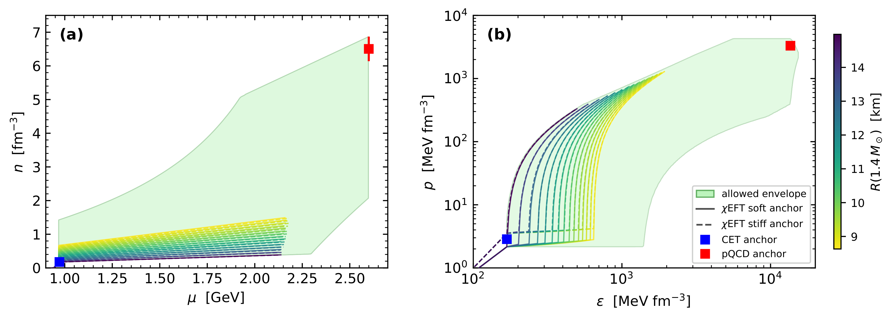
图注：Origin of the bound. (a)~$\mu$--$n$ plane. The green band is the allowed envelope of thermodynamic consistency and causality between the \chiEFT\ (blue) and \pQCD\ (red) anchors~\(\cite{Komoltsev:2021jzg}.\) Thirty direct-causal EoSs are overlaid: solid for soft and dashed for stiff \chiEFT\ endpoint, colored by their resulting $\R{1.4}$. Each trajectory is truncated at the central density of its $\MTOV$ configuration. Over the stellar range the trajectories are straight rays through the \chiEFT\ anchor, $\mu(n)=(\mu_L/n_L)\,n$, as dictated by $\cs=1$. (b)~Same EoSs in the $\varepsilon$--$p$ plane. Along $\cs=1$ the relation is $p(\varepsilon) = \varepsilon + (2 p_L - \mu_L n_L)$, a slope-one line whose offset is fixed by the \chiEFT\ anchor. The bound of Fig.~\(\ref{fig:bound}\) is the stellar projection of these two elementary geometric statements.
对应解读：对应“建议重点查看的图表”第2项，以及“关键图表逐图导读”图2：饱和上界的一参数状态方程族、μ–n与ε–p平面中的cs=1因果极限。
入选理由：该图解释上界的物理和几何来源，展示direct-causal EoS在χEFT锚点之后沿cs=1轨迹演化，并在ε–p平面中形成斜率为1的线。它能防止将极端饱和构造误解为普通平滑核物质模型，是理解解析证明不可或缺的图。
来源与置信度：\(arxiv_source\)；high；\(arxiv_source\) / main.tex:figure[2]
Fig06
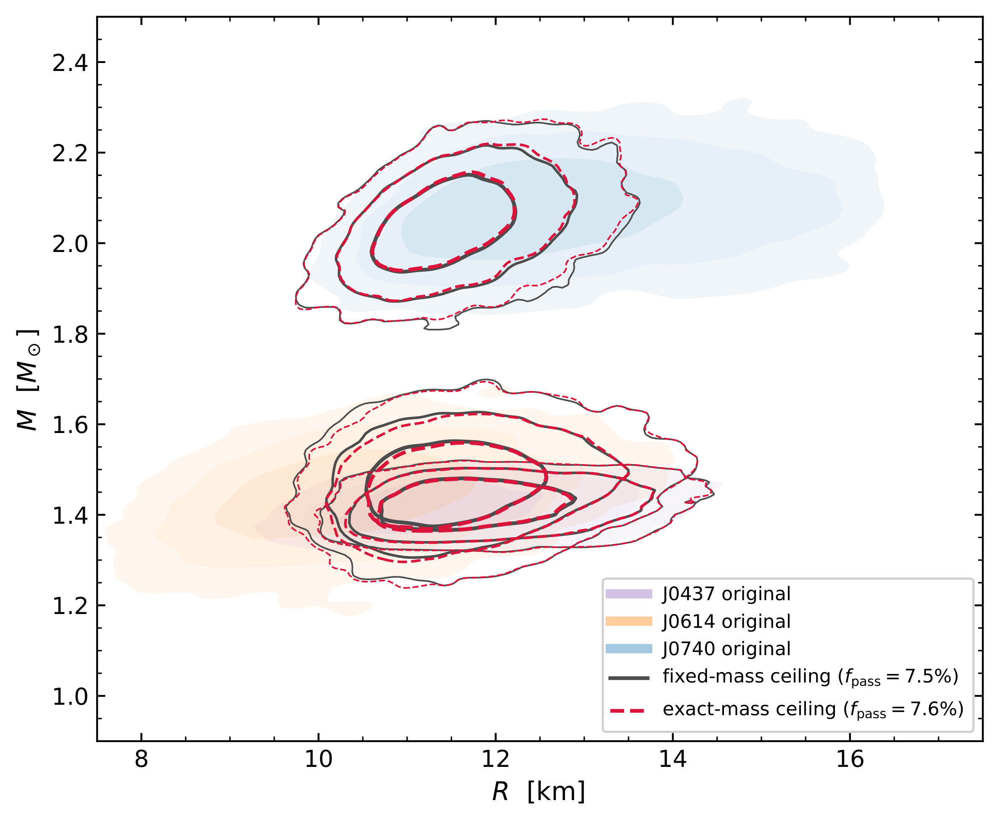
图注：{Conditioned NICER posteriors from the fixed-mass and exact-mass causal ceilings. Filled contours: original $1/2/3\sigma$ posteriors of PSR~J0437$-$4715 (purple), PSR~J0614$-$3329 (orange) and PSR~J0740+6620 (blue). Solid dark-gray contours: posteriors conditioned with the fixed-mass ceiling of Eq.~(\ref{eq:constrained_posterior}), evaluated at the canonical masses $(1.4,\,2.0)\Msun$ (see Table~\(\ref{tab:saturator_fits},\) \chiEFT\ soft), as in Fig.~\(\ref{fig:hybrid_shrunk}(a).\) Dashed red contours: posteriors conditioned with the exact-mass ceiling $R^{\max}_{(m_\ell,\,m_h)}$ reconstructed for the sampled mass pair of every posterior triple. The two conditionings retain $7.5\%$ and $7.6\%$ of the joint posterior, respectively, and produce statistically indistinguishable marginals (per-pulsar Kolmogorov--Smirnov distance $\le 0.02$ \(\cite{Massey01031951}\); credible radius bounds agreeing to within $0.04\,$km).}
对应解读：对应“建议重点查看的图表”第5项和模型拟合段落：固定质量与精确质量因果天花板对NICER后验裁剪结果的比较。
入选理由：该图直接检验f_keep≈0.075的稳健性，比较固定(1.4,2.0)M⊙上界和按每个样本质量对重构的exact-mass ceiling，显示保留比例7.5%与7.6%几乎一致、边缘后验差异很小。它比单纯展示后验更适合支撑日报关于后处理式贝叶斯一致性检验和系统诊断的说明。
来源与置信度：\(arxiv_source\)；high；\(arxiv_source\) / main.tex:figure[6]
Fig05
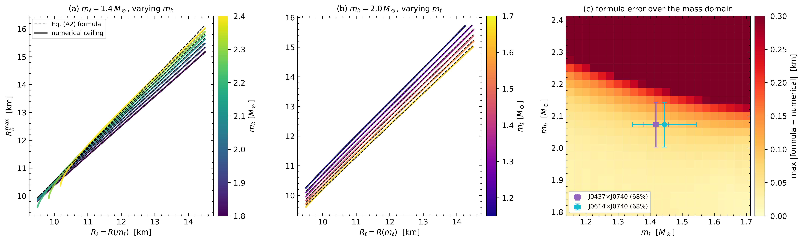
图注：Accuracy of the closed-form exact-mass ceiling, Eq.~(\ref{eq:massexact_surface}) with the coefficients of Table~\(\ref{tab:massexact_fit}.\) (a)~Numerical family ceilings (solid, colored by $m_h$) and the closed form (black dashed) at fixed $m_\ell = 1.4\Msun$. (b)~Same at fixed $m_h = 2.0\Msun$, varying $m_\ell$ (colored). The numerical ceilings are smooth across the full radius range, and the closed form tracks them throughout, deviating only toward the extreme low-$R_\ell$ and high-$m_h$ corners. (c)~Maximum absolute deviation between the closed form and the numerical ceilings over $9.5 \le R_\ell \le 14.5\,$km, as a function of the mass pair. The markers show the median masses and $68\%$ intervals of the J0437$\times$J0740 and J0614$\times$J0740 NICER pairings: within their $68\%$ mass ranges the closed form is accurate to better than $0.24\,$km, and to $\lesssim 0.1\,$km at the medians.
对应解读：对应“建议重点查看的图表”第6项和模型拟合段落：闭式exact-mass ceiling的精度、质量对依赖和系统误差诊断。
入选理由：该图量化闭式半径上界相对于数值ceiling的偏差，并标出J0437×J0740、J0614×J0740的NICER质量范围，说明在观测相关质量区间内误差小于约0.24 km、典型质量处约0.1 km。它支撑日报中关于斜率截距变化、质量插值和理论近似误差是否小于观测后验宽度的讨论。
来源与置信度：\(arxiv_source\)；high；\(arxiv_source\) / main.tex:figure[5]
Fig01
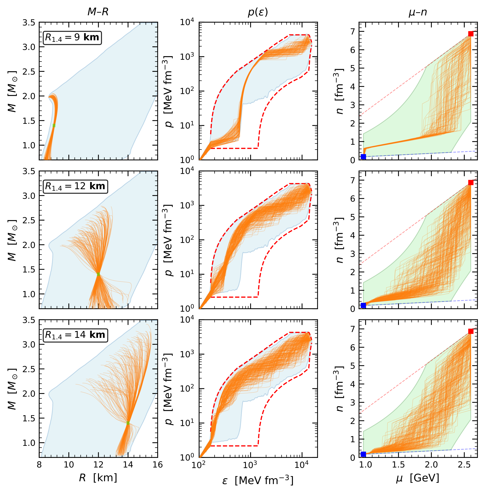
图注：Fractal-Bridge 10-layer ensemble conditioned on three fixed small patches in the mass–radius plane: the radius at $1.4\Msun$, with $\R{1.4} = 9$, $12$, and $14$ km (rows from top to bottom). Columns show the mass--radius relation, the pressure $p(\varepsilon)$, and the chemical potential--density $\mu$--$n$ relation of the EoSs passing through the green patch in each $M$--$R$ panel (orange curves). The light-blue region in the $M$--$R$ and $p(\varepsilon)$ panels is the full fractal 10L domain; the light-green band in the $\mu$--$n$ panels is the outer constrained envelope~\(\cite{Komoltsev:2021jzg}\) of all stable, causal EoSs connecting the \chiEFT\ anchor (blue square) to the \pQCD\ anchor (red square). Red dashed curves in $p(\varepsilon)$ are the same allowed envelope of Ref.~\(\cite{Komoltsev:2021jzg}\) mapped to the $(\varepsilon, p)$ plane; blue and red dotted rays in $\mu$--$n$ are the $\cs=1$ rays through the \chiEFT\ and \pQCD\ anchors. Only $\MTOV > 1.97\Msun$ is imposed.
对应解读：对应“建议重点查看的图表”第3项：质量–半径曲线、p(ε)关系以及不同R(1.4M⊙)条件下允许EoS族的整体结构。
入选理由：该图同时展示M–R曲线、p(ε)和μ–n关系，有助于理解状态方程样本如何连接低密度χEFT锚点、满足MTOV>1.97M⊙并覆盖不同R(1.4M⊙)。不过它不是解析因果上界或NICER裁剪的主图，和日报核心结论的直接对应性弱于Fig03、Fig04和Fig02。
来源与置信度：\(arxiv_source\)；high；\(arxiv_source\) / main.tex:figure[1]
强相关工作
这篇工作与两类文献直接相连。第一类是完整中子星状态方程推断，包括用 \({\rm NICER}\) 半径、射电脉冲星质量和引力波潮汐形变联合约束 \(P(\varepsilon)\) 的研究。那些工作通常需要选择分段多项式、谱表示或声速参数化，因此结论会混合物理信息和先验形状。本文提供的是一个更低层级的因果一致性检查，可用检索关键词 “neutron star radius causality bound common equation of state NICER” 和 “mass radius relation causal equation of state” 查找相邻工作。
第二类是经典因果上限和最大质量约束文献，例如 \({\rm Rhoades}\) 与 \({\rm Ruffini}\) 关于因果状态方程最大质量的思想，以及 \({\rm TOV}\) 结构方程和现代手征有效场论中子物质计算。本文的不同之处在于，它不是只问最大质量能有多大，而是问同一状态方程在两个固定质量点的半径差能有多大。检索关键词可包括 “Rhoades Ruffini causal limit neutron star”, “chiral EFT neutron matter equation of state neutron star radii”, “NICER PSR J0740 radius posterior”。
同一事件或同一源背景方面，本文涉及的是 \({\rm PSR\ J0437-4715}\)、\({\rm PSR\ J0614-3329}\) 和 \({\rm PSR\ J0740+6620}\) 的 \({\rm NICER}\) 半径后验，因此应优先对照这些源的 \({\rm NICER}\) 官方论文、脉冲轮廓建模论文和后验数据发布。对于 \({\rm PSR\ J0740+6620}\)，已有多个团队对同一源进行半径推断，是判断大半径尾部是否稳健的关键参照。
同一事件 / 同类源线索：
- https://arxiv.org/abs/2606.25186
- https://arxiv.org/pdf/2606.25186
- https://arxiv.org/abs/2105.06979
- https://arxiv.org/abs/2105.06980
相似工作：
- https://arxiv.org/abs/1706.02969
- https://arxiv.org/abs/1805.11581
- https://arxiv.org/abs/1908.10352
- https://arxiv.org/abs/1912.05705
基础理论 / 方法工作：
- https://ui.adsabs.harvard.edu/abs/1939PhRv...55..364T/abstract
- https://ui.adsabs.harvard.edu/abs/1939PhRv...55..374O/abstract
- https://ui.adsabs.harvard.edu/abs/1974PhRvL..32..324R/abstract
- https://arxiv.org/abs/1303.4662
- https://arxiv.org/abs/astro-ph/0612440
相反观点 / 张力线索：
7. 3D particle-in-cell simulations of pulsar wind-disk interaction: application to the transitional millisecond pulsar PSR J1023+0038
- 来源：arXiv / astro-ph.HE
- 链接：https://arxiv.org/abs/2606.25114v1
- 作者：Valentina Richard-Romei, Benoît Cerutti, Alessandro Papitto, Riccardo La Placa
- 评分：novelty 8/10，importance 7/10，relevance 8/10，final 8.65/10
- 推荐理由：3D PIC模拟过渡毫秒脉冲星风与盘相互作用，并解释PSR J1023+0038光学/X射线脉冲；对致密星高能辐射机制有直接价值。
中文题目：三维粒子-in-cell 模拟脉冲星风与吸积盘相互作用：用于解释过渡毫秒脉冲星 PSR J1023+0038
做了什么：这篇文章用三维粒子-in-cell 数值模拟，把一个旋转脉冲星磁层放在理想导电环面状内盘附近，研究过渡毫秒脉冲星在“亚亮度盘态”中脉冲星风如何撞上吸积盘内缘。作者发现，盘会显著重塑磁层：内盘边界附近等离子体密度和磁场增强，粒子更容易各向同性化和加速，从而产生更强的同步辐射。合成光变曲线可随磁倾角呈单峰或双峰，偏振度低于孤立脉冲星，偏振角摆动也会随视线而改变。这为 PSR J1023+0038 的光学和 X 射线脉冲提供了一个从微观等离子体出发的解释。
为什么重要：PSR J1023+0038 这类过渡毫秒脉冲星的难点在于：系统明明有盘，却仍显示强的脉冲辐射，而且光学和 X 射线脉冲亮度过高，不能简单套用“纯吸积柱”或“孤立旋转供能脉冲星”的图像。本文的重要性在于，它不是只调一个现象学辐射区，而是用三维 kinetic 模拟直接看脉冲星磁层、风、盘内缘之间如何交换能量和粒子。
理论 / 观测 / 仪器方法价值：对理论而言，本文给出了脉冲星风—盘相互作用的首个此类三维 PIC 框架之一，可用于检验盘是否会改变开磁力线、电流片、粒子加速和辐射各向异性。对观测而言，它把光变形状、同步辐射增强、偏振度降低和偏振角旋转联系起来，给未来的高速光学偏振和软 X 射线偏振观测提供了可检验诊断量。对方法而言，它展示了如何从自洽电磁场和粒子分布生成相位分辨光变与偏振，而不仅是后处理几何模型。
为什么应该关注：如果你关心中子星磁层、低质量 X 射线双星演化、毫秒脉冲星再循环或高能辐射机制，这篇文章值得读，因为它瞄准的是一个传统分类失效的状态：盘没有完全压垮脉冲星，脉冲星风也没有完全清空盘。这个“拉锯区”可能正是理解过渡毫秒脉冲星、红背蜘蛛系统和紧凑双星反馈的关键实验室。
展开详细解读：文章讲解、背景、理论、重点章节、图表与相关工作
文章详细讲解
科学问题：过渡毫秒脉冲星在射电脉冲星态和吸积供能态之间切换，而 PSR J1023+0038 在所谓亚亮度盘态中尤其反常：观测上有吸积盘迹象，但同时出现强的光学和 X 射线脉冲。标准孤立脉冲星模型会把高能辐射放在磁层间隙、电流片或风区；标准吸积模型则倾向于把脉冲归因于磁极附近的通道化吸积。问题是，在亚亮度盘态中，这两套图像都不够自然：盘存在，却未必到达中子星表面；旋转供能机制仍活跃，但外部边界条件已被盘内缘彻底改变。
作者怎么做：论文采用三维 particle-in-cell 模拟，直接演化旋转磁偶极中子星周围的电磁场和电子—正电子等离子体，并在外部放置一个理想导电的环面结构，作为吸积盘内缘的简化替代。这个设置不是完整的辐射磁流体吸积盘模拟，而是聚焦在最关键的 kinetic 区域：脉冲星风、开磁力线和盘内缘导电边界相遇处。作者比较有盘与无盘情形，改变磁倾角和观测视角，并用模拟中的粒子能量、磁场与速度方向后处理计算同步辐射、相位光变和偏振。
关键结果：盘的存在使磁层相对于孤立旋转供能状态发生显著重构。内盘边界附近形成更高等离子体密度和更强磁场，局部电流和剪切增强，粒子分布更容易各向同性化并获得更高能量。辐射上，同步辐射总量显著增强，并出现强连续分量；相位光变随磁倾角可以是一峰或双峰结构，这与 PSR J1023+0038 中观测到的宽光学、X 射线脉冲具有定性一致性。偏振方面，盘—风相互作用打乱了孤立脉冲星中较有序的磁场几何，使偏振度降低，并使偏振角摆动依赖观测视角和能段。
局限和下一步：本文的盘被处理为理想导电环面，主要服务于磁层边界条件，而非自洽吸积盘。真实系统中盘有有限电阻率、湍流、辐射冷却、离子成分、物质注入和长期质量转移变化，这些都可能改变内缘位置和粒子供给。模拟还必须使用缩放后的光柱半径、粒子注入率和辐射冷却参数，因此很难直接逐点拟合观测通量。下一步应把 PIC 与全局 MHD 或辐射转移连接起来，系统扫描盘内缘半径、磁倾角、配对率和视线角，并与相位分辨偏振、能谱和多波段时延联合比较。
关键结果是怎么做出来的
本文的核心证据链来自模拟对照，而不是传统观测样本统计。样本选择可理解为一组受控数值实验：一个基准孤立旋转脉冲星磁层，以及若干加入理想导电环面盘内缘的三维 PIC 运行；再在后处理中改变磁倾角、观测倾角和辐射能段生成合成观测量。因此这里没有“事件数”意义上的样本量，关键是每个模拟是否达到准稳态、是否覆盖足够的旋转相位，以及有盘和无盘之间的差异是否大于数值噪声和边界效应。
最重要的物理量包括等离子体密度、磁场强度、粒子能谱、局部辐射功率、相位光变、偏振度和偏振角。作者的主张不是某个单一峰值恰好拟合 PSR J1023+0038，而是多项诊断一致指向同一机制：盘内缘加强脉冲星风终端附近的磁化结构和粒子加速，使同步辐射亮度上升，同时几何混合降低偏振度。读者应特别检查有盘与无盘的空间分布图，以及辐射图中增强区域是否确实集中在盘—风相互作用界面，而非数值边界或注入区。
统计显著性在这类 PIC 文章中通常不表现为观测论文中的 \(\sigma\) 值或 \(p\) 值，而体现为模型比较和稳健性：同一数值设置下移除盘后辐射是否减弱；改变磁倾角后光变峰数是否系统改变；不同观测视角下偏振角摆动是否符合几何预期；能段变化时偏振度是否呈可解释趋势。读者应把“显著”理解为多维诊断的一致性，而不是单个似然比。
支撑结论的图表应包括磁层结构图、盘内缘附近粒子密度或电流图、粒子能谱或加速分布、合成同步辐射光变、相位分辨偏振图和能量依赖偏振图。如果论文中给出了与 PSR J1023+0038 的观测光变宽度、脉冲分数或峰间距比较，应该重点看模型是否只做形态匹配，还是也接近绝对光度和能谱斜率。形态一致很有价值，但不能自动等同于唯一机制。
主要系统误差来自四方面：第一，盘被简化为理想导电环面，忽略了真实盘湍流和质量加载；第二，PIC 模拟的尺度分离远小于真实中子星系统，尤其是皮肤深度、光柱半径和盘厚度的比例；第三，辐射后处理可能使用缩放的磁场和粒子能量，绝对通量依赖外推；第四，初始和边界条件可能影响外层电流片形态。稳健性检验应关注不同分辨率、粒子数、盘内缘位置、磁倾角和视角下结论是否保持。
展开背景、理论、公式、模型、章节和图表导读
背景知识
过渡毫秒脉冲星是低质量 X 射线双星和射电脉冲星之间的桥梁。传统“再循环”图像认为，中子星先在低质量 X 射线双星阶段经吸积被自旋加速，之后供体质量转移减弱，系统转入旋转供能毫秒脉冲星态。过渡毫秒脉冲星的特殊之处在于，人们在同一系统中直接看到这些状态切换，说明吸积盘和脉冲星风之间的竞争并非只发生在演化时间尺度上，也会发生在年、月甚至更短时间尺度上。
PSR J1023+0038 是该类源的代表之一。它有低质量伴星，曾表现为射电脉冲星，也进入过有盘的亚亮度 X 射线状态。在这个状态中，系统并不像典型明亮低质量 X 射线双星那样由稳定吸积柱主导，也不像孤立毫秒脉冲星那样完全清空周围物质。宽的光学和 X 射线脉冲、高脉冲亮度、多模态 X 射线流量以及射电喷流/外流迹象，共同说明内盘、磁层和风之间存在强相互作用。
历史上，对这类系统有几种解释路径。第一种是“残余吸积”图像，认为少量物质沿磁力线到达极冠，产生脉冲。第二种是“推进器”或“射电抑制”图像，强调快速旋转磁层把大部分物质甩出。第三种是“脉冲星风—盘相互作用”图像，认为旋转供能机制仍在运行，辐射来自风与内盘边界碰撞产生的粒子加速区。本文明显站在第三条路径上，并试图用 kinetic 模拟补上过去模型缺少的微观基础。
现在重新审视这个问题的原因有三点。观测上，高速光学光变、X 射线计时和偏振技术正在逼近相位分辨诊断；理论上，全球 PIC 模拟已能处理倾斜旋转磁层和合成辐射；系统本身则提供了可变边界条件，像一个天然实验台，可以观察盘内缘变化如何改变脉冲星磁层。过去很多模型只拟合某个波段或某种光变形态，而现在更需要能同时解释能谱、脉冲形状和偏振的统一模型。
常见误区之一是把“有盘”直接等同于“吸积到表面”。在快速旋转毫秒脉冲星中，盘内缘可能停在共转半径或光柱附近，物质不一定能稳定落到极冠。另一个误区是把脉冲辐射看成只能来自封闭磁层内部；实际上，外磁层、电流片和风终端相互作用区都可以产生相位调制的同步辐射。还有一个误区是认为偏振度低说明磁场不重要；在多区混合和相位平均下，即使局部磁场很强，总偏振度也可能被几何叠加显著稀释。
基础理论 / 方法脉络
基础图像从旋转磁偶极开始。中子星磁场随恒星角速度旋转，在光柱半径附近共转速度接近光速，闭合磁力线不能无限延伸，外侧形成开磁力线和相对论脉冲星风。孤立脉冲星中，电磁能以 Poynting 通量形式从磁层带走，在电流片和磁重联区转化为粒子能量与辐射。
加入吸积盘后，问题变成一个边界条件竞争问题。盘内缘如果接近光柱或磁层截断半径，就会拦截脉冲星风，改变开磁通量、电流闭合路径和电场屏蔽条件。理想导电盘近似意味着盘内部切向电场被抑制，场线和电流会在盘表面重新组织。本文的环面盘不是为了模拟完整粘滞吸积，而是为了捕捉一个导电物体嵌入旋转磁层后对风区和辐射区的影响。
PIC 方法从单个带电粒子的洛伦兹力出发，粒子在自洽电磁场中运动，电荷和电流再反过来更新麦克斯韦方程。这使它适合研究电流片、双极电场、粒子加速和非热分布形成。相比理想 MHD，PIC 不预设流体闭合关系，也不强迫等离子体处处满足理想冻结条件，因此能处理磁层中恰恰最重要的非理想区。
同步辐射是本文连接模拟和观测的主要辐射机制。相对论电子或正电子在磁场中回旋，辐射功率随粒子洛伦兹因子和垂直磁场分量迅速增加。若盘内缘同时提高局部磁场和加速效率，就会强烈放大光学到 X 射线同步辐射。相位调制来自旋转几何、相对论束射和辐射区空间分布；偏振来自单个电子同步辐射的线偏振，但会被不同区域的磁场方向混合降低。
关键退化关系包括磁倾角与观测倾角之间的几何退化、粒子最高能量与磁场强度之间的辐射能段退化、盘内缘半径与等离子体注入率之间的亮度退化，以及局部有序磁场与多区叠加之间的偏振退化。也就是说，单靠光变峰数通常不能唯一确定磁倾角；必须联合脉冲分数、能谱、相位分辨偏振和不同状态下的变化。
公式与推导
第一步是旋转磁层的基本尺度。光柱半径由共转速度等于光速给出：
其中 \(c\) 是光速，\(\Omega\) 是中子星自转角速度。若盘内缘半径 \(R_{\rm in}\) 接近 \(R_{\rm LC}\)，盘就会直接影响开磁力线和风区；若 \(R_{\rm in}\gg R_{\rm LC}\)，相互作用会弱得多。
第二步是旋转供能。真空磁偶极的标度可写为：
其中 \(L_{\rm sd}\) 是自转损失功率，\(\mu\) 是磁偶极矩，\(\chi\) 是磁轴与自转轴夹角。真实等离子体磁层的系数不同，但这个式子说明磁倾角和自转共同决定可供脉冲星风—盘相互作用使用的能量库。
第三步是磁层中需要的电荷密度。Goldreich-Julian 标度为：
其中 \(\rho_{\rm GJ}\) 是屏蔽平行电场所需电荷密度，\(\boldsymbol{B}\) 是磁场。若局部实际电荷密度偏离 \(\rho_{\rm GJ}\)，就可能出现未屏蔽的平行电场并加速粒子。
第四步是 PIC 的动力学核心。单个粒子满足洛伦兹力方程：
其中 \(\boldsymbol{p}=\gamma m\boldsymbol{v}\)，\(q\) 和 \(m\) 是粒子电荷和质量，\(\gamma\) 是洛伦兹因子，\(\boldsymbol{E}\) 是电场。盘边界改变 \(\boldsymbol{E}\) 和 \(\boldsymbol{B}\) 的空间结构，因此改变粒子加速历史。
第五步是场的自洽演化。麦克斯韦方程给出：
其中 \(\boldsymbol{J}\) 是由模拟粒子沉积到网格上的电流密度。理想导电盘边界近似要求盘内共动系切向电场趋近于零，这会迫使电流在盘表面和磁层中重新闭合。
第六步是同步辐射功率。对洛伦兹因子为 \(\gamma\) 的电子，局部总功率近似为：
其中 \(\sigma_{\rm T}\) 是 Thomson 截面，\(\beta=v/c\)，\(U_B=B^2/(8\pi)\) 是磁能量密度，\(\alpha_{\rm p}\) 是粒子速度与磁场的 pitch angle。本文结果中盘内缘附近 \(B\)、\(\gamma\) 或 pitch angle 分布增强，都会放大 \(P_{\rm syn}\)。
第七步是特征辐射频率：
其中 \(e\) 和 \(m_e\) 是电子电荷量和质量，\(B_\perp\) 是垂直于粒子速度的磁场分量。这个式子说明同一模拟中的粒子能谱和磁场增强可把辐射推到光学或 X 射线能段，但绝对能段依赖真实系统标度映射。
第八步是观测到的相位光变。若 \(j_\nu(\boldsymbol{r},t,\boldsymbol{n})\) 是沿观测方向 \(\boldsymbol{n}\) 的发射率，则相位 \(\phi\) 处的通量可形式化写成：
其中 \(D\) 是距离。第二个关系表示光行时修正；它对毫秒脉冲星的相位峰形很重要。
第九步是偏振叠加。用 Stokes 量表示时，线偏振度为：
其中 \(I\) 是总强度，\(Q\) 和 \(U\) 是线偏振 Stokes 参量，\(\psi\) 是偏振角。盘—风相互作用产生多方向磁场和多辐射区时，\(Q\) 与 \(U\) 会相互抵消，使 \(\Pi\) 低于孤立脉冲星情形。
第十步是模型与观测形态比较的常用诊断。若用相位分箱光变比较，可定义近似卡方：
其中 \(F_{i,{\rm obs}}\) 是第 \(i\) 个相位 bin 的观测通量，\(F_{i,{\rm mod}}\) 是模型光变，\(A\) 是归一化因子，\(C\) 是非脉冲背景，\(\sigma_i\) 是误差。即使本文主要做物理解释而非完整贝叶斯拟合，这类量也说明读者应如何把合成光变与 PSR J1023+0038 的数据相连。
模型拟合 / 应用方法
本文更接近“物理模拟加合成观测”的工作，而不是直接对观测数据做大规模参数拟合。可调或可扫描的关键量包括磁倾角 \(\chi\)、观测倾角、盘内缘位置、盘厚度或环面几何、等离子体注入率、粒子加速和辐射后处理标度。拟合目标则包括相位光变峰数、峰宽、脉冲分数、相位偏移、能谱形状、偏振度和偏振角曲线。
如果把这类模型用于真实数据，似然可以由多波段相位分箱通量和偏振 Stokes 量共同构成。光变部分可采用高斯误差下的 \(\chi^2\) 或 Poisson 计数似然；偏振部分最好直接拟合 \(Q\) 和 \(U\)，而不是只拟合偏振度，因为偏振度是正定量，低信噪比时有偏。对 PSR J1023+0038，理想做法是联合高速光学、X 射线相位光变和相位分辨偏振，检查同一几何是否能解释所有量。
主要退化关系很强。磁倾角和观测倾角都能改变单峰/双峰形态；盘内缘半径和粒子注入率都能改变辐射亮度；磁场强度和粒子最高能量都能改变同步辐射特征频率；非脉冲连续分量和多区相位混合都会降低观测脉冲分数。若只用单波段光变，很容易得到多个等价解。因此模型约束力主要来自联合诊断，尤其是偏振角摆动与光变峰位之间的相位关系。
系统误差需要认真看。PIC 模拟常常不能同时达到真实系统的 \(R_{\rm LC}\)、等离子体皮肤深度、Larmor 半径、辐射冷却长度和盘厚度的巨大尺度分离，只能保持关键无量纲关系的近似。理想导电环面忽略了盘的磁扩散、湍流、离子动力学和辐射反馈。外边界可能反射波或改变风结构；粒子注入处方可能影响电流片密度和辐射效率。实际拟合时，这些都应作为模型系统项，而不是只给统计误差。
模型可能失败的地方也很清楚：如果未来观测显示相位分辨偏振高度有序且接近孤立脉冲星预期，本文的强混合图像会受压；如果光学和 X 射线脉冲相位、能谱和偏振不能由同一区域解释，可能需要额外的吸积柱或喷流成分；如果状态切换时间尺度要求盘内缘大幅移动，而模型只在固定环面下有效，也需要引入时变盘。反过来，如果偏振度较低、偏振角摆动复杂，并且光变峰形随能段改变，这将是盘—风相互作用模型的强支持。
重点章节 / 结果段落怎么读
-
引言和观测动机：读者应先抓住 PSR J1023+0038 在亚亮度盘态中的三个约束：有盘、强光学/X 射线脉冲、辐射不像普通明亮吸积态。这里的重点不是系统综述，而是为什么需要一个既保留旋转供能脉冲星又包含盘边界的模型。
-
数值设置：这一部分最关键。应检查中子星旋转磁偶极、磁倾角、等离子体注入、边界条件和理想导电环面的实现方式。尤其要看盘内缘相对于 \(R_{\rm LC}\) 的位置、环面是否固定、是否允许物质流入、以及模拟运行了多少个自转周期达到准稳态。
-
磁层重构和粒子加速结果：读者应关注有盘/无盘对照图，包括密度、磁场、电流片和粒子能量分布。本文核心物理结论——盘增强内缘等离子体密度、磁场和加速效率——应主要由这些图支撑。
-
合成辐射和光变：这一节把模拟转成可观测量。应看同步辐射亮度如何增强，单峰或双峰光变如何随 \(\chi\) 和视线变化，连续分量是否过强，以及模型峰宽是否能对应 PSR J1023+0038 的宽脉冲。
-
偏振预测和讨论：偏振是区分模型的关键。应读清楚偏振度为何低于孤立系统、能量依赖来自哪里、偏振角旋转何时会被改变。讨论部分通常会说明与残余吸积、推进器和喷流模型的区别，也会交代理想导电盘近似和尺度缩放的局限。
建议重点查看的图表
-
三维几何和初始设置图：看中子星、磁轴、自转轴、环面盘和光柱的相对位置，特别是 \(R_{\rm in}/R_{\rm LC}\)。
-
有盘与无盘的磁场/密度切片：看盘内缘附近是否出现稳定的高密度、高磁场区域，以及这些区域是否与预期辐射区重合。
-
电流片或非理想电场诊断图：看粒子加速是否发生在盘—风相互作用界面，而不是数值注入边界。
-
粒子能谱或洛伦兹因子空间分布：看有盘情形是否产生更硬或更高能的粒子尾部，并注意高能端是否受数值截断影响。
-
合成同步辐射光变：看不同磁倾角下单峰/双峰转换、峰宽、峰间距、脉冲分数和连续分量。
-
偏振度随相位或能量变化图：看偏振度降低是否是全相位普遍现象，还是只在峰附近由多区叠加导致。
-
偏振角曲线：看偏振角旋转是否与光变峰相位同步，是否存在几何视角造成的突变或 \(180^\circ\) 等价混淆。
-
与 PSR J1023+0038 观测的比较图或表：看比较的是形态、归一化后曲线，还是绝对光度和能谱；不要把形态匹配误读成完整参数测量。
关键图表逐图导读
图 1：通常应是模型几何或模拟域示意。横纵坐标可能是以 \(R_{\rm LC}\) 归一化的空间坐标，图中标出旋转轴、磁轴和导电环面。读图时要确认盘内缘是否真的处在会影响光柱区的位置；若环面太靠外，辐射增强很难归因于直接磁层重构。
图 2：有盘和无盘的等离子体密度或磁场切片。颜色条代表密度、磁场强度或磁化参数，模型线可能标出光柱或盘表面。主要结论应是盘内缘附近出现增强的等离子体积累和磁场压缩。读图陷阱是颜色条若采用不同归一化，视觉增强可能被夸大；应检查是否同一色标。
图 3：粒子加速诊断，例如洛伦兹因子分布、能谱或高能粒子空间图。横轴可能是 \(\gamma\)，纵轴是粒子数或能量权重；也可能是空间坐标加颜色编码。应看高能粒子是否集中在盘—风剪切区或电流片。陷阱是 PIC 高能端可能受有限盒子、有限粒子数和辐射反作用处方影响，不能简单外推到真实最高能量。
图 4：合成同步辐射光变。横轴为旋转相位，纵轴为归一化通量或能段通量，不同曲线对应不同 \(\chi\)、视线角或有盘/无盘情形。应看有盘模型是否不仅变亮，而且峰形变宽、连续分量增强，并在某些倾角下出现单峰或双峰。陷阱是归一化光变会隐藏绝对辐射效率问题。
图 5：偏振度随相位或能量变化。横轴可为相位或 photon energy，纵轴为线偏振度 \(\Pi\)。关键结论是有盘系统的 \(\Pi\) 低于孤立脉冲星，并可能有能量依赖。读图时要注意相位平均偏振和相位分辨偏振的区别；前者低不一定说明局部磁场无序。
图 6：偏振角曲线。横轴是相位，纵轴是偏振角 \(ψ\)，不同线代表不同观测角。应看偏振角旋转是否被盘改变，是否在辐射峰附近出现快速摆动。陷阱是 \(ψ\) 有 \(180^\circ\) 周期等价，曲线跳变有时是作图约定而不是物理突变。
论文原图 / 可嵌入图片
Fig06
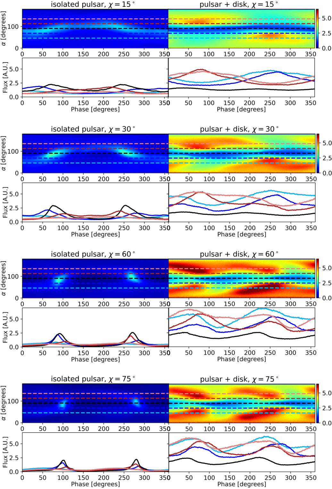
图注：Skymaps of the synchrotron radiation as a function of the viewing angle ($\alpha$) and the pulsar rotation phase, for all simulations. Below each skymap, we show the corresponding light curves computed for five different observer angles, $\alpha= 45^\circ$, $67.5^\circ$, $90^\circ$, $112.5^\circ$ and $135^\circ$, with dashed lines on the skymaps indicating the respective colors. The synchrotron flux is normalized to the time-averaged flux of the $\chi=15^\circ$ reference simulation. Data are averaged over $2\,P_{\rm spin}$ after convergence.
对应解读：对应“建议重点查看的图表”第5项合成同步辐射光变，以及“关键图表逐图导读”中关于单峰/双峰、峰宽、连续分量和不同磁倾角/视线角的光变解读。
入选理由：这是支撑论文核心观测结论的最关键图：同时给出同步辐射 skymap、旋转相位光变和多个观测倾角，能直接检验有盘模型是否产生增强连续分量、宽脉冲以及单峰/双峰形态转换，比单独的空间结构图更接近 PSR J1023+0038 的可观测量。
来源与置信度：\(arxiv_source\)；high；\(arxiv_source\) / main.tex:figure[6]
Fig04

图注：2D poloidal maps of the pulsar-disk interaction case for $\chi=15^\circ$, at $1.4\,P_{\rm spin}$. \(\textit{Left panel:}\) magnetic field strength ($B/B_\star$). \(\textit{Middle panel:}\) plasma isotropization ($B_\perp/B$). \(\textit{Right panel:}\) particle acceleration ($\langle \gamma \rangle$). The central black sphere represents the neutron star.
对应解读：对应“建议重点查看的图表”第3、4项电流片/非理想加速诊断和粒子洛伦兹因子空间分布，也对应“关键图表逐图导读”中粒子加速与盘—风相互作用界面的判断。
入选理由：该图同时展示磁场强度、等离子体各向同性化指标 \(B_perp/B\) 和平均洛伦兹因子，是判断辐射增强是否来自盘内缘附近真实加速和磁场压缩的核心诊断，比只看密度图更能连接到同步辐射产生机制。
来源与置信度：\(arxiv_source\)；high；\(arxiv_source\) / main.tex:figure[4]
Fig02
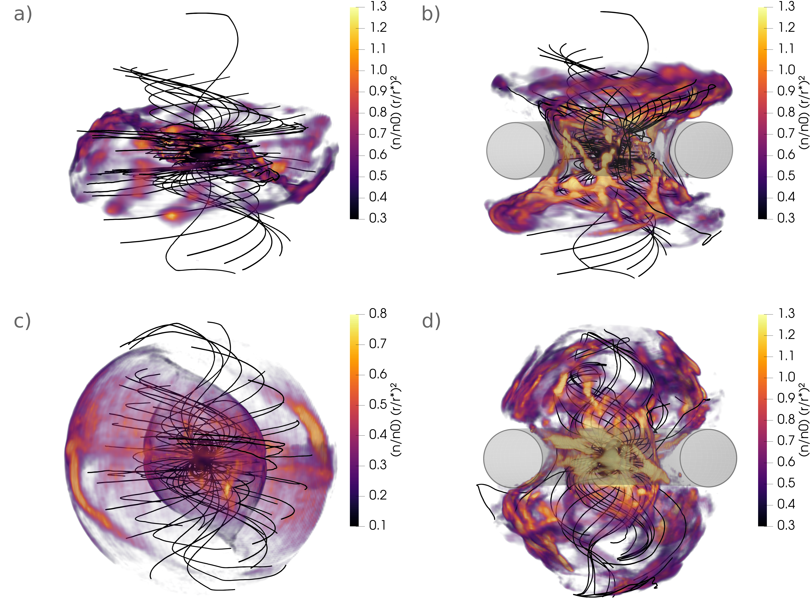
图注：3D rendering of the particle density $(n/n_0)(r/r_\star)^{2}$ in pulsar magnetospheres at $t=2.5\,P_{\rm spin}$. The normalization factor is defined as $n_0=\kappa \,n_{\rm GJ}$, where $\kappa=10$ represents the plasma multiplicity and $n_{\rm GJ}$ corresponds to the Goldreich-Julian density computed at the stellar magnetic poles. The central black sphere represents the neutron star, and black solid lines trace the magnetic field lines. \(\textit{Panels (a) and (c):}\) isolated pulsar magnetospheres for $\chi=15^\circ$ and $\chi=75^\circ$, respectively. \(\textit{Panels (b) and (d)}\): reconfiguration of the pulsar magnetosphere in the presence of the torus (grey shaded region), for $\chi=15^\circ$ and $\chi=75^\circ$, respectively.
对应解读：对应“建议重点查看的图表”第2项有盘与无盘的磁场/密度对比，以及“关键图表逐图导读”中关于磁层重构、盘内缘高密度积累的图2解读。
入选理由：该图直接并列比较孤立脉冲星和有导电环面时的三维粒子密度结构，并覆盖低、高磁倾角两种情形，最能说明盘的存在如何重构磁层和改变开磁力线/风区环境。
来源与置信度：\(arxiv_source\)；high；\(arxiv_source\) / main.tex:figure[2]
Fig08
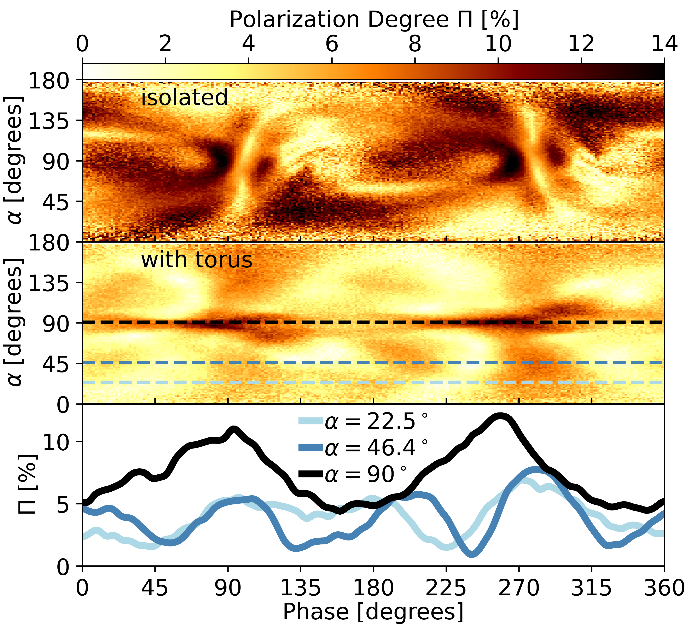
图注：Polarization degree ($\Pi$) as a function of the observer's viewing angle ($\alpha$) and the rotation phase, for $\chi=75^\circ$. \(\textit{Top panel:}\) isolated pulsar magnetosphere. \(\textit{Middle panel:}\) pulsar-disk interaction case. The dashed lines indicate specific viewing angles, with the corresponding curves shown in the bottom panel. \(\textit{Bottom panel:}\) polarization degree for three specific viewing angles ($\alpha=22.5^\circ$, $46.4^\circ$ and $90^\circ$). Data are averaged over $2\,P_{\rm spin}$ after convergence.
对应解读：对应“建议重点查看的图表”第6项偏振度随相位和观测角变化，以及“关键图表逐图导读”中有盘系统偏振度降低的判断。
入选理由：该图把孤立磁层与盘—风相互作用情形的偏振度 skymap 和相位曲线放在一起，能直接检验低偏振是否为全相位普遍降低，还是特定相位/视线角下由多辐射区叠加造成。
来源与置信度：\(arxiv_source\)；high；\(arxiv_source\) / main.tex:figure[8]
Fig09
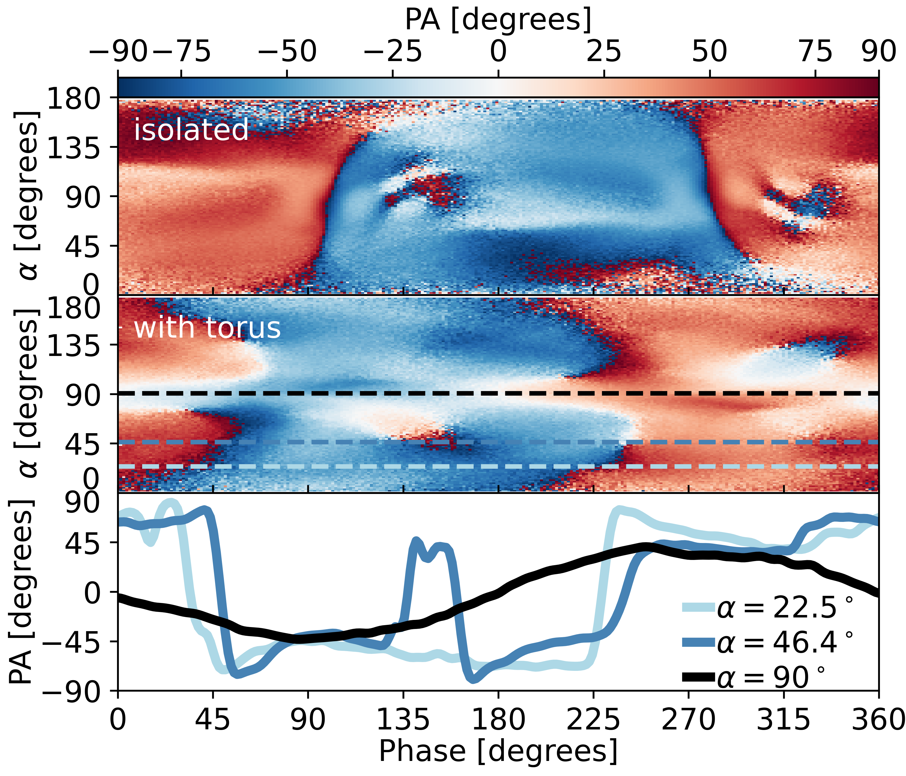
图注：Polarization angle (PA) as a function of the observer's viewing angle ($\alpha$) and the rotation phase, for $\chi=75^\circ$. \(\textit{Top panel:}\) isolated pulsar magnetosphere. \(\textit{Middle panel:}\) pulsar-disk interaction case. The dashed lines indicate specific viewing angles, with the corresponding curves shown in the bottom panel. \(\textit{Bottom panel:}\) polarization angle for three specific viewing angles ($\alpha=22.5^\circ$, $46.4^\circ$ and $90^\circ$). Data are averaged over $2\,P_{\rm spin}$ after convergence.
对应解读：对应“建议重点查看的图表”第7项偏振角曲线，以及“关键图表逐图导读”中偏振角旋转、视角依赖和相位突变的讨论。
入选理由：偏振角是打破几何退化的重要诊断量；该图同时给出孤立与有盘情形的 PA skymap 和指定视角曲线，可检查盘是否改变 PA 摆动、是否在光变相关相位出现快速旋转或作图约定导致的跳变。
来源与置信度：\(arxiv_source\)；high；\(arxiv_source\) / main.tex:figure[9]
Fig01
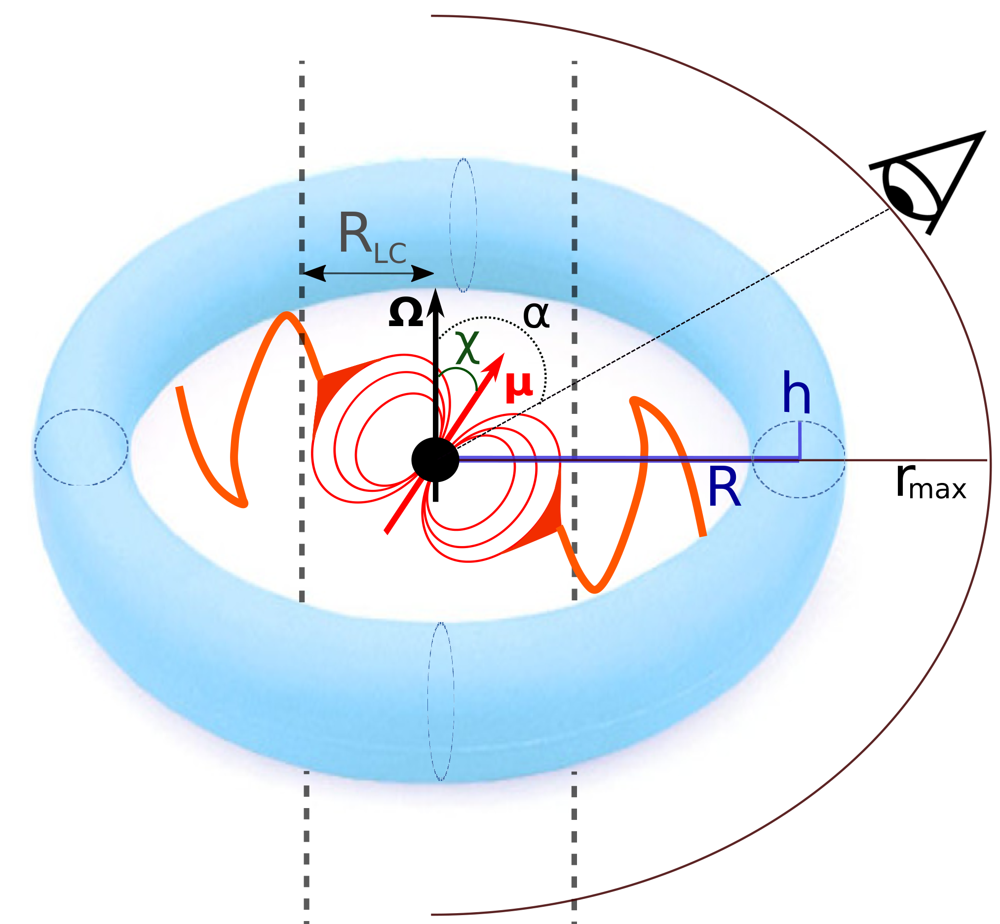
图注：Numerical setup. The pulsar, of angular velocity $\mathbf{\Omega}$ and light-cylinder radius $R_{\rm LC}$ is represented by the black sphere. The magnetic moment $\mathbf{\mu}$ is inclined by an angle $\chi$ with respect to the rotation axis. The torus aspect ratio $h/R$ is of $0.3$. $\alpha$ denotes the observer's viewing angle and $r_{\rm max}$ the outer boundary of the simulation box.
对应解读：对应“建议重点查看的图表”第1项三维几何和初始设置图，以及“关键图表逐图导读”中关于中子星、自转轴、磁轴、环面盘和光柱相对位置的说明。
入选理由：这是理解所有后续模拟结果的几何基准图，标出旋转轴、磁轴、观测角、光柱尺度和导电环面设置；虽然不直接给出辐射诊断，但对判断盘是否位于能影响磁层和风区的位置不可缺少。
来源与置信度：\(arxiv_source\)；high；\(arxiv_source\) / main.tex:figure[1]
强相关工作
这篇工作应放在三个文献脉络中读。第一是过渡毫秒脉冲星和 PSR J1023+0038 的观测脉络，包括同一源在射电脉冲星态、亚亮度盘态、X 射线多模态、光学脉冲和可能外流中的表现。检索关键词可用 “PSR J1023+0038 transitional millisecond pulsar optical pulsations X-ray pulsations sub-luminous disk state”。这些同源论文决定了本文模型要解释的真实约束。
第二是脉冲星磁层 PIC 模拟脉络，包括孤立倾斜磁层、外磁层电流片、磁重联和合成高能光变。本文的新增点是加入导电盘边界，使电流闭合和辐射区发生变化。检索关键词可用 “global PIC pulsar magnetosphere oblique rotator synchrotron light curve polarization”。
第三是竞争模型脉络，包括残余吸积到极冠、推进器排出、盘—磁层相互作用和喷流/外流模型。相反观点并不一定否认脉冲星风，而是强调光学或 X 射线脉冲可能来自更靠近表面的吸积热点，或来自喷流底部。检索关键词可用 “transitional millisecond pulsar propeller accretion powered pulsations pulsar wind disk interaction”。阅读本文时，应重点比较这些模型对偏振、相位滞后和能量依赖脉冲分数的不同预测。
同一事件 / 同类源线索：
相似工作：
基础理论 / 方法工作：
- https://arxiv.org/abs/astro-ph/0603147
- https://ui.adsabs.harvard.edu/abs/1969ApJ...157..869G/abstract
相反观点 / 张力线索：
（未提供）
8. The kinetic-energy bottleneck in Fast Radio Burst models
- 来源：arXiv / astro-ph.HE
- 链接：https://arxiv.org/abs/2606.25035v1
- 作者：Paz Beniamini, Pawan Kumar
- 评分：novelty 8/10，importance 8/10，relevance 7/10，final 8.65/10
- 推荐理由：提出FRB模型的近似模型无关动能和亮温约束，系统排除多类辐射机制；虽非伽马主题，但对高能瞬变理论有较高价值。
中文题目：快速射电暴模型中的动能瓶颈
做了什么：这篇论文把多数快速射电暴模型共有的“两步走”机制拆开审视：中心引擎先把能量变成粒子动能，粒子再以相干射电辐射释放能量。作者从亮温、动能光度、辐射区尺度、粒子洛伦兹因子和诱导康普顿散射等近乎模型无关的约束出发，比较磁层内模型、光柱附近强迫重联模型和外激波同步辐射脉泽模型。核心结论是：外激波模型虽能满足动能和亮温约束，却几乎不可避免地被上游介质的诱导康普顿散射吸收；光柱重联的射电效率通常太低；近中子星表面的磁层模型若能持续原位加速粒子，并解决射电波逃逸问题，反而是最有希望的方向。
为什么重要：快速射电暴的难点不是“有没有足够总能量”，而是如何在毫秒、GHz、极高亮温条件下把能量高效放进相干辐射，并让辐射逃出源区。本文强调的“动能瓶颈”把许多看似可行的模型压到同一个物理检验框架下：粒子能否持续获得能量、辐射效率是否足够、介质是否透明。这比单纯比较能量预算更接近决定性约束。
理论 / 观测 / 仪器方法价值：对理论工作，本文提供了一套可复用的模型无关筛选条件，可快速判断一个 FRB 辐射机制是否在亮温、粒子密度、加速电场和传播透明度上自洽。对观测解释，它提示窄带谱、极高亮温和毫秒结构并非独立特征，而会共同限制发射半径、上游密度、磁化度和可逃逸频段。对未来建模，本文把重点推向磁层内连续加速和波传播问题，而不是只调节外激波参数。
为什么应该关注：如果你关心 FRB 的中心引擎、相干辐射机制或磁星磁层等离子体，本文值得读，因为它不是提出又一个细节模型，而是在问：任何模型都绕不过哪些硬约束？它还给出一个清晰的判断：很多外部激波或远区重联方案的问题不是参数没选好，而是存在结构性的效率和透明度障碍。
展开详细解读：文章讲解、背景、理论、重点章节、图表与相关工作
文章详细讲解
科学问题：快速射电暴具有毫秒时标、GHz 频率、极高亮温和常常较窄的瞬时谱宽。许多模型默认中心引擎释放磁能或旋转能后，先转成粒子动能，再由粒子通过曲率辐射、同步脉泽、等离子体辐射或重联层辐射产生相干射电波。本文指出关键瓶颈在第二步之前：粒子动能库本身是否足够、是否能在辐射损失很快的情况下连续补充、源区是否既能产生足够亮温又能让波逃逸。
作者怎么做：Beniamini 和 Kumar 没有从某个具体 FRB 事件拟合入手，而是建立一组近乎模型无关的不等式。给定观测射电光度、频率和持续时间，可由亮温约束推出辐射粒子数、相干团簇尺度和粒子洛伦兹因子的需求；由动能光度约束判断粒子携带的能量流是否足以支撑观测辐射；由等离子体频率、回旋频率和诱导康普顿散射光深约束判断发射与传播是否可行。随后他们把这些约束分别应用到三大类模型：内磁层发射、光柱尺度强迫重联、外激波同步辐射脉泽。
关键结果：内磁层模型若只让粒子一次性获得动能，通常会违反亮温或动能光度约束；但如果存在持续原位加速，强磁场可提供足够平行电场，约在半径 \(R\lesssim 10^{10}\,\mathrm{cm}\) 内仍有希望。怪物激波式连续加速可以缓解能量补给，但所需粒子密度比 Goldreich-Julian 密度高出 \(\gtrsim 10^{12}\)，会把脉泽峰频推到 \(\gtrsim 10^3\,\mathrm{GHz}\)，与典型 GHz FRB 不匹配。光柱附近强迫重联虽能持续加速，压缩重联层实际辐射出的射电能量通常只有注入能量的 \(\lesssim 10^{-6}\)。外激波脉泽满足一些局部动力学约束，但上游风对诱导康普顿散射不可避免地光学厚；提高发射频率或要求上游磁化度 \(\sigma_{\rm w}\gtrsim 30\) 会严重牺牲效率，并与窄带谱存在张力。
局限和下一步：本文的力量在于物理约束简洁，但它也有意没有建立完整的三维时变磁层辐射转移模型。最有希望的近表面磁层方案仍需解决两个问题：持续加速如何在真实电流片、裂隙或扭曲磁力线中实现；GHz 波如何穿过强磁场、强等离子体和可能高度非均匀的磁层而不被吸收、散射或模式转换。下一步更有价值的工作不是只给出新的能量预算，而是把粒子加速、相干辐射、非线性波传播和偏振演化放到同一套计算中，与 FRB 的亚毫秒结构、频漂、偏振位置角和重复源环境一起检验。
关键结果是怎么做出来的
本文的证据链从“典型 FRB 可观测量”开始，而不是从单个源的详细拟合开始。作者把观测输入抽象为射电各向同性等效光度 \(L_{\rm FRB}\)、中心频率 \(\nu\)、持续时间 \(t_{\rm FRB}\)、谱宽以及相干辐射所需的亮温。这样做的好处是结论对具体样本选择不敏感：只要事件落在普通宇宙学 FRB 的光度和时标范围内，约束数量级就成立。本文不是统计发现论文，因此没有“事件数显著性”的主结论；其可信度来自多条不等式在参数空间中的重叠排除。
最重要的模型比较可以理解为三个诊断量的联合筛选。第一，给定观测亮度，发射区需要的相干电荷或粒子动能不能超过可供给的粒子能量流。第二，粒子一旦辐射损失过快，必须有平行电场或激波/重联结构持续补能，否则瞬时亮温不可维持。第三，发出的 GHz 波必须穿过源区和上游介质，特别是不能被诱导康普顿散射以大光深抹掉。作者用这些诊断量分别画出或讨论可行参数域，关键读法是看哪些区域同时满足 \(L_{\rm kin}\gtrsim L_{\rm FRB}\)、亮温约束和传播光深 \(\tau\lesssim 1\)。
对于内磁层模型，支撑结论的不是某个单一数值，而是两个互补限制：近表面强磁场能提供足够电场和能量密度，但粒子若不被持续加速，会因相干辐射需求而耗尽动能；若引入持续加速，则要求电场结构、粒子密度和波逃逸同时自洽。怪物激波版本被作者进一步用 Goldreich-Julian 密度比较约束：若所需密度超出 \(n_{\rm GJ}\) 约 \(10^{12}\) 倍，等离子体和脉泽特征频率会被推到远高于 GHz 的范围，这使其难以解释典型窄带 GHz 爆发。
对于光柱强迫重联，论文的关键结果是效率而非能量总量。重联可以把磁能持续送入粒子，并在压缩层中提供相干辐射环境；但作者估算射电输出与注入能量之比通常 \(\lesssim 10^{-6}\)。因此即使中心引擎能量充足，要求达到观测 \(L_{\rm FRB}\) 时也会变成过度昂贵的能量转换链。读相关图表时应重点看效率随半径、压缩因子、粒子密度和洛伦兹因子的标度，而不是只看是否能产生 GHz 频率。
对于外激波脉泽，本文最具杀伤力的论证是诱导康普顿散射的“参数无关性”。传统外激波模型常调节上游密度、爆发能量、洛伦兹因子和磁化度来满足峰频与持续时间；但作者指出，一旦这些量被 FRB 光度、频率和时标联系起来，上游风对强相干波的诱导散射光深会自然很大。试图让发射在脉泽峰以上逃逸会降低效率并破坏窄带谱解释；提高上游磁化度到 \(\sigma_{\rm w}\gtrsim 30\) 可减弱散射，但也使脉泽效率很低。稳健性主要来自这些逃逸方案都要在效率、谱形和透明度之间付出代价。
展开背景、理论、公式、模型、章节和图表导读
背景知识
快速射电暴是毫秒级射电脉冲，具有极高的等效亮温，远超任何非相干热辐射过程。自 Lorimer burst 以来，观测已经从少数孤例发展到大量重复源和非重复源样本，并发现频漂、复杂亚结构、高偏振、极端旋转量以及不同宿主环境。FRB 20121102A 和 FRB 20200120E 等重复源说明至少一部分 FRB 与紧致天体磁层活动有关，而银河磁星 SGR 1935+2154 的射电爆发把磁星模型推到中心位置。
历史上的核心争论是发射发生在中子星磁层内，还是在离星体更远的外流和激波中。磁层模型容易解释短时标、强磁场和重复性，但难点是相干机制、等离子体遮蔽和波逃逸。外激波模型自然给出类似 GRB 余辉的动力学框架，能把爆发能量、外部介质和同步脉泽联系起来，但面对高效率、窄带谱和传播吸收时压力很大。光柱附近重联模型位于两者之间，利用旋转磁层外缘的强电流片和磁能释放。
为什么现在值得重新看？一方面，观测样本已经足够丰富，不能再用单一能量尺度解释所有现象；另一方面，理论模型经过多年发展后，很多方案都能在“总能量”层面过关，却在“动能到相干射电”的局部转换上缺少硬检验。本文抓住这一点：FRB 的高亮温意味着发射粒子不是普通辐射冷却问题，而是一个强相干、强反作用、强传播效应耦合的问题。
该领域常见误区包括：把各向同性等效能量当作实际能量而不讨论束流因子；认为磁星磁能足够就自动解决 FRB 发射；把同步脉泽峰频调到 GHz 后忽略上游诱导散射；或者只计算发射区局部辐射效率而不检查波能否逃出。本文的贡献正是把这些误区压缩成少数可检查约束，让读者看到“可供能量”“可辐射能量”和“可逃逸能量”是三件不同的事。
基础理论 / 方法脉络
基础物理图像是：观测到的 FRB 射电光度对应一个极高亮温，意味着单个电子的非相干辐射远远不够，必须有大量电荷在相位上协同辐射。相干辐射的好处是功率可随参与电荷数近似平方增长；代价是要求粒子分布、辐射区尺寸和等离子体频率满足严格条件，并且辐射反作用会迅速抽走粒子动能。
若发射先由中心引擎把磁能或电势能转成粒子动能，再由粒子辐射为 GHz 波，那么最低要求是粒子动能光度不小于射电光度除以效率。若效率不能接近一，所需动能流会更大。本文所谓“动能瓶颈”就是：很多模型看似有足够磁能，但在局部发射区无法把足够多粒子以足够高洛伦兹因子、足够快地补能。
在磁层模型中，关键量包括发射半径 \(R\)、磁场 \(B(R)\)、平行电场 \(E_{\parallel}\)、粒子数密度 \(n\)、粒子洛伦兹因子 \(\gamma\) 和局部等离子体频率。Goldreich-Julian 密度给出旋转磁层维持电流所需的基准密度；若模型要求远超该密度的对产生倍增，就必须解释等离子体如何产生、如何不把发射频率推高、以及如何让射电波穿过。
在外激波同步脉泽模型中，爆发 ejecta 撞击上游风，激波前沿的反射或环形粒子分布产生脉泽辐射。峰频通常与上游等离子体频率、激波洛伦兹因子和磁化度有关。常见退化是：改变上游密度和洛伦兹因子可以维持同一观测频率和持续时间，但这并不保证传播透明；强相干波会增强诱导散射，导致光深约束比普通自由-自由吸收或 Thomson 光深更强。
在统计和模型比较意义上，本文不是用后验概率选择最佳模型，而是用必要条件排除参数域。读者应把每条约束视为“生存检验”：亮温检验排除粒子数或相干尺度不足的方案；动能光度检验排除一次性加速不够的方案；诱导康普顿光深检验排除远区外激波中看似动力学可行但传播不透明的方案。
公式与推导
第一步从亮温定义开始。若观测通量密度为 \(F_{\nu}\)，源的角尺度为 \(\Omega_{\rm s}\)，Rayleigh-Jeans 极限给出
这里 \(I_{\nu}\) 是比强度，\(T_{\rm b}\) 是亮温，\(\nu\) 是观测频率。FRB 的 \(T_{\rm b}\) 极大，说明普通非相干辐射不可能解释，需要相干增强。
第二步把毫秒时标转成发射区尺度。若源区以洛伦兹因子 \(\Gamma\) 运动，持续时间 \(t_{\rm FRB}\) 对应的因果尺度可写成数量级关系
其中 \(R\) 是发射半径，\(\ell'\) 是共动系厚度。该式连接观测时标与模型中的半径和体积，是后续密度、光深和能量流估算的入口。
第三步写动能光度下限。若辐射粒子数密度为 \(n'\)，共动体积流过面积约 \(4\pi R^2\)，粒子质量为 \(m\)，平均随机洛伦兹因子为 \(\gamma'\)，则
任何两步模型都至少要求
其中 \(\epsilon_{\rm r}\) 是动能到射电的效率。若 \(\epsilon_{\rm r}\ll 1\)，所需 \(n'\) 或 \(\gamma'\) 会迅速变得不可接受。
第四步给出相干辐射的基本标度。若一个相干团簇含 \(N_{}\)
m coh}) 个同相电荷，单粒子功率为 \(P_1\)，则理想情况下
但团簇总动能只有
因此高相干功率会带来很短的辐射冷却或耗能时间
若 \(t_{}\)
m cool}\(\ll\) \(t_{\rm FRB}\))，就必须有持续原位加速，这正是本文强调的内磁层模型必要条件。
第五步用磁层电荷供应作参照。旋转磁化中子星的 Goldreich-Julian 数密度为
其中 \(\Omega\) 是角速度，\(B\) 是局部磁场，\(e\) 是元电荷。若模型要求 \(n/n_{\rm GJ}\gg 1\)，就意味着需要极高对产生倍增；本文指出某些怪物激波情形可达到 \(n/n_{\rm GJ}\gtrsim 10^{12}\)，这会反过来改变等离子体频率和脉泽峰频。
第六步是等离子体频率约束。共动电子等离子体频率为
许多脉泽或等离子体辐射的特征频率与 \(\Gamma\nu_{\rm p}'\) 同阶。提高 \(n'\) 虽能提供更多粒子动能，却会把峰频推高；这解释了为什么过高密度会与 GHz FRB 谱段冲突。
第七步考虑传播透明度。普通 Thomson 光深为
其中 \(\sigma_{\rm T}\) 是 Thomson 截面。但 FRB 的高亮温使诱导康普顿散射更强，其有效光深可用数量级写成
其中 \(\mathcal{G}\) 包含几何、频率梯度、相对运动和各向异性修正。由于 \(T_{\rm b}\) 极大，即使 \( au_{\rm T}\) 很小，\(\tau_{\rm ind}\) 也可能远大于一。
第八步把模型判据合并成可行性条件。一个 FRB 模型至少要同时满足
这里 \(t_{}\)
m acc}) 是加速时间。本文的中心结论就是：外激波模型常在第三个条件失败，光柱重联常在 \(\epsilon_{\rm r}\) 上失败，而近表面磁层模型若能满足持续加速和波逃逸，仍是相对最有希望的生存区。
模型拟合 / 应用方法
本文不是传统意义上对一个观测样本做参数后验拟合，而是做物理可行性空间的约束分析。拟合量可以理解为典型 FRB 的 \(L_{\rm FRB}\)、\(t_{\rm FRB}\)、\(\nu\) 和谱宽被用作输入，模型参数 \(R\)、\(n\)、\(\gamma\)、\(\Gamma\)、\(B\)、\(\sigma_{\rm w}\) 和 \(\epsilon_{\rm r}\) 被要求同时满足若干不等式。读者应把结果看成先验物理筛选，而不是最大似然点估计。
若要把这类分析发展成正式拟合，可把每个观测 FRB 的通量、距离、持续时间、中心频率、带宽和偏振信息写入似然函数，并对束流因子、红移、发射半径、上游密度和磁化度设先验。模型预测不只是光度和频率，还应包括是否满足 \( au_{\rm ind}<1\)、是否有足够 \(L_{\rm kin}\)、以及峰频是否落在观测带宽。违反硬物理约束的参数点应当给出零先验或强惩罚项。
主要退化关系包括：更大的 \(\Gamma\) 可增大发射半径和降低局部亮温压力，但会改变外激波持续时间和峰频；更高 \(n\) 可提高动能流，却抬高等离子体频率并增强散射；更高 \(\sigma_{\rm w}\) 可减少某些散射问题，但会降低脉泽效率；更强束流可降低真实能量需求，但不一定降低局部亮温和诱导散射。本文的价值在于指出这些退化并不能让所有模型自由逃脱，因为约束之间相互锁定。
系统误差主要来自观测和理论两端。观测上，FRB 距离、真实束流角、局部谱峰是否在望远镜带内、以及亚爆发真实持续时间都会影响 \(L_{\rm FRB}\) 和 \(T_{\rm b}\)。理论上，相干团簇几何、等离子体非线性波传播、强磁场下散射截面、以及磁层中模式转换都可能改变数量级系数。但本文强调的许多结论依赖的是巨大数量级差异，例如 \(10^6\) 的效率缺口或 \(10^{12}\) 的密度倍增，因此不太可能被小系数完全抹平。
实际应用场景是用这些公式为新模型做快速压力测试。一个新 FRB 模型如果声称发生在远区外流，应首先计算上游 \( au_{\rm ind}\)；如果声称发生在光柱重联，应首先计算射电效率而非总磁能；如果声称发生在近表面磁层，应给出明确的持续加速机制和波逃逸路径。观测论文也可把异常窄带、高亮度、强偏振或极短时标事件放进这些约束，判断它们更偏向近表面还是外激波解释。
重点章节 / 结果段落怎么读
-
引言和问题设定：应重点读作者如何定义“两步过程”和“动能瓶颈”。这里通常会说明为什么总能量预算不够，必须要求粒子动能、相干辐射和传播透明同时成立。读者要留意作者对波逃逸问题的边界设定：本文把它视为磁层模型仍需解决的关键外部问题，而非已经完成的证明。
-
模型无关约束部分：这是全篇最值得细读的技术核心。应跟踪亮温、动能光度、粒子洛伦兹因子、密度、发射半径和冷却时间之间的关系。建议把每个不等式改写成对 \(R\)、\(n\) 或 \(\gamma\) 的限制，看哪些限制随 \(L_{\rm FRB}\)、\(t_{\rm FRB}\) 和 (
u) 最敏感。 -
内磁层和怪物激波讨论：读者应关注“连续原位加速”为什么是必要条件，以及磁星强磁场能在多大半径内提供足够 \(E_{\parallel}\)。对怪物激波，要重点看所需密度相对 \(n_{\rm GJ}\) 的倍数，以及这一密度如何把脉泽峰频推离 GHz。
-
光柱强迫重联部分：这里的关键不是是否能触发重联，而是压缩重联层把注入能量转成可观测射电的效率。读者应查看效率估算中哪些参数最可变，哪些参数受光柱半径、磁场结构和等离子体供应限制。
-
外激波脉泽和诱导康普顿散射部分：这是本文对外激波模型最直接的挑战。应读清楚作者为何认为上游风的诱导散射光深与模型主要参数调节无关，及其逃逸方案为什么会导致低效率或谱形张力。
-
结论和展望：重点不是简单记住“磁层模型最好”，而是理解限定语：近表面磁层模型只有在持续加速和波逃逸都成功时才最有希望。后续研究应围绕这两个问题建立可观测预测。
建议重点查看的图表
-
亮温和动能约束的参数空间图：看横轴和纵轴是否为发射半径、密度或洛伦兹因子；重点检查允许区是否同时满足亮温与 \(L_{\rm kin}\) 条件。
-
冷却时间与加速时间比较图或表：看 (t_{
m cool}) 是否远短于 \(t_{\rm FRB}\)，以及哪些模型需要持续加速。若只有数量级表，也要比较不同半径和磁场下的差异。 -
密度相对 \(n_{\rm GJ}\) 的要求：重点看所需 \(n/n_{\rm GJ}\) 是否达到极端倍增，以及对应峰频是否仍在 GHz。
-
光柱重联效率诊断：检查射电输出与注入能量之比如何随压缩因子、层厚、粒子密度或磁场变化；关键是是否长期停留在 \(\lesssim 10^{-6}\)。
-
外激波诱导康普顿光深图：看 \( au_{\rm ind}=1\) 的边界在哪里，典型模型点是否落在光学厚区。注意不要只看 \( au_{\rm T}\)，诱导项才是核心。
-
发射频率或脉泽峰频随密度、磁化度变化的图：检查逃逸方案是否把峰频推到远高于观测 GHz，或导致宽谱/窄谱矛盾。
-
稳健性或参数标度表：查看作者改变典型 FRB 光度、持续时间、频率后，三类模型排序是否改变。若结论只在极端参数下成立，应特别标记。
关键图表逐图导读
图 1：若论文给出模型无关约束图，通常应把横轴理解为发射半径 \(R\) 或粒子洛伦兹因子 \(\gamma\)，纵轴为密度 \(n\)、动能光度 \(L_{\rm kin}\) 或允许效率。数据点可能不是观测事件，而是典型 FRB 标度线。读图时看不同阴影区的交集：只有同时通过亮温、动能和频率条件的区域才是真正可行区。陷阱是把单条约束线下方误认为完整允许区。
图 2：内磁层模型相关图通常会展示磁场、电场或所需密度随半径的变化。横轴若为 \(R\)，模型线可能包括偶极磁场下降、Goldreich-Julian 密度下降和所需发射密度。主要结论是强磁场可在近星区域支持持续加速，但密度和波逃逸会成为新问题。读图陷阱是忽略 \(R\lesssim 10^{10}\,\mathrm{cm}\) 这类半径条件背后的磁场几何假设。
图 3：怪物激波或高密度磁层方案的图应重点看 \(n/n_{\rm GJ}\) 与脉泽峰频。若纵轴为频率，模型线越过 \(10^3\,\mathrm{GHz}\) 就意味着与典型 GHz FRB 不匹配。陷阱是认为高密度总是有利于高亮度；实际上高密度会改变等离子体频率和传播性质。
图 4：光柱重联效率图的横轴可能是压缩比、磁化度、层厚或半径，纵轴是射电效率 \(\epsilon_{\rm r}\)。应检查典型参数下是否只有 \(\lesssim 10^{-6}\)，以及有没有宽广参数区能提升效率。读图陷阱是只关注局部辐射功率峰值，而不比较总注入能量。
图 5：外激波诱导康普顿散射图通常最关键。横轴可能是上游密度、爆发能量、磁化度或观测频率，纵轴为 \( au_{\rm ind}\) 或允许光度。\( au_{\rm ind}=1\) 的线是读图核心；典型外激波点若在 \( au_{\rm ind}\gg 1\) 区域，说明发射即使产生也难以逃逸。陷阱是用普通 Thomson 光深直觉低估诱导散射。
图 6：若有逃逸方案比较图，应看发射高于脉泽峰或提高 \(\sigma_{\rm w}\) 后效率如何下降。坐标轴可能同时涉及频率偏离峰值和磁化度。主要结论是这些方案不是免费参数调节，而是在透明度、效率和窄带谱之间交换问题。
论文原图 / 可嵌入图片
Fig03
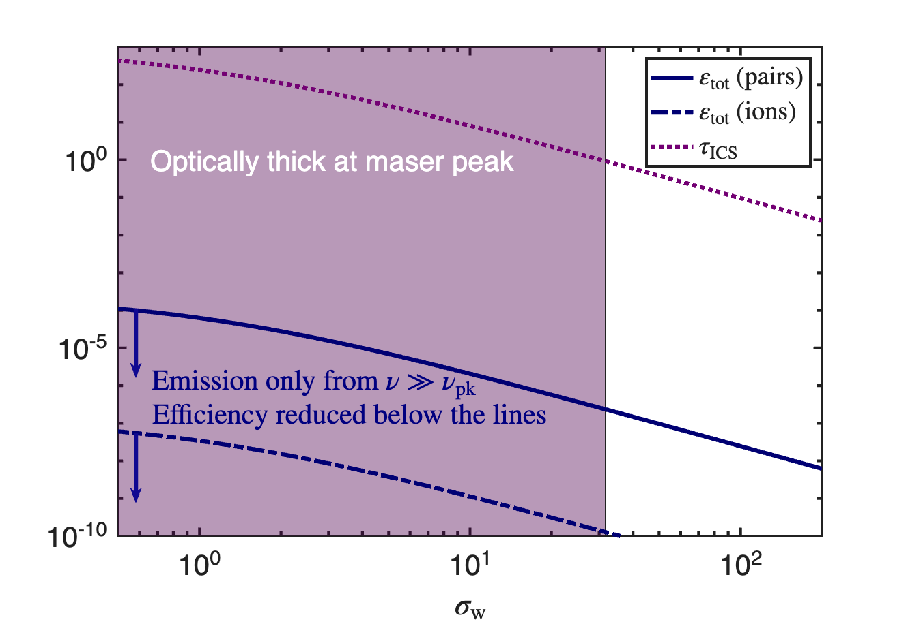
图注：Total radiative efficiency (blue) and optical depth to induced Compton at the peak emission frequency (purple) in the maser blastwave model. The results are shown for $t_{\rm FRB}=1$\,ms, $\nu=1$\,GHz and are independent of other FRB observables. Models involving small to moderate magnetization, $\sigma_{\rm w}\lesssim 30$, rely on intrinsically broadband spectrum of the maser emission in order to produce any observable signal. However these lead to a significant reduction of the already low efficiency, and generally results in observed broadband spectra. $\sigma_{\rm w}\gtrsim 30$ can naturally result in optically thin conditions at the maser peak, but the maximum efficiency is tiny $\epsilon_{\rm tot}\lesssim 10^{-10}$ for electron ion ($\epsilon_{\rm tot}\lesssim 2\times 10^{-7}$ for pairs).
对应解读：建议重点查看的图表第5、6项；关键图表逐图导读中关于外激波诱导康普顿散射和逃逸方案效率下降的段落。
入选理由：该图同时给出外激波脉泽模型的总辐射效率和峰值发射频率处的诱导康普顿光深，是检验外激波模型是否能让GHz辐射逃逸的核心诊断图。它直接对应日报强调的“(\ au_{\
m ind}=1)边界”“(\sigma_{\
m w}\gtrsim30)逃逸代价”和“效率变得极小”等关键结论，比单纯能量预算图更能支撑论文的主要排除性论证。
来源与置信度：\(arxiv_source\)；high；\(arxiv_source\) / \(main_arxi.tex\):figure[3]
Fig01
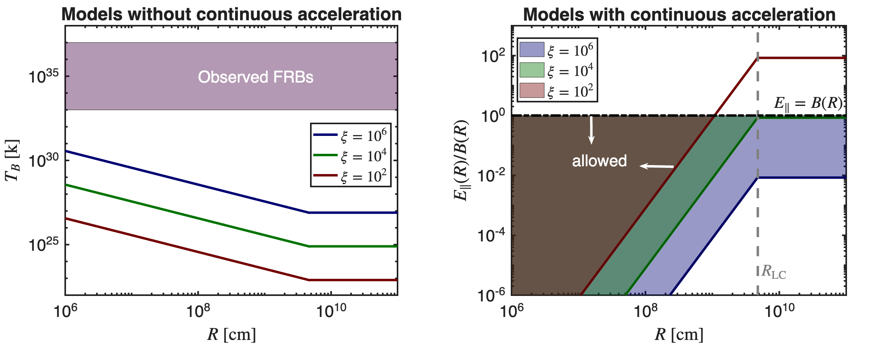
图注：Top: Observationally inferred brightness temperature as a function of the radius of the plasma beam for models involving no \(\emph{in situ}\) acceleration (Eq. \ref{Tb-max}). Magnetospheric (\(\S\) \ref{sec:magnetospheric}) and intermediate (\(\S\) \ref{sec:intermediate}) models without continuous acceleration, fall short by orders of magnitude as compared with the observed values ($T_{B}\sim 10^{33}-10^{37}$K, shown by a shaded region). Bottom: The central engine frame electric field strength required in order to sustain the acceleration in the same models ($E_{\parallel}
入选理由：该图上面板展示无原位持续加速模型的亮温上限与观测FRB亮温区间之间的巨大差距，下面板展示维持加速所需平行电场与磁场条件随半径的关系，直接支撑“内磁层若无持续加速会失败，但近星区域仍可能由强磁场供能”的核心判断。它把亮温、发射半径和持续加速条件放在同一张图中，是理解全文动能瓶颈的基础图。
来源与置信度：\(arxiv_source\)；high；\(arxiv_source\) / \(main_arxi.tex\):figure[1]
Fig02
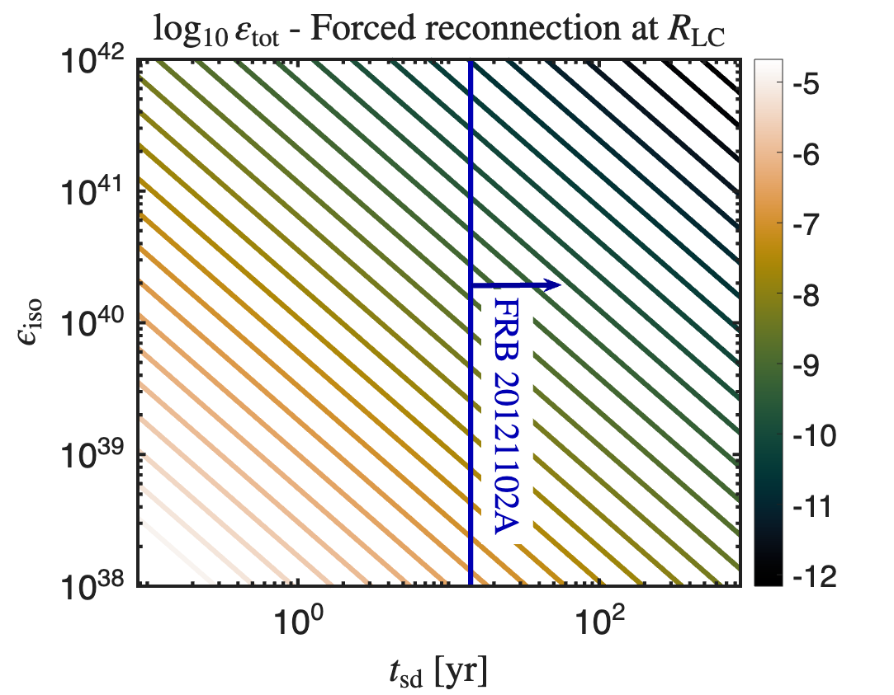
图注：Total efficiency in the forced reconnection model ($\varepsilon_{\rm tot}$) as a function of the isotropic equivalent FRB energy, $\epsilon_{\rm iso}$ and the assumed spindown age of the NS source, $t_{\rm sd}$. For FRB 20121102A, the true age is $>14$\,yr (vertical line) and this leads to tiny efficiencies in this model, especially for higher energy bursts. Results are plotted for a radiative efficiency (fraction of energy in reconnection zone, radiated in radio) of $\varepsilon_{\rm rad}=10^{-2}$ as well as for $\Gamma_{\rm w}=1, N_{\rm fms}=10,t_{\rm FRB}=1\mbox{ ms}$, see \(\S\) \(\ref{sec:intermediate}\) for details.
对应解读：建议重点查看的图表第4项；关键图表逐图导读中关于光柱尺度强迫重联效率诊断的段落。
入选理由：该图给出强迫重联模型总效率随各向同性等效爆发能量和中子星自旋下降年龄的变化，并标出FRB 20121102A年龄下限，可用于检查该模型在真实重复暴源参数下是否只能达到很低效率。虽然横轴不是压缩比或层厚等微观量，但它仍是候选图中唯一直接对应光柱重联效率问题的图。
来源与置信度：\(arxiv_source\)；high；\(arxiv_source\) / \(main_arxi.tex\):figure[2]
强相关工作
本文与外激波同步脉泽模型、磁星磁层曲率/等离子体辐射模型、以及光柱重联模型直接相关。同类工作可用关键词检索：“FRB synchrotron maser external shock induced Compton scattering”、“magnetar magnetosphere coherent curvature radiation FRB”、“FRB light cylinder reconnection”。特别应把本文与 Lyubarsky 的磁化激波脉泽设想、Metzger-Margalit-Sironi 一类的磁星耀发外激波模型、以及 Beloborodov/Kumar 等关于磁层发射和传播的工作并读。
这篇文章与既有外激波模型形成明显张力：外激波方案过去的优势是把持续时间、峰频和能量释放放进较清楚的动力学框架，但本文认为诱导康普顿散射是难以通过主参数调节绕开的硬障碍。与磁层模型的关系则更像“有条件支持”：作者并不宣称现有磁层模型已经完成，而是认为在动能瓶颈筛选后，近表面、持续加速的磁层方案保留最大生存空间。检索时还应加入 “SGR 1935+2154 radio burst magnetar”、“CHIME FRB catalog”、“FRB brightness temperature coherent emission review” 以连接观测背景和理论综述。
同一事件 / 同类源线索：
- https://arxiv.org/abs/2606.25035
- https://arxiv.org/abs/0709.4301
- https://arxiv.org/abs/1307.1628
- https://arxiv.org/abs/2106.04352
相似工作：
基础理论 / 方法工作：
相反观点 / 张力线索：
说明
评分由 LLM 给出初评，再由本地阈值策略过滤；IACT、TeV 伽马射线和高能中微子天文学按重点方向处理。